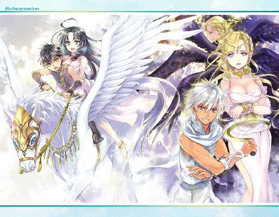
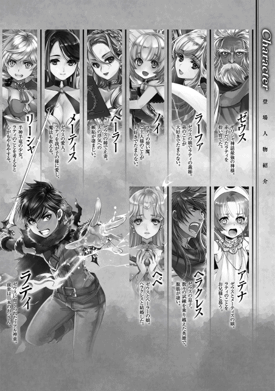

| 転生 神々に育てられた少年の物語3 | |
| わたがし大五郎 | |
| TOブックス (2016) | |
ソロモン王復活を企む悪魔と戦い続けるラティの前に、ある日【オリュンポス十二神】の１人、美の女神アプロディーテが現れる。だが、彼女は何とソロモンの悪魔アスタロトとして堕天していて、時の神クロノスの暗殺による歴史改変を企んでいた！ それを阻止しようとした瞬間、ラティたちは何と100年前にタイムスリップしてしまい、その時代で出会った英雄ペルセウスや怪物メデューサも交えて、アプロディーテの過去に隠された真相に迫っていく。その恩讐の彼方に垣間見えたものとは!? ――遥かなる時を越えて、ゼウスの孫が悲しき運命をくつがえす！
イラスト：椋本夏夜
デザイン：BEE-PEE


プロローグ
時は百年前に遡る。アルゴスの王アクリシオスは神託を授かった。
『汝の娘はゼウスと交わり、その子供は英雄となる。そして、お前は殺される』
無慈悲に伝えられた神託に苦悩したアクリシオスは、娘を青銅の塔に閉じ込めた。
しかし娘は世界屈指の美女。女好きのゼウスは黄金の雨に姿を変えて、青銅の塔へ忍び込む。一夜にして親しくなった二人は情を交わし、やがて英雄ペルセウスが生まれた。
それを知り、怒り狂ったアクリシオスは娘とペルセウスを木箱に詰め、海へと流した。
その後、木箱はある島へと流れ着き、優しき漁師によって救出され、娘は平穏な暮らしを手に入れることができた。こうして、ペルセウスは立派に成長していく。
──それから、少し未来の話。
廃墟となった瓦礫の都市に美しい女性の姿があった。
荒廃した世界に花を捧げながら、恨み事を呟く。
「私は貴方のために、神々を滅ぼすことを決めましたよ」
愛と美貌を司る女神アプロディーテ、であった。
彼女は悪しき神ではないのだが、全ての異性を平等に愛することで多くの虜を作り、淫蕩の罪を被せられ、青年の肉体へと姿を変えられてしまった。
女神のなかでも複数の神話に渡ってモチーフにされた女神は彼女くらいしか存在しない。
戦場の女神や豊穣の女神へと転生することで、神々のなかでも規格外の力を手に入れてしまったアプロディーテ。そしてゼウスたちが犯したある過ちによって奈落へと落とされたアプロディーテは、神々に復讐を誓っていた。
「ソロモン王よ、貴方に忠誠を誓います。愚かな私にどうか力をお与えください！」
女神から悪魔へと堕ちた瞬間であった。
──英雄ペルセウス。元女神アプロディーテ。転生者ラティ。
三者の物語が交差した時、新たな物語が紡がれる。
時代は、歴史の改変を望んでいた。
アールヴヘイム大陸へ
「ふわぁ......」
隣では、ノイが眠そうに欠伸をしていた。
ここはミズガルド王国の海翼戦艦アルカディア号の甲板だ。
僕たちの傍ではミズガルド魔法兵士隊が鍛錬をしている。
「お二人とも、戦艦の旅はどうですか？」
海を眺めている僕たちの方へ、ラ―ファさんが近寄ってきた。
「はいっ、とっても素敵ですっ！ アテナさんも一緒に来られたらよかったですね」
「危険だから仕方ないですよ。メーティス様が引き止めてましたし」
ラーファさんは困ったように首を傾げた。
僕たちが戦艦に搭乗しているのには、もちろん理由がある。
新たな神託を授かったからだ。
『──時の神クロノスの命が狙われています』
ギリシャ神話にはクロノスが二人いる。
まずひとりはゼウスの父親、農耕神クロノスだ。
自らの権力を保持するために息子たちを次々に取り込んだが、母親レアの手によって末っ子のゼウスが助けられ、成長したゼウスの手によって打ち倒される。それは神々の歴史に刻まれるほどの戦争で、《ティタノマキア》と通称されている。
話は脱線したが、もう一人が時間神クロノスだ。
彼に関する文献は殆ど残されていないため、どのような人物なのかは僕にも分からない。
お爺ちゃんの話だと、世界が時間を保つのに必要な神様らしい。
孤独を好んでいるから他の神様とは一緒に暮らしていないそうだ。
そういう事情で僕たちはクロノスさんを守るべく、獣人と妖精たちが生活するアールブヘイム大陸へと向かっている。
「今回はミズガルド国王が全面的に協力してくださったので、戦艦をお借りすることができました。現在、この艦には二百名ほどの戦力が搭乗しています」
「それだけ今回の戦いが重要ってことね？ にしても凄い船よね」
と、今度は竜人のリーシャが近づいてきた。
甲板から身を乗り出して短く感想を述べる。
翼の中間よりやや下部には魔力機関とやらが搭載され、魔法技術に抜き出たミズガルド王国の技術力の高さが垣間見えるのだが、この戦艦は遊覧船程度のサイズしかない。
小さく見えるかもしれないが、これでも最新鋭の戦艦だったりする。
「これから向かう場所は、飛竜船で行けない場所なんですよね？」
「はい。地上は問題ないんですけど、上空には高密度の魔力汚染が広がっているので、僅かでも体内に摂取すれば命を落としちゃいますね」
それだけ危険な場所に隠れていたからこそ、今まで時間神クロノスの存在を知られなかったのか。
「あのぅ、ご主人様」
「どうしたの？」
ノイが申し訳なさそうに見上げてくる。
「今度は命を捨てる、なんて選択はしないでくださいね！」
「そうですね。見届けるほうは辛いんですよ」
ラーファさんも同調した。
以前、僕は悪魔の放った【星落とし】の魔法に対抗するために命を散らした。
あの時は運命の女神様に命を助けてもらったのだが、僕の帰りを待ってくれている人がいることも忘れてはならない。
「誰かを守りたいって思うのは、人間の本能だと思うんだ。でも、生きるって約束する。二人の傍にいるよ。それじゃ駄目かな？」
「駄目じゃないです！ むしろ嬉しいくらいです！」
「ふふ、そうですね。ラティさんらしいです」
彼女たちは明らかに僕へ好意を寄せてくれている。それだけに気まずく、嬉しいのに胸が痛い。はっきり好きだと伝えられればいいんだけど......。
「ご主人様、どうされたんですか？」
「ラティさん？」
彼女たちの目は熱い何かを訴えている。
「あ、えと、その......」
こういう時だけは、お爺ちゃんのように言い逃れをする交渉術が欲しいな。
「それくらいにしてあげなさいよ。ラティが困っているわよ？」
助け船を出してくれたのはリーシャだった。
「最近、ご主人様を庇いますね」
「ええ。気づいたら一緒にいることが多いです」
リーシャは僕から借金をしているので、ご機嫌を伺うのに必死なだけだ。別にそこまで尽くす必要は無いんだけどね。
「嫉妬すればいいってもんじゃないわよ。アタシたちは戦いに来たのであって、デートしに行くわけじゃないのよ？ 浮ついた気持ちで戦えばデートだってできなくなるかもしれないじゃない」
うぐ、とラーファさんたちが言葉を詰まらせた。
リーシャは今回の戦いについて、「ま、どうにかなるわよ」と、楽天的な返事をしていた。
彼女なりの励まし方かもしれない。
彼女は一見落ち着いているように見えるけど、甲板では無邪気に目を輝かせ、きょろきょろとマストや船内を探索して、迷子になって泣きじゃくっていたことを僕は知っている。
大人なのか、子供なのかよく分からないな。
「ラーファ、そろそろアールヴヘイム大陸に到着するみたいだぞ」
ヘラクレスが一礼して告げた。
「ご報告ありがとうございます。ヘラクレスさんは何をされていたんですか？」
「艦長や隊長たちと作戦を練っていた」
相変わらず真面目な漢だ。
「えー、それでは皆さん。私のお話を聞いて頂けますか？」
ラーファさんが甲板を見渡して叫ぶ。
訓練中の兵士たちも腕を止め、緊張が走った。
「これから私たちが戦うのは、世界を絶望に染めようとする悪魔です。悪魔を野放しにしておけば沢山の命が失われてしまいます。それを防ぐために私たちは戦いを決意しました」
右から左へと首を動かし、全員の顔を確認していく。
悪魔との戦争に参加してくれる彼らを、胸に刻み込んでいるのだと思われる。
「皆さんの大切な人を思い浮かべてください。その人の笑顔を、私たちの手で守るんです。一度剣を握ったからには負けることは許されません。引くことも許されません。悔やむことをせず、前を歩き続け、散っていった仲間たちを常に胸へと抱き、振り向かずに戦い続けるしかないんです」
それが僕たちの選んだ道。
人生を受け止め、歩き出した道。
生きている限り死へと抗い、生を求め続ける灯火のような不安定な道。
「誰もが人を頼ります。私にも、皆さんにも大きな想いが託されているのです」
苦悩するのは何故だろうか。きっと自分を見つめ直し、正しいと思った道を選ぶためだ。
「私を信じてください。私も皆さんを信じます。そして、何よりも自分を信じてください」
完璧な保証なんて存在しない。
完璧な存在なんてありえない。
誰もが悩み、苦しみ、傷ついて、誰かを頼り、助けてもらいたいと渇望している。
「この戦いは未来を担う戦争となります。私たちが傷ついただけ、世界は希望に満ちる......。決して後世に語られるような活躍はできないかもしれません。それでも、私は皆さんを称えます。尊敬します。だからお願いです。生きてください。生きて、私と一緒に明日を迎えましょう」
生きるために戦うという矛盾。
望んだ未来へと辿り着くために。誰もが望む平和を掴み取るために。
「皆さんの命、私が預かります」
──僕たちは負けられない。
時間を司る神
アールブヘイム大陸、ソラリア妖精帝国。
軍事力に優れたこの国は、皇帝が統治する国家連合である。
獣人と妖精が同比率で暮らし、僕たちのような純粋な人間は殆ど見かけることがない。
平原や森も多く存在し、自然豊かな国と呼べる。
ちなみに北欧神話では、アールブヘイム大陸のことを【黒き妖精の国】とも呼び、ダークエルフを始めとした黒の妖精族が暮らしているとしてお馴染みの場所だ。
「さて、獣王騎士団と話をしてきますね」
戦艦アルカディア号がソラリア妖精帝国の港に停泊することは既に伝えてある。
そのためか港では多くの騎士たちに歓迎を受けた。
ミズガルド王国と和平条約を結んでいるお陰で、比較的すんなりと開放された。
旅をしていると分かるが、各大陸にはそれぞれ独特の文化が存在する。
獣王騎士団の隊長はなんと黒の妖精であり、部隊は魔女と獣の騎士。御伽話という言葉がぴったりだ。
‡
翌朝、曙を拝みながら馬車へ乗り込んだ。
これから西に十日の旅をして、アウル山脈へと足を運ぶ。
さらに三日ほど進めば、目的の場所が見えてくる。
「長い旅ですけど、頑張りましょう」
僕たちは馬車に乗せてもらっているけど、魔法兵たちの多くは徒歩だ。
獣王騎士団が馬や象を貸してくれたが、数が足りているわけじゃない。
僅かに罪悪感を抱きながら、目的の場所へと歩みだした。
‡
二週間後、目的の場所まで辿り着いた。
「ほえ、遺跡ですか？」
「はい、そのとおりです」
ラーファさんが微笑んだ。
崩れきった遺跡を見るに、城砦都市だったらしい。石造りの砦から城壁が伸び、遺跡をぐるりと囲んでいる。崩れた壁の間から足を踏み入れると、不思議な魔力が満ちていた。
「はわわ!? 身体がふわふわしますっ！」
「ここだけ時間の流れが止まっているんですよ」
焼け焦げた家屋や削れた石畳は、長年使われていなかったはずなのに風化した様子がない。クロノスさんが暮らしている影響だろうか。
「なるほどな。ここが《聖書の都》か」
「ええ、その通りです」
ヘラクレスが悟ったように呟いた。
「昔、この遺跡は《楽園ソドム》と呼ばれ、この世の全ての悪が集まったとされる都でした。お母様から聞いたお話ですが、遥か昔に熾天使様が《楽園ソドム》に偵察に訪れると、悪人たちに捕まってしまい、あと一歩で慰みものとして汚されるところだったそうですよ。酷いお話ですね」
映画で見た記憶がある。
旧約聖書の創世記に登場する《聖書の都ソドムとゴモラ》のお話だ。
大まかな話はラーファさんが説明してくれた通りで、最後に怒った熾天使が《メギドの炎》を都市全体に降らせ、焼き尽くした。ここがその都市だとすれば、焦げ跡にも納得できる。
先導するラーファさんの後に続いていくと、一箇所だけ妙に手入れがされている神殿を見つけた。神殿と呼ぶには大きすぎる気もするが、もしかしたら祭事などで使われていたのかもしれない。
一部の兵士だけを連れて玄関から進むと、窓にはめ込まれたステンドグラス越しに陽光が七色になって降り注いだ。通路には塵一つも見当たらず、掃除が行き届いている。誰かが暮らしているのは間違いなかった。
いくつかの部屋を探すと、地下の蔵書室に辿り着いた。
それなりに書物が置かれていて、保存状態はよかった。
「ほえ、これは......」
ノイはてくてくと歩くと、奥にある棚へ向かい、背伸びをして一冊の本を取り出した。
背表紙には『アストラル体の構築について』と、小難しいタイトルが書かれている。
「これ、お借りしてもいいですか？」
「私は構いませんけど、どうするんです？」
「えへへ、ちょっと試してみたいことがあるんです！」
満面の笑顔で答えると、ノイは本を荷物へ仕舞い込んだ。
まぁ、悪用するわけじゃないから大丈夫かな？ クロノスさんの持ち物だったら、後で謝るしかないけど。
さらに部屋の探索を始め、礼拝室に辿り着いた。
「......ふむ、人が訪れるのは久しぶりだな」
礼拝室には一人の老人が佇んでいた。
賢人のような落ち着きを保ち、静かに僕たちを見つめてきた。
古びたガウンのロングコートを着ており、右手には大事そうに砂時計が抱えられている。
「......主は大天使ラファエルの娘だな。顔が似ておる」
「はい。私をご存知ということは、貴方様が時間神クロノス様で間違いありませんね」
「うむ、いかにも」
クロノスさんは立ち上がり、頷いた。
「運命の女神から話を聞いておる。もうすぐ、我の命を狙う悪魔が襲ってくるとな」
「ええ、その通りです。私たちは天空神ゼウス様のご命令により、クロノス様を助けに参りました。まもなくソロモンの悪魔たちが攻め込んでくることが予想されます。大変恐縮なのですが、一時的な滞在をお許し頂けないでしょうか？」
「......ふむ。主からはゼウス様の力が感じられる。嘘はついていないようだ。いや、疑うような発言を済まなかった」
「寛大な受け入れありがとうございます。本当は天界まで護衛をさせて頂きたいですが、今回は時間が足りません。この都市で防衛をさせて頂きます」
ここへ来るまで散々相談したのだが、クロノスさんを連れて帰るにはリスクが高すぎる。
山越えをしなければいけないうえに、僕達の行動を悪魔に知られれば待ち伏せされる恐れも高い。狭い山で戦うことは不利だ。安全に天界まで護衛するのは難しかった。
「みなさま、お言葉に甘えさせて頂くことをお許し頂きたい」
「はい、お任せください」
話は決まった。
‡
数日かけて、遺跡内に魔法人形を設置、防護壁の作成、物資の運搬も一通り終わったので、応戦の準備が整った。
ノイが反応を示したのはその時だ。
「ご主人様......、悪魔が接近してきているみたいです」
ノイは《ソロモンの小さな鍵》という魔法書から生まれた存在。
悪魔の気配に関しては敏感だ。
「総員、配置についてください!!」
すぐに号令がかけられる。が、魔法兵たちに動揺が走っていた。
「ノイさんは私と一緒にクロノス様の護衛をお願いします」
「分かりましたっ！」
「ラティさんたちはこの場で防衛をお願いします」
そういって、彼女たちは神殿へと駆けていく。
「生あるものは必ず死ぬ運命だ。だが、死にたくないからこそ抗い続ける」
ヘラクレスは言った。
「辛い運命に立ち向かわなくちゃいけない時もあるわ。でも、今はその時じゃないの！」
リーシャも同調する。
「......来るぞっ!!」
ヘラクレスが叫ぶと、遺跡から離れた場所の空間が歪み始める。
大気が渦を巻く。思わず息を飲み込んだ。
バキンっ、と豪快な破砕音が放たれ、黒の瘴気が遺跡にまで漂い始める。
直後、ズズズズズズ、と重たい音と共に現れたのは、楕円形の魔法陣だった。
「とんでもない魔力を感じるわね......」
リーシャが大剣を引き抜き、額に汗を流した。呪文を唱え始める。美しい賛美歌のように透き通った呪文だった。
「ティル・アムス・フィーリンス・ラム・ニア......」
リーシャは祝福を与えるように、手を胸の前に置き十字を切った。
波紋のように魔力が広がっていく。
虚空の歪みが唐突に掻き消え、悪魔が現れた。
「──うふふ、凄いです。姿を消していたのによく見つけたわね？」
麗しい顔の青年だった。
「その声、その顔......まさか女神アプロディーテか？ なぜ、こんな場所にいる！」
ヘラクレスが叫んだ。
「久しぶりですね、ヘラクレス。でもごめんなさい。今の私は貴方たちと戦わなければいけないの。だって──」
彼女は白銀の剣を振り上げた。
「ソロモンの悪魔、大公爵のアスタロトなのだから!!」
アスタロトの背後から、異形の軍団が姿を現した。
数は二千ほど、こちらの十倍だ。
「貴方たちを仕留めさせて頂きます。一人残らず、仲良くね？」
憎悪と殺気が広がっていく。
《アダマスの銀剣》と《冥府の剣》を引き抜いた。
「全員、迎え撃て!!」
戦争が開幕した。
大公爵のアスタロト
「殺しなさいっ！」
アスタロトの号令により、神殿はたちまち戦場となった。
僕たちは陣形を作り、歩兵戦術を組み立てる。
魔法兵は雷術式の魔法結界を展開、異形たちが唱える様々な攻撃魔法を弾く。
とてつもない量の魔法が衝突し爆発が起きた。
『オオオオ......』
幸いにも、魔法人形の支援もあり、戦力差は開いているが、ほぼ対等に戦えていた。
僕もただ眺めているわけではなく、戦場へと飛び出した。
すぐ隣ではヘラクレスとリーシャも並び、剣戟の鈍い衝撃音が響き渡る。
僕は飛来する魔法を打ち払い、耳元を掠めていく攻撃を抜け様に、異形を切り捨てる。
「でぃりゃあああっ!!」
一気に制圧するために、《アダマスの銀剣》に稲妻を纏わせた。
天へと掲げ、大きく振り払う。戦場に爆発が起きる。
銀剣から放たれた激しい雷撃の一閃は、一度に数十の異形を巻き込み、消滅させていく。
その時だ。凶悪な気配が近づいてきた。
「カカカ、ようやく来ましたなぁ。悪魔殺しのラティ殿！」
牡羊の頭をした巨人だった。
質素な鎧を着込んでいるが、背丈は優に五メートルを越えている。不気味な黒肌からは毒のような瘴気を放出し、僕たちを見下ろしていた。
「余は恐怖公のバラム。ソロモン王に忠誠を誓うものなり！」
妙に落ち着いた様子で、頭を下げてくる。
「噂は聞いておりますぞ。不死鳥フェニックス、大公爵ダンタリオンを始め、多くの同胞を殺してくれましたな。【七つの大罪】、色欲のアスモデウス様も葬ったとか！」
バラムはニコリと笑い、地を踏み抜いた。
超高速の蹴りを繰り出してくる。
双剣を重ねて受け止めるが、恐ろしいほどの衝撃が駆け抜ける。
衝撃だけで周囲の家屋まで崩壊し、魔法兵たちのなかには吹き飛ばされた者もいた。
「......同胞の仇、というわけではございませんが、余もただで殺されはしませんぞ」
言葉は落ち着いているが、怒りを孕んでいた。
「悪魔の王国を作り上げるために尋常に勝負を致しましょうぞ！」
剛拳が振り下ろされる。僕も、双剣を放つ。
「カカ、ラティ殿はお強い。だが人生には譲れぬ戦いがある。たとえ、世界中から憎悪を向けられたとしても、余のプライドは砕けない。なぜだか分かりますかな？......余は偉大なるソロモン王に希望を抱いているからだっ！」
跳躍、剛拳と双剣が衝突する。
「余は王に誓ったのだ。必ず復活させてみせると。神々の世界を改変してみせるとなっ！」
バラムから凄まじい信念を感じ取った。
魔力が奔流し、業火の鉄拳が繰り出される。
《アダマスの銀剣》で受け止めようとしたが、完全に勢いを相殺することはできず、地面へと叩きつけられた。
強い......！
「余はな、約束に背くわけにはいかないのだ。ソロモン王に忠誠を誓った悪魔として、誓いを守り抜かなければならん。負けられないのだ！」
バラムの言葉には迷いがなかった。
強固な覚悟だ。
でも。
「僕だって同じだ。仲間を守るって決めた。負けられない！」
「むぅっ!?」
受け止めていた拳を強引に持ち上げ、力技で弾き飛ばす。
バランスを崩したバラムへと向かって双剣を差し向けるが──姿が消えていた。
「えっ？」
殺意と地面を蹴る足音は感じているのに、立ち尽くしてしまった。
「──こちらですぞ!!」
背後から、強烈な蹴りが打ち込まれる。
「あがっ......ぐぅ......!?」
吹き飛び、地面へと押し付けられ、酸素が吸い込めなくなる。
何度か咳を払いながら立ち上がると、姿の見えないバラムの足音が近づいてきた。
悪魔のなかには独自の能力を持つものがいる。バラムは自身の姿を自由自在に消すことができるのだろう。それならいくらでも対処法がある。
『──汝、生命の源よ 其れは天の恩恵なり 優しき恵みを与えたまえ』
上空に魔法陣を展開し、結びの言葉でしめる。
水霊剣を地面に突き刺した。
その衝撃で魔力が弾け、周囲が泥沼へと変化。そして、一箇所だけ水が弾かれる歪な空間ができていた。バラムの居場所が見つかった。双剣に魔力を送り込み、稲妻を宿す。踏み込み、巨躯へと切りかかった。僅かな間を起いて轟音と爆裂が迸る。
「おのれ、まだ倒れは」
「いいや、これで終わりだよ」
「なっ──」
瞬時に透明化が解けたバラムであったが、頭上から雷を宿した剣が突き刺さる。
頭上から身体を二つに断っていく魔法は金色の王剣だ。
異なる二つの魔法を同時に発動させることは難しいが、不可能ではない。
「......見事ですぞ、ラティ殿」
バラムは倒れる瞬間に笑い、息を引き取った。
これで悪魔を一体葬ったが、新たに上空から膨れ上がった殺意が近づいてくる。
「うふふ、戦いが終わった直後で悪いんですけど、次は私が相手をします」
そこには天使の翼を持つ悪魔が、神々しい剣を右手に構えながら現れた。
「アスタロト......!!」
「私はバラムほど甘くないです」
クスクス、と余裕を見せるアスタロト。
「坊や、知っていますか？ 私は男性の肉体へと転生させられたの」
女神の美貌を持った頭と、青年の身体。元女神アプロディーテにしては姿がおかしい。
「どうしてそんな身体に......」
「愛を司ることで性欲に溺れる人族が多いんです。そこで男性への転生を強要されました」
アスタロトの左腕に巻きついていた毒蛇が襲ってくる。切り払う。即座に再生した。
「悪魔殺しの噂は聞いていました。その実力が本物かどうか、ここで試させて頂きます」
アスタロトの眉根が吊り上がった。
「覚悟しなさい、神々に育てられた坊やっ」
彼女が剣を掲げた瞬間──世界に焔の閃光が走った。
波紋のように広がる魔力。
そこから燃えさかる炎が戦場へと降り注ぐ。
「な......」
遺跡は瞬時に火の海へと変わってしまった。みんなは無事だろうか......。
「まだ終わりじゃないですよ」
空気が震えた瞬間、アスタロトの上空から飛来する隕石が目に付いた。
隕石は、僕が以前に消滅させた【星落とし】の魔法に似ていた。
「聖歌よ、星々の奇跡を呼び起こしなさい！ 星の海!!」
アスタロトが謡うのは天使言語の歌。女神の魔力と悪魔の魔力を融合させることで、ひとりでこの術式を生み出したのか。
【星落とし】に比べれば、威力はかなり抑えてある。それでも、この遺跡を一撃でクレーターに変えるほどの威力はあるはずだ。このままでは、僕たちは敗北する。
「......使うしかないか」
無力なことを恥じながら、双剣を構えて詠唱する。
『──断罪よりも罪深し王よ かは眠る 雷轟の穢れを纏い、朽ちる怒りを授けよ』
詠唱に反応して、神雷が轟いた。
空が金色に包まれる。
「雷霆！」
眩い光、明滅する世界。
雨の如き落雷が降り注ぎ、アスタロトの隕石を粉砕し、双方の魔法は同時に消滅。
一拍の静寂が訪れる。
──相殺した。
地面を蹴り、アスタロトへと接敵する。
息もつかせぬ攻防が始まった。
アスタロトが繰り出す目にも留まらぬ斬撃は魔力が込められており、双剣と衝突し、魔力が青い燐光となって散っていく。双剣の特性を生かした時間差攻撃は、アスタロトの軽快なステップの前では決定打にならない。命の駆け引きと絶えず入れ替わる攻守。
思わぬタイミングで乱入する派手な大技。アスタロトと熾烈な争いを繰り広げた。
しかし、先に体力が限界に達したのは僕だった。アスタロトは僕が魔法を使うタイミングに合わせて攻撃を激しくさせ、一方的に後の先を取り続けていた。
「終わりです、坊や」
冷めた声と共にアスタロトが魔法を多用して、一気に攻勢を仕掛けてくる。
表向きは焦った。
でもそれらの攻撃を受け止めながら、虎視眈々と反撃の機会をうかがっていた。
まだチャンスはある。
考えたかけた時、アスタロトの隙がどうしようもないほど大きくなった。
その一瞬を見計らい、
「金色の王剣」
「《流星剣》！」
確かに詠唱をなぞった。
実際に言葉には出していない。
魔法を使うには音声による問いかけが必要で──。
「なっ!?」
アスタロトの金色の王剣対策に放った剣技に、僕は超大技を合わせる。
「神霆の王剣、悪を滅せよ！」
後の先の先──。
雷霆を独自にアレンジしたこの魔法は、容易くアスタロトを切り裂いた。
命を散らしたアスタロトは膝をつき、ゆっくりと足元へと倒れ伏す。
勝ったのか？
しかし手ごたえがおかしい。
瞬間、虚空から瘴気ではなく霞のような魔力が噴き出し、その姿を小さく変えていく。
なんだ？
そう続けようとした僕の前に、忽然と誰かが投げ込まれた。
「......クロノスさん？ どうしてここに......？」
不可解な現象に混乱した僕の目の前に、あの悪魔が姿を現した。
「クスクス。私の幻影との戦い、お見事でした」
アスタロトだった。
「クロノスを確実に殺すためには、貴方を引き止める必要がありました」
そこまで聞いて、ようやく今までの戦いが茶番だと気づいた。
「私は異教の女神として多くの力を授かってきました。愛と美徳を司り、戦場を支配し、豊穣をもたらして、夜天を統べたんですよ。自身の分身くらい作れます」
クロノスさんの護衛は、ラーファさんとノイが引き受けてくれたはずだ。では何故、クロノスさんが目のまで倒れているのか。
「......ラーファさんたちはどうした」
「あの娘たちですか？ 同胞アモンがやられましたが、今ごろは死にかけているはずよ？ うふふふ。あはははははははははははははははは!!」
いやらしく心底愉快そうに答える。
予想するべきだった。
悪魔たちが警戒しているのは、何度も悪魔を倒してきた僕とヘラクレスのはずだ。
アスタロトは僕たちを相手にするのはリスクが高すぎると判断したからこそ、ここで引き止めていたのか。
「──ご主人様！ すぐにアスタロトを、止めてください！」
「──アスタロトは改変しようとしているんです！」
ノイとラーファさんの声が聞こえてきた。酷い怪我を負っている。
「私の勝ちです、坊や」
「──っ!?」
その宣言に、声を詰まらせる。
アスタロトは僕を見ていなかった。
ただ空を眺め、満足気に仰いでいる。
「ここから全てが始まるのです！ しかと見届けなさい！ 世界改変の始まりです!!」
アスタロトはクロノスさんの身体から魔石を取り出し、飲み込んだ。
大地震が訪れる。
戦場がどよめく。
背筋がぞっとした。
不気味さを孕んだアスタロトに周囲の魔力が吸われていく。
「させるか！」
「援護します、ご主人様！」
僕とノイは同時に駆け出した。
アスタロトを止めるべく、全力で剣を振り放つ。
その刃が、ノイの鎖が、アスタロトを絡め取ろうとして、世界は真っ白に染まった。
光が降り注ぎ、津波のように奔流する。
「離れてください！ それは過去に戻る禁忌──」
ラーファさんが呼ぶ声が聞こえる。
隣には怯える顔があった。
震えている身体があった。
「ノイ！」
彼女を強引に抱き寄せると、アスタロトを中心に捻じ曲がった空間が生み出され、僕たちは引きずり込まれていく。
「ラティさん！ ノイさん！」
「待って、来ちゃだめだ！」
ラーファさんの叫び虚しく、僕たちは空間へと飲み込まれた──。
セリポス島の漁師
海から聞こえてくる波の音と、差し込む鮮やかな太陽の光。
ディクテュスと漁に出かけた青年は網を引き上げていた。
流れ行く雲のような白の見事な長髪が、豪快に揺れ動く。驚くほどの美形であった。生まれ持った背丈の高さは元より、整った顔立ちはどんな女性も振り返るほど。しかし軽い男ではなく、神秘さに包まれた青年であった。
「あれはなんだ？」
空から飛来する謎の影。青年は声を張り上げた。ドボン、と音が聞こえてくる。
ディクテュスが叫ぶ。
「子供だ！ 子供が二人落ちたぞ!!」
青年は急ぎ船を動かし、網を投げ込んだ。日々の鍛錬で鍛え上げられた肉体は屈強で頼りがいがある。しかも決して暑苦しいものではない。
青年の見た目から判断する限り、二十歳を超えない歳の頃に見えるのだが、その身体に流れる神の血が正確な年齢を不詳にさせている。
「すぐに助けるぞ！」
ディクテュスが叫ぶと、青年は海へと潜った。
この近海にはクラーケンが大量に生息しており、五分としない間に餌食となってしまうことで有名だった。
青年は呟いた。
「......少女を抱えている」
「分かった、船を近づける！」
青年は驚いた。少年からは己と同じ神々しい魔力を感じる。
だが少年が守るように抱えている少女からは、正反対の禍々しい魔力を感じ取った。
「......この子たちは何者なんだ？」
顔を曇らせた。
それから数瞬後のことだった。
「おいおい、戻ってこい！ クラーケンが襲ってきた！」
ディクテュスが力の限り叫ぶと、青年の目の前には体長十メートルを軽く超す海のモンスター〈クラーケン〉が姿を現し、八本の足と二本の触手を動かし、少年と少女を捕食しようとする。
「......何をするつもりだ、怪物」
青年は魔法を唱えることで肉体を強化した。
海上を駆け抜け、少年を口へ放り込もうとしたクラーケンに剛拳を叩き込む。
怯むクラーケンに足蹴りを与え、少年を掴む触手を力任せに引きちぎった。
その隙に少年と少女を抱き抱え、ディクテュスの船へと放り投げる。
「......かかってこい、クラーケン。このオレが相手をしてやる」
勇敢な青年の背中を、父親ディクテュスは見守っていた。
船に落ちた少年たちを抱きとめ、ゆっくりと横へ寝かせる。
「ペルセウス、頼んだぞ!!」
「......あぁ、任せてくれ」
半神半人の英雄ペルセウス。
これがラティとの最初の邂逅であった。
目を覚まして
「うわああああっ!!」
僕は絶叫を上げた。
胸が苦しい。
鼓動が跳ねている。
ぜぇぜぇ、と荒い息をついた。
「ここは一体......？」
眠っていたらしく、見知らぬ天井が最初に映った。
五体満足、無事なことに胸を撫で下ろし、寝起きで働かない頭で首を動かす。
隣にはノイが眠っていた。
僕の手をぎゅっと握ったまま、気持ち良さそうに寝息を立てている。
無事だったんだ、よかった......。相変わらず可愛い寝顔だなぁ。
「にしても、ここは......？」
古びた小屋のような場所で僕たちは寝かされていた。
潮の匂いが漂っている。波の音も聞こえてきた。海が近いようだ。
毛布を捲ると僕の服は脱がされていた。代わりに麻のズボンを履いており、包帯だらけの腹部が見える。
荷物は部屋の隅に転がっていて、服は綺麗に畳まれていた。《ギガントマキナのローブ》も、《アダマスの銀剣》も、《冥府の剣》も無事だ。
もう一度ノイを見ると、いつも身に着けていた首枷が取り外されている。
気になって毛布を捲ると手枷も外されており、温かそうなローブを羽織っていた。
風邪の心配はなさそうだ。
しかし、僕たちはどこにいるのだろうか。アスタロトの魔法に巻き込まれて、気づいたら上空で投げ出されていたことまでは覚えている。
ノイを庇うように抱きしめて、それから......そこからの記憶が完全に途切れている。
「......目が覚めたようだな」
「っ!?」
その人物はいた。
部屋の隅で座禅し、精神を統一させた青年だ。
顔立ちはヘラクレスに似ている。
古風な民芸服を着ており、僕を見つめていた。
「ええっと、その......」
僕は状況が掴めずに、挙動不審に混乱してしまう。
「無理をするな。寝たきりだったんだ」
青年は僕を心配してくれているようだった。
少なくとも敵ではなさそうだ。
「ペルセウス、ようやく少年が目覚めたのか？」
「あぁ。ついさっき、な」
ペルセウス？ まさか、英雄ペルセウスのことか？
ペルセウスはヘラクレスの曾祖父にあたる人物で、天空神ゼウスの血を受け継いだ半神半人だ。
メデューサ討伐やアンドロメダとの神話で有名なギリシャ神話の英雄と言えば分かりやすいか。しかし、彼が活躍したのは百年前のこと。僕たちの時代の英雄じゃない。それなのになぜ、僕たちの目の前にいるのか？
「......聞きたいことは山ほどあるが、お前の名前はラティでいいのだな？」
「えっと──はい、そうです。でも、どうして僕の名前を知っているんですか？」
「......ん、簡単なことだ。そちらのノイと名乗る小娘から聞いたんだ」
そうか、ノイは先に意識を取り戻していたのか。
このまま目を覚まさなかったどうしようかと心配だったから安心した。
「ノイはラティの奥さんで子供を身篭っていると聞いた」
「...........................いや、それ真っ赤な嘘ですから」
僕はノイとそういう行為に及んだ覚えがないですよ？
「......なんだ、嘘だったのか。いくらなんでも早すぎると説教をしようかと思っていた」
「ははは。そういう関係になれたら素敵なんですけどね」
仮にそういうことがあれば、ラーファさんに刺されそうな気もするけど。
ラーファさんを選んだ場合もノイに刺されそうなので、当分はお預けとなるだろう。
にしてもペルセウスは真面目な性格のようだ。
ノイの冗談が通じないとは......。
「......オレの名はペルセウス。父は────」
自己紹介が始まった。
やはりペルセウスは僕が知っている通りの人物だった。
こぢんまりとした部屋だと思っていたが、どうやら集落のような場所で漁師として生計を立てていたらしい。
僕たちが寝ていた部屋には窓が一つ、それに隣の部屋に続く扉があった。
ベッドなどの家具は置いておらず、木箱などが置かれているので、普段は物置として使われている場所なのかもしれない。
それでも決して粗末な扱いをされたわけではなく、清潔なシーツを敷かれている。
柔らかい毛布もかけられていたし、水分を取るための水瓶とスプーンも枕元にある。
手厚く看護してくださったようだ。そのお礼をペルセウスに伝えた。
「......看病の殆どはノイがしていた。朝も夜もかかさず、三ヶ月も看病してくれたんだぞ」
「えっ......三ヶ月......？」
慌てて半身を起こすと、全身に激痛が走った。
「あぐぁっ!?」
「......無理に動いたからだ。床ずれが起きている。しばらくは安静にする必要があるだろうな。大人しく寝ておけ」
ペルセウスの言葉の重さを、ようやく僕は認識した。
自分の身体を探ると、全身に包帯が巻かれていて、青白く痩せ細っている。
......そっか。僕はノイを守ったまま海へ落ちて、その衝撃で意識を失い、死の淵へと追い込まれていたか。
「目が覚めて良かったぁ......」
三ヶ月を無駄にしてしまったが、ペルセウスと出会うことができたのは不幸中の幸いだった。
「ところでお尋ねしたいのですが、ここはどこの大陸になりますか？」
「ここはニダヴェリーヌ大陸の諸島、テュリンス地方。王都セリポス城の近くだ」
「ニダヴェリーヌ大陸か......」
ミズガルド大陸から航路で四十日ほどの距離だ。随分と遠くに辿り着いてしまった。
「改めて、僕たちを助けてくださってありがとうございました」
「礼はいい。ラティたちはどこから来たんだ？」
「ミズガルド大陸の辺境の農村です」
「ほぅ、珍しいな。空から落ちてきたのはどういうことだ？」
「えっとですね......悪魔と戦っていたらいきなり転移魔法が発動したみたいで......気づいたらここで目を覚ましたんです」
「悪魔......ソロモン七十二柱が動いているのか。よく無事に生きていられたな」
「はい。昔から悪魔とは因縁がありましたからね」
ペルセウスも悪魔を知っているようだ。
「お前たちは不思議な魔力をしているな」
「色々と事情があるんです。ご迷惑でしたらすぐに出て行きますが......」
「そういう意味ではない。人であり人でならざる者が現れるとは予想外だっただけだ」
ペルセウスは半神なので、僕たちの魔力が薄っすらと見えているのだろう。
僕はギリシャ神話の物語を知っているからこそペルセウスを信用しているが、彼からしたら僕たちは異質にしか映らないはずだ。
「おいペルセウス。さっきからどんな話をしているんだ？ さっぱり聞き取れないんだが」
「オリュンポス語だ。地上で話せる奴なんて珍しいが、な」
ディクテュスさんの態度を見て気づいた。
先ほどから僕たちは普通に会話を続けているが、大陸が違えば言語が変わる。
僕が日常的に使っている言葉は「オリュンポス語」で、主にミズガルドと神界、冥府で使われている。この大陸では通じないのも当然だ。
昔、ラーファさんから世界中の言語を叩き込まれたので会話には問題ない。
こういう形で役立つとは思わなかったけど、心から感謝しなければ。
「あー......テュリンス語も話せます。ディクテュスさん、改めてよろしくお願いします」
「お、流暢だな。よろしく頼むぜ」
なるべく穏便に話を進めたかった。ペルセウスが漁師をしているということは、まだペルセウスの冒険物語は始まっていないと考えられる。
おかしくないか？
ヘラクレスが生まれるにはペルセウスの孫娘が必要不可欠だ。その孫娘が生まれるには、ペルセウスの冒険物語を通してアンドロメダを助け出す必要がある。
それなら、なぜペルセウスが目の前で漁師をしているんだ？
『世界改変の始まりです！』
『それは過去に戻る禁忌──』
アスタロトとラーファさんの言葉が思い出される。
今回、アスタロトは時間を司る神クロノスさんを打ち倒した。
その魔石を取り込み、力を覚醒させて魔法を発動させたのだ。
てっきり転移魔法だと思ってたが、別の魔法だったんじゃないだろうか？
「どうした？」
それにだ。
ペルセウスが若い。若すぎる。
「もしかして......」
ここは、過去の世界なのか？
ヘラクレスの誕生から逆算して、およそ百年前。
これから近い先、ペルセウスは王ポリュデクテスに城へと呼び出され、メデューサ討伐を受けさせられる時代。
僕たちは過去に流れ着いてしまったのかもしれない。となれば、ペルセウスに干渉することは悪い意味で歴史を改変してしまう恐れが高い。
「なにかあればいつでも声をかけてくれ。但し、決して村の外には向かうな。夜は危険な魔物たちが徘徊しているのでな」
「危険な魔物？」
「魔竜だ」
それは危険だ。
「ペルセウスがいなかったら、この漁村はとっくに滅んでいるかもしれないな」
その後、少し雑談をしてから解散することにした。
ペルセウスもディクテュスさんも出ていき、静寂が訪れる。
波の音だけが聞こえてきた。
「百年前とか実感が沸かないな......でも」
自分の身体に治癒魔法をかけてみる。床ずれは癒せなかった。
傷はノイが治療してくれたようだが......。
「こんなに痛いとはなぁ......」
動かなければ平気なのだが、こうしている間にも筋肉は衰えていく。
無事に治るまで半年と仮定してリハビリをしたとしても、以前のように動けるようになるには一年ほどかかるはずだ。
「......寝ているわけにはいかないんだよ」
一年も待っていられるはずがなかった。
「ぐっ......動け、動けよ......僕の身体......!!」
這うように布団から抜け出し、引き裂かれるような激痛が全身を駆け抜ける。
できることなら、このまま寝ていたかった。
「......みんなを助けるって約束しただろうが!!」
寝ているわけにはいかない。
立ち上がらないといけない。
みんなと再会するために、僕を信じてくれたラーファさんに報いるために。
そして何よりも約束した僕自身のためにも、こんなところで立ち止まっているわけにはいかなかった。
「動け、動けよっ......!!」
何度も起き上がろうとした。
声を殺し、呻き、どうやったら痛みを抑えて動けるようになるかを画策──そこへ、足音が近づいてきた。
「ご主人様！」
背後から、ノイが支えてくれた。
不安げな表情をしている。
「一緒に頑張りましょう、頑張って、皆さんと再会しましょう！ だからご主人様はたっぷりと栄養をつけてください！ ノイがお傍にいますから、支えますから！ 無理をしないでください......」
ノイから色々と教えてもらった。
百年前のユグドラシルに流れ着いたこと。
アスタロトが過去に遡った理由は分からないが、このままだと歴史が改変され、未来を変えられてしまう恐れが高いこと。
僕たちは二度とお爺ちゃんたちと、ラーファさんとも会えなくなるかもしれないこと。
クロノスさんを助けられなかったことを胸に、僕は泣いた。
泣き続けた。
後悔して、悲しくて、何もできなくて、今はただ休むことにした。
身体が治ったその日から、万全に動けるように。
悔しさを胸に、どんなことをしてでも強くなるために──。
新たな力
あれから半年が過ぎ、調子も随分と改善された。
ノイやペルセウスが介護をしてくれたお陰だ。とても感謝している。
ただし、僕は焦っていた。漁村を外周するように走ってみたのだが、体力が以前と比べて半分以下にまで落ちている。肺もすぐに悲鳴を上げてしまった。
魔力だけは鍛錬できたので問題なかったが、身体強化の極意である修羅を解放すると、身体が悲鳴を上げ始める。
悔しいけど、今の僕では悪魔と満足に戦うことだって叶わない。
過去を改変するために暗躍するアスタロトと、今の僕では勝敗が見えている。
時間稼ぎにすらならないだろう。
僕は新たな力を手に入れないといけない。
そして、僕の最強を以ってアスタロトを打ち倒さなければならない。
目的が決まったのなら、それを達成するために走っていけばいい。
さらなる力を求めるにはどうすればいいのか？
答えは分かっている。
真の強さは、自分に打ち勝ってこそ手に入るのだ、と──。
日付も変わろうとしている時間、、僕はノイと一緒に村を抜け出して、魔物に剣を振っていた。今すぐにでも未来を救いたいという身の内に眠る欲求が、火花を散らして燃え上がり、僕を駆り立てる。
「──金色の王剣！」
焦りすぎているのは分かってる。
でも、じっとしていたら、自分が壊れてしまうような狂気に襲われてしまうのだ。
「──どけええええっ!!」
身体には《ギガントマキナのローブ》。
手には二つの神剣。
指には治癒の指輪。
僕の標準装備だ。
ノイには後方で待機するように伝え、僕を見つけて襲ってきた魔物の群れを睨みつけた。
「戦ってやる。この手を血で汚してでも戦ってやる！」
遠い彼方に想いを告げるように月を見上げて、咆哮を上げた。
────悪魔たちの好きにはさせない。そんな想いを込めて、戦い続けた。
「はぁ、はぁ......」
あれから一時間、五十を超える魔物を倒して息を整える。
ニダヴェリーヌ大陸の魔物は土地が痩せ細っているためか、ミズガルド大陸の魔物と比べても、屈強で比べ物にならないほど強い。
〈リザードマン〉や〈ルーンコボルト〉など、鱗の硬い敵も桁違いに多かった。
当然、戦闘は激化する。もちろん危なくなったら引き返すつもりだが、本当のギリギリまでは命を賭けるつもりだった。
魔物たちの巣窟へと足を進め、徐々に群れのボスへと近づいていく。
魔物たちは自由に行動しているようにも見えるが、リーダーとなる別格の存在がいる。
リーダーの力は一癖も二癖もあり、気を抜けば一瞬で捻じ伏せられることも少なくない。
僕はそいつと戦うつもりだった。
「ご主人様！ 今日はお休みされたほうがいいです！」
「ごめん、もうちょっとだけ頼むよ。もうちょっとだけ戦ったら止めるから......」
先ほどから何度も掛け合ったやり取り。
不安そうなノイの顔を直視できなかった。罪悪感を覚えているからかもしれない。
無茶をしていることは分かっていたから......。
魔物の群れへと飛び込み、気づいたら静謐に虫が鳴く森の中に立っていた。
視界の悪い森は迷宮のように薄気味悪い。
......転生する前の僕だったら、剣を握ることも怖かったはずだ。
僕に優しくしてくれたお爺ちゃんを始め、みんなとの絆を知ったからこそ戦うことができた。
お陰で分かったんだ。
僕は決して特別なんかじゃない。神様にも、悪魔にも劣るほど弱い存在なんだって。
己の力を慢心したからこそ、クロノスさんを守れなかった。
僕の扱う魔法は強力かもしれないが、僕自身が弱すぎる。
お爺ちゃんの雷霆に頼らなければ、【星落とし】も防ぐことができなかったはずだ。
このままではアスタロトに届かない。
このままでは未来を守れるはずがなかった。
これからの僕は、無茶を通して道理を立てる必要がある。
「──邪魔だああああッ!!」
黒い体毛で皮膚を覆う森の王者──〈マーダーグリズリー〉。
鋭い爪の一撃を《冥府の剣》で受け止めて、《アダマスの銀剣》で心臓を貫く。
横から突っ込んできた〈シャドウボア〉に、鉄板仕込みのブーツで顎を蹴り上げ、踏み台にして脳天から双剣を振り下ろした。鮮血が噴水のように、夜空へと迸る。
断末魔すらも上げられず、魔物たちは屍へと姿を変えていく。
そこへ血の匂いに誘われた〈フォレスト・ジャッカル〉が姿を見せ、襲いかかってきた。
俊足の居合い切りを放つ。
胴体を容易く切断した瞬間、影に隠れていた〈ルナ・ウルフ〉が飛び掛ってきた。
バネのように身体を捻り、双剣を叩き込む。
心臓が悲鳴を上げていた。
「ご主人様......」
息つく暇もなく、〈グリフォン〉が空から強襲してきた。
絶え間なく死闘を繰り広げる。
──どれだけの時間を戦ったのだろうか。
「......体力が限界か」
激痛が身体を駆け巡るが、どうにか気力で踏ん張った。
両手が効かなくなり、痺れたように硬直する。
──まずいっ！
前方から迫る〈マーダーグリズリー〉を相手に体勢を整えようとしたが、かえって姿勢が崩れ、膝をついてしまった。
直後、〈マーダーグリズリー〉の突進が炸裂し、僕は十メートルほど後方にあった大樹へと背中から激突した。
「あがっ......」
意識が飛びかけた。ずるずると木から滑り落ちる。
一瞬の失敗に歯を食い縛り、拳を地面に叩きつけ、すぐに立ち上がった。
相手が悪魔だったら殺されていた。
「諦めるもんか......諦めてたまるかよ!!」
意地でも離さない双剣を手に、呼吸を整える。
本当なら大技でも披露したいところだが、今の僕にはコレで戦うしかなかった。
僕の剣の腕なんて、二流の上位に入れればマシという程度。
リーシャやヘラクレスには遠く及ばず、使える剣技は魔力を利用したものばかり。
今よりも高みへ登るには、この剣技を磨いていくしかないのだ。
「──ああっ！ あああああああああッ!!」
上空から襲ってくる〈グリフォン〉を相手に、カウンターで切り返す。
〈グリフォン〉が風の刃を展開するが、《アダマスの銀剣》で弾いた。怯える〈グリフォン〉へと剣技を繰り出す。そしてようやく静寂が訪れた頃。息をつく僕の背後から、歩み寄ってくる足音が聞こえる。
「ご主人様......お話があるんです......」
ノイは荷物から一冊の本を取り出して、おずおずと差し出してきた。
「アストラル体をご存知ですか？ 本当は使うべき力ではないと思いますが......」
涙目で、声を震わせながら、彼女は言った。
「ご主人様のお体にノイの魔力を宿せば、神々すらも超えた力が使えるかもしれません」
‡
さらに半年が経過した。
僕たちは村から離れた小高い丘の上に立っていた。
痩せた土地を歩き、二時の方向からあいつが飛んで来た。
「黒竜です！ 黒竜がご主人様を狙ってます！」
野生の竜。
僕たちの時代では絶滅危機だが、二百年前のユグドラシルでは、それなりに存在していた自然界の王。
地に落ちた史上最強の生物──魔竜。
竜を前にした人族は、為す術もなく蹂躙された。
それが世界の掟だ。
しかし、僕は双剣を引き抜き、真正面から対峙した。
彼女は唱える。
「──ノイは《悪魔と神々の地平線》を生きる者なり」
僕は強くなる。
昨日よりも今日、今日よりも明日に成長して、文字通り限界を超えて成長してみせる。
黒竜が近づいてきた。
絶体絶命だった。
普通なら生きて帰れない状況で、僕は静かに佇んでいる。
「──あぁ、天獄よ。希望の糧となることを願います」
結びの言葉が紡がれると、ノイの魔力が僕の体内を駆け巡った。
爆発する魔力を抑えることもせず、僕はただ叫ぶ。
「これが初めての実戦だ。恨むなら、己の不運を呪え！」
体内を駆け巡るのはノイの──《アルスノトリアの書》に宿された神と悪魔の魔力。
天使であるラーファさんの指輪が共鳴し、二本の神剣も暴走するように力を解き放つ。
それらが完成した瞬間、僕は地を踏み砕き、黒竜に肉薄した。
視界を閃光が埋め尽くす。
「──魔神化!!」
体に流れる悪魔の魔力が身体能力を飛躍的に増加させ、僅か二秒にも満たない圧倒的な殺戮は、黒竜を一瞬で断ち斬った。
「ごめんな......もう、迷わないって決めたんだ」
僕は神々に育てられし転生者。
何度も失敗して、約束を破り、自分を追い込んでいく愚かな男の末路。
みんなとまた笑顔で再会するその日まで。
────狂ったように踊り続ける。
使い魔の不安
夜明け、東の空が赤くなる。
太陽が完全に昇る前に、川で水浴びをしてから帰路に着いた。
小屋に戻ってきたのが五時頃で、別々に着替えた僕たちは薄い布団をかけて、ぐっすりと身体を休める。
二時間ほどして陽も高くなった頃、ノイが寝息を立てていることを確認してからこっそりと布団を抜け出して、村の崖上で座禅を組み、波の音が聞こえなくなるまで精神を研ぎ澄ます。
流石に昼間は仮眠するものの、夕方には漁村を何周も走り、夜が訪れれば森で魔物たちと戦い続ける。
これが僕の日課になっていた。
本当はノイと一緒に寝たいのだが、くたくたにならなければ精神が高ぶって眠ることもできなくなっていた。
お爺ちゃんやラーファさんが傍にいないことが、僕をここまで追い詰めるとは思っていなかった。ノイに心配をかけないように目を盗んで抜け出していたのだが、部屋に戻ると彼女は泣いていた。
「ひっく......ご、主人様......あまり、無理をされないで、くださぃ......うぅ......」
ずっと僕を心配していたのか、折角の可愛い顔が涙でぼろぼろになっていた。
「近頃のご主人様は......ぐずっ......人が変わったように、笑わなくなりました......」
「......ごめん、悪かったと思ってる」
どうやら僕は自分のことで精一杯で、ノイがどれだけ不安に感じていたのかを汲みとってあげることができていなかったようだ。
これじゃ主人、失格だな......。
「ご主人様......」
ノイは顔が密着しそうなほど詰め寄ってきて、自制の利かない感情を口に出してきた。
「ご主人様のことは、大好きです。だから、不安も分かりますし、悪魔を怖がっていることも知っています......。でも今のご主人様は、以前のように、命を捨てて消えてしまいそうで......不安で堪らないんです......」
僕を支えてくれた少女の感情が溢れていく。
この一年間、どれだけ不安だったのだろうか。
今日になって、ずっと我慢してきた想いを吐露したのだ。その赤と青の瞳が揺らぐほどの涙が頬を伝い、流れ落ち......胸の前で重ねた手は震えている。
それでも、僕から決して視線を外さない。
まるで僕の気持ちを、僕の言葉を待っているかのように。
......自分のことしか考えていなかった僕は、ただ小さくなるしかなかった。
誰よりも傍にいてくれて、慕ってくれて、いかなる戦いでも僕を信じてくれた少女。
一緒に暮らし、楽しんできた日々を回想し、馬鹿みたいに動悸が激しくなった。
そして、ほぼ反射的に感情を言葉にしていた。
「悪魔を超えられるくらいに強くなりたかったんだ。もう誰にも死んで欲しくない。少なくとも僕の前ではね......特にノイは......ほら、僕にとっては特別、だからさ」
「ふ、え......えええ？」
かぁっと、頬が火照るのを感じた。
恥ずかしいような、照れくさいような感情が募り、この場から全力で逃げ出したくなる。
でも、ノイの手が僕の腕を掴んで離してはくれなかった。
「ど、どういうことですか、ご主人様......？」
赤と青の瞳が一杯に見開かれる。
ここまでされたら、もう逃げることはできない。
......いや、逃げるのは止めだ。漢らしく覚悟を決めるべきだ。
「ノイは僕にとって特別な女の子だよ」
生まれて初めて、僕は告白をした。
「いつも心配をかけてごめん。でも大丈夫。僕はここに生きているよ。約束したよね？ ずっと一緒にいるって」
「は、はい！ ほ、本当に、ノイでいいんですか......？」
ノイが身を焦がすように、息を短く吐いた。
僕はその顔を覗き込みながら、頭にそっと手を添える。
「うぅっ、うええええっ......」
それだけで、ノイは我慢ができなくなったかのように、声にして泣き始めた。
「約束は絶対に守るから」
「ご主人、様ぁ......！」
知っていたはずなのに。
気づいていたはずなのに。
ノイだって、僕と同じくらい辛い想いを背負っていたなんてことは。
気づいたら、彼女の腕は傷だらけだった。
腕だけじゃない。
首も、足も、手当てをした跡が沢山残っている。
きっと、僕が眠っている間に、ノイも魔物と戦っていたのだろう。
そんなことにも気づけなかった。
昔は満足に山を登ることもできなかったはずなのに、今では僕やラーファさんの隣に立とうとして、ノイも必死に努力を重ねてきた。
「ごめん......」
「いいんです......えへへ、これからもお傍に仕えさせてください」
涙ながらに謝罪を繰り返す僕は、ノイを抱き寄せた。
触れ合った身体。そのずっと奥で、鼓動が早まっていく。
ノイの瞳に力が篭った。
それはまるで、何かを期待するように──。
「僕はノイを信じるよ。他のみんなもそうだけど、僕を信じてくれるから......だから、ノイのためなら何だってしたいと思ってる」
深く深呼吸して、想いの丈を切々と。
そして──。
「ご主人様、愛しています」
僕たちは、唇を重ねあった。
この娘だけは絶対に守らないといけない。
そう思った。
ペルセウスの冒険物語
僕たちが漁村で暮らすようになってから一年と三ヶ月が経過。
今日はペルセウスの母ダナエさんから、夕食をご馳走になっていた。
「沢山作ったから遠慮しないで食べてちょうだいね」
「すみません、いつもありがとうございます」
ちなみに、ディクテュスさんとペルセウスは夜の漁に出かけているので、僕とノイを含む三人だけの夕食になる。
「ふふ、気にしないでくださいな。二人がいると家族が増えたようで、おばさんは幸せよ」
温厚な性格のダナエさんは、お爺ちゃんと肌を重ねた人族の一人で、ペルセウスを出産したことが原因で海へと放流されたアルゴス国の王女様だ。
確か今はディクテュスと縁者になることで身を隠し、親子三人で幸せに暮らしている最中だったと思う。
もちろん、転生した僕以外は誰も知らない事実だが、どんなに隠そうとしても優雅さは隠し通せるものじゃない。
動きの一つ一つに気品が感じられる。
漁村名物の漁師鍋に手を伸ばすと──玄関が二度、叩かれた。
「......ダナエ様にお話がございます」
若い青年の声だった。
ダナエさんは肩を竦ませてから立ち上がり、玄関が開かれる。
そこに立っていたのは王宮の兵士だった。
ティリンス地方の王様が掲げている国旗と同じ模様が、鎧に刻まれている。
「私はポリュデクテス王の使いの者です。ダナエ様へ、是非に城へ来て頂きたいのです」
ポリュデクテスと言えば、ペルセウスの冒険物語に登場する悪しき王の名前だ。
ペルセウスを誰よりも恐れていて、彼を死に至らしめて、ダナエさんを強引に妻に迎えようと考えている危険な思想の持ち主だ。
「申し訳ないですけど、私には夫も息子もいますのでお引取りください」
ダナエさんが強引に扉を閉めようとする。
だが、兵士は片手で扉を押さえる。
「断られたら我々が困るのです」
外に待機していた馬車の陰から、一斉に兵士たちが飛び出した。
......魔法使いが二人、槍使いが二人、合計四人か。
「このまま引き返せば、我々は罰を与えられてしまいます。ダナエ様には強引にでも一緒に来て頂きます」
「や、止めてください！ ペルセウスを呼びますよ！ あの子の手にかかれば......!!」
「ええ、呼べばいい。ここにいるのなら、ね？」
ペルセウスたちがいないことは調査済みのようだ。
ダナエさんの様子を見ていれば分かるが、ポリュデクテス王は過去にもダナエさんに言い寄っていたようだ。
僕は立ち上がり、ダナエさんを連れ去ろうとする兵士の腕を掴んだ。
「待って下さい。ダナエさんは僕たちの恩人ですから、連れていかせませんよ」
この一年間、見ず知らずの僕たちを可愛がってくれたダナエさん。
見過ごせるはずがなかった。
「ほぅ？ だったら実力行使でもしてみるんだな──ぐがっ!?」
悠々と語っている隙に、兵士の顎を蹴り上げて、ダナエさんから強引に手を引き離した。
話し終わるまで待っていられるか。
「ダナエさん、ノイの背後に隠れてください！」
そして、隊長と思われる兵士が叫んだ。
「一斉にかかれ！」
動き出した兵士たちの動きに合わせ、僕は玄関に立てかけてあった竹箒を掴んだ。
......これは、ペルセウスの冒険の序章の展開だ。
ペルセウスが漁に出ている隙に、ダナエさんがポリュデクテス王に祝宴の誘いを受ける、という内容に類似している。
しかし、分からない。
本来の神話とズレが生じている。
なぜ、強引にでもダナエさんを連れ去ろうとしているのだろうか？
僕たちが転移したことで歴史が変わった可能性も考えられるが、もう一つの可能性を考えた方が現実的かもしれない。
「......アスタロトが関与しているのか？」
兵士たちからは、微かに悪魔の嫌な魔力が感じられる。
「ご主人様、気づいたようですね」
「ノイが断言するってことは、やはり......」
「はい、悪魔が動き出したようです」
ノイは悲しげに頷いた。
ペルセウスの冒険物語にアスタロトが関与してくるとは思ってもいなかったが、お陰で僕たちも動きやすくなった。
歴史はちょっとしたことで変わってしまう恐れがあるので、あまり目立つ行動は慎むべきだが......。
「ラティ君、ノイちゃん、ありがとうね......」
この百年前のユグドラシルで、面識のない僕たちを迎えてくれたダナエさんに、何の恩も返していない。
このまま眺めていることはできなかった。
潮風が吹き抜け、肌に纏わりつく。
兵士が迫ってくる。
僕は一瞬、夜空を仰いだ。
この星空の向こう側で、ラーファさんたちが待っている......。
だから必ず、未来に戻ってみせる。
儚い想いを乗せるように、箒を強く握り締めた。
「面倒だ、一斉にかかってこい！」
此方から兵士へと肉薄し、弧を描くように箒を振りかぶる。
僕の動きを捉えきれていなかったのか、攻撃を受け止めることもできないまま、兵士は頭部に一撃を受けて昏睡した。
それを見て他の兵士たちが驚愕したようだが、関係ない。
戦いは始まっているのだ。怯んだ魔法使いへと接敵し、横一閃。
箒に込めた風の魔力が、魔法使いを後方へと吹き飛ばした。
「......命を奪うつもりはありません」
声音を変えて威圧する。
ノイが唱えた鎖の蛇が、彼らを束縛した。
残るは隊長が一人。
「......でも、襲ってくるなら相応の報いを与えます」
右手を空へと掲げ、虚空に魔法陣を展開。
雷光が迸る金色の王剣を構築した。
「ま、待て......待ってくれ！」
王剣の迫力に驚いた隊長は、槍を手放した。戦意はすっかり失せているようだ。
「隊長さん、僕は危害を加えたくないんです。......大人しく引いてくれますね？」
僕はにっこりと微笑んで、問いかける。
膝から崩れ落ちた隊長は、ぽつりと呟いた。
「......話だけでも聞いて頂けないだろうか」
「ええ、構いませんよ」
相手は悪しきポリュデクテス王だ。
彼らもきっと、深い事情があるのだろう。
「次の満月の夜、ダナエ様に祝宴へ参加して頂けなければ、王のご命令で我々の家族が処刑されてしまうのだ......。頼める立場ではないが、顔だけでいい......。祝宴に参加して頂けないだろうか......頼む、いや......お願い、します......」
ポリュデクテス王は、ダナエさんが祝宴への参加を断ることを予見していたに違いない。
「......私が祝宴に参加すれば、皆様の家族は救われるのですね？」
そこでダナエさんの優しさを利用して、彼らの家族を人質に使うことにしたのだ。
今日、仮に僕がいなかったとしても、家族思いのペルセウスのことだ。
きっとすぐに、ダナエさんを奪還していたに違いない。
「はい......ですが、ダナエ様は簡単には帰ることができないかもしれません......」
「それでは、ペルセウスもご一緒して宜しいでしょうか？ 流石に私一人で参加するのは、身の危険を感じてしまいます」
「ペルセウス様も......？ そうですね、問題ありません。王はペルセウス様の参加も望んでおりましたから」
恐らく、そこでペルセウスにメデューサ討伐を命じるつもりだ。
本当ならこのまま見守るべき流れだが、悪魔が関与している可能性が高い現状で、このまま物語を進ませるわけにはいかなかった。
「お待ちください。僕もご一緒させて頂きます」
「君が？ いや、しかし......」
「隊長様、私からもお願いします。ラティ君はペルセウスに負けないほどの力をお持ちです。きっと魔の手から、私を守ってくださることでしょう」
悩んでいた隊長だったが、ダナエさんの言葉に納得して、頷いた。
「分かった。王には私からお伝えしましょう」
「寛大な処置、ありがとうございます」
祝宴についての説明を受けてから、隊長たちは馬車へと乗り込み、立ち去っていった。
彼らは兵士だが、家族を人質に取られているから仕方なく働いている様子だった。
横暴な行動を取ってしまったことも理解できるので、少なからず同情してしまう。
「......なんだ？ ポリュデクテス王の手下がまた来たのか？」
そこへ、ペルセウスたちが戻ってきた。
「丁度良かったわ。相談しなければいけないことがあるのです」
ペルセウスの冒険物語が確実に進行していた。
ポリュデクテス王と悪魔の影
ニダヴェリーヌ大陸西、王都エウリュポン。
有人大陸の中でもっとも過酷な場所であり、土地は痩せきっていた。
お陰で住民たちは飢餓に苦しめられている。
しかし、王都の周囲は質素な暮らしとはいえ必要最低限の生活が保障されていた。
何故なら、大陸内で採掘できる石材や鉱石によって巨万の富を得ているからである。
希少なアダマス鉱石やミスリル鉱石を始め、世界有数の採掘場であった。
その富で住民たちの生活を保障すればいいのだが、残念ながら一部の権力者が大部分の金を横領しているのが実情だ。
そのため、王都の周囲しか生活が保障されない、と言った方が正しいかもしれない。
贅沢に散財して建設された宮殿のエントランスホールには、立派な一枚岩を磨きぬいた石碑が飾られている。
両脇には壮厳な螺旋階段が存在、王の間へと繋がっている。
おおよそ十年ほど前に即位したポリュデクテスであったが、評判は悪い。
前王の治世は平和そのものだったが、彼が王位を継いでからは良い噂が流れない。
──謁見の間。
ダナエの誘拐に失敗した隊長は、固唾を飲み跪いていた。
「王都エウリュポン所属第二従者マッケル、サー、モイラー......」
堅苦しい挨拶を、玉座から見下ろすポリュデクテスは手で遮った。
「形式などどうでもいい。ダナエは攫ってきたのだろうな？」
「王様、落ち着いてくださいませ」
ポリュデクテスの隣には、寄り添うように並び、女神のように微笑む青年の姿があった。
「坊やに邪魔をされたのですね」
「は、はいっ！ 我々の前に〝金色の剣を持つ少年〟が現れ、失敗しました！」
「アスタロト、知り合いか？」
「ええ、少々因縁がございます」
ポリュデクテスの問いかけに、悪魔アスタロトは頷いた。
「まさか過去で再会するとは思いませんでした」
アスタロトは、隊長から感じるラティの魔力を敏感に感じ取り、眉を寄せた。
「して、お主は尻尾を巻いて逃げ帰ってきたわけか？」
「ご、ご慈悲をお恵みください！ ダナエ様には祝宴に参加する約束を取り次ぎました！ もちろんペルセウスもです！ 但し、条件として従者が一人参加するようですが......」
「ふむ、さようか」
ポリュデクテスは満足気に笑うと、隊長に罰を与えることはなく退室を促した。
ほっと胸を撫で下ろした隊長であったが、ポリュデクテスは彼を助けようと思ったわけではない。
考えたいことがあったのだ。
「アスタロトに問いたい」
「ペルセウスを始末する方法はないか？ 奴さえ消えれば、ダナエは余の自由になる」
「......それでしたら、名案がございます」
アスタロトは柔らかな口調で微笑む。
「睨むだけで石像に変えてしまう怪物の噂......を、ご存知ですか？」
「ふむ、メデューサのことだな。それがどうかしたのか？」
「実はその怪物ですが......ポセイドンに求愛されているのですよ」
「なんじゃと？」
「ポセイドンは自身の娘が馬鹿にされただけで、大陸に津波を送り込むほどの暴虐な神です。もしペルセウスがメデューサに手をかけたのならば......」
「余が手を下さなくとも、ペルセウスはポセイドンに討たれるというわけだな」
ポリュデクテスは暢気な声で応じ、アスタロトはほくそ笑んだ。
（もっとも、その時は貴方も殺されるでしょうね。ポセイドンはあれでも神──真実を見通す慧眼を養っていますから）
アスタロトがポセイドンについて熟知していたのは、かつて女神だった頃にポセイドンの愛人として付き合っていたことがあるからだ。
「面白い、その方法で始末するとしよう。アスタロトが協力してくれたお陰で助かった」
ポリュデクテスが口髭を物憂げにいじると、アスタロトは笑った。
アスタロトは今一つ何を考えているのか分からない人物だと、ポリュデクテスも首を傾げていたが、数々の戦争で貢献し、力を貸し与えてくれたアスタロトを心から信用していた。
「全て、私にお任せください。私が必ず、王様に世界を与えましょう」
アスタロトは敬礼し、闇に溶け込むように謁見の間を去った。
‡
ニダヴェリーヌ大陸南東の諸島「最果ての地」。
天然の鍾乳洞だが、迷路のように広がった内部は全三層になっており、最下層の地下牢獄には美しい女性の姿があった。
「うぅ......グライアイたち、助けに来てくれないかなぁ......ポセイドン様にストーカーされたばかりだっていうのに、運が悪すぎだよぅ......」
輝くような深緑の髪に白い肌、朱色に染まった頬と桃色の唇、ウェストを引き立たせるくびれや豊満な胸──メデューサの姿があった。
「ぐすん......お腹空いたよぅ......どうして、悪魔に捕まっちゃったんだろう............えへへ、これって私が美人ってことなのかな？ ガイアお母様、美人に産んでくれてありがとうっ！」
彼女は少しばかり知能が足りないのが唯一にして最大の欠点だが、その前向きさは誰もが褒め称えるほどのものだ。
泣きながら笑う不気味なメデューサの前に、アスタロトがやってきた。
鉄格子を開き、メデューサへと歩み寄っていく。
「......随分と元気が良さそうですね」
アスタロトは一礼した。
メデューサはにっこりと笑って、どうにかこの場をやり過ごそうとする。
「な、なんの御用でしょうか〜？」
「貴方には、ペルセウスの囮になって頂きます」
「ど、どういうことですか!? ここ、殺されちゃうのは嫌ですよ！ まだ結婚だってしてないのに、そんなの酷いです......！」
「貴方にとっては命より、結婚の方が大事なんですか？」
アスタロトは疲れたように告げた。
「まぁいいです。今からこのものを受け入れていただきます」
アスタロトの背後には一人の少女が立っていた。
「えっ!? それって......い、嫌！ それは絶対嫌です！ 女として無理です!!」
「苗床にするわけじゃありません。メデューサの血脈は化け物を生み出す力がありますね。ですから......今から醜い蛇の化け物に変えて差し上げます。暴れられても困りますので、従者を取り込み、理性を封印させて頂きますね」
「な、何を言って......や、やだやだ！ 蛇なんてヤダよ！ 体も心も、痛いのは大嫌いなの！」
「それは貴方の考えることではありません。私に捕まった時からこうなる運命だったと諦めなさい」
「ひ、酷い......アプロディーテ、どうしてなの？ 貴方はそんなに残酷な女神様じゃなかったはずだよ!!」
「......その名前は捨てました。もう二度と、呼ばないでください」
アスタロトはメデューサの緑髪を掴み、悲鳴を上げる彼女の口を強引に開く。
「行きなさい、理性を破壊するのです」
『御意に』
アスタロトの命令に従い、少女は蛇にも似た身体へと姿を変えた。たちまち幽体となった彼女は、メデューサの口から体内へと侵入し、消化される時を待つ。
「うっ、うぐ......お、え............」
メデューサが苦しみだす頃合を見計らい、アスタロトは呪いを行使した。
メデューサの美しかった髪は蛇へと変わり、長く美しかった白い脚も蛇そのものへと変化する。
服は溶け、皮膚には鱗のようなものが張り付いていた。
舌は伸び、歯は牙へと生え変わり、人形のように愛らしかった瞳は瞳孔が限界まで開かれて、真っ赤に染まっていく。
悲鳴が轟いた。
「......この魔石でさらなる力を宿しなさい」
苦しみもがくメデューサに、更なる劇薬が与えられていく。
魔石を飲み込まされた彼女の背中からは翼が生え、腕が倍に増え、巨大化し、美しかった彼女の面影は完全に消え去っていた。
そして、メデューサの意識すらも閉じ込めていく。
「......ごめんなさいね。私は神々に容赦しないと誓いました。親友の貴方にも、ね」
アスタロトは寂しそうに呟いた。
彼女の双眸には、正真正銘の化け物──メデューサの姿があった。
悪魔の高笑いと化け物の呻きが洞窟を支配する。
（わたし、どうなっちゃうの......どうして、こんなことに......誰か、助けて......）
メデューサの唇が歪んだ。
運命の祝宴
あれから二週間、満月の夜がやってきた。
僕たちは王都エウリュポンを訪れた。
宮殿内は食堂に隣接した部屋が、大きなホールとなっている。
祝宴はそこで行われていた。
ペルセウスとダナエさんは、最初こそ楽しんでいなかったようだけど、今は話しかけてくる貴族を相手に勧談している。
僕は入り口付近の壁にもたれ、華やかな会場に気を配っていた。
兵士たちから悪魔の魔力を感じ取れたということは、悪魔は王宮内に潜んでいる。
そして、その悪魔は恐らくアスタロトだ。
悠長に楽しんでいられるはずがない。
ちなみに祝宴に参加できるのは僕一人だったので、ノイは城下の宿で待機している。
ふとグラスに反射した自分の姿を見る。
普段とは装いが変わり、立派に着飾った姿が映っていた。
実はこれ、宿に着いた僕たちの為に先日の隊長さんが差し入れてくれたものだ。
『お陰で家族を失わなくて済んだ。感謝する』
と、謝罪と一緒に受け取った。
豪勢なパーティーなのに、旅人風の装いをしていたら......とんだ笑いものになっていた。
一応、従者として参加しているので、ペルセウスの皿を確認しては適当な料理を取り、豪勢なワインやらをグラスに注いだり、それっぽいことをしていたりする。
ホールでもペルセウスは人気らしく、沢山の女性に囲まれていた。
強引にダンスへと誘われているが、踊る気は全くなさそうだ。
純白のパーティードレスに身を包んだダナエさんは、話しかけてくる男爵たちと会話を交わしている。
二人ともなんだかんだ、パーティーを楽しめている様子だった。
「我らが誇る王、ポリュデクテス陛下がお着きになりました!!」
そこへホールの壮麗な二枚扉が開かれて、ポリュデクテス王が姿を現した。
どこかディクテュスに似た雰囲気を醸し出し、宝石が散りばめられた王冠と赤いストールを身に纏った、いかにもな王様の格好だった。
高貴な雰囲気が漂っている。
祝宴の主役が登場したことを確認した楽師たちは、会場を盛り上げるべく演奏を始めた。
ペルセウスは先ほどの女性たちにダンスを申し込まれ、会場の隅でちょっとした騒動となっていた。
もっとも、ペルセウスは女性にそれほど興味が無さそうなので、暫くすれば散るだろう。
......黄金の雨に姿を変えてまで夜這いしたお爺ちゃんの息子とは思えないほど、堅実な人だなぁ。
「ふふ、坊やは楽しんでくださっていますか？」
「──ッ！」
声をかけてきたのは、アスタロトだった。
僕と同じく、男物の服飾を着飾った彼女は、まるで天使のような笑みを浮かべていた。
「安心してください。ここで戦うつもりはありませんから」
「お前の言葉を信じろっていうのか？」
「クスクス、青いですね」
彼女は僕の隣へ並ぶと、まるで友人のように話しかけてくる。
「......坊やが巻き込まれているとは思いませんでした。よく生きていましたね」
「僕もびっくりさ。お陰で......君を倒すことができる」
「そうですか。では、私たちは戦う運命にあるようですね」
アスタロトは僕が苛立っているのに気づいたのか、また腕を掴んできた。
すぐに振り解こうとしたが、力を緩めない。
「少し、昔話を聞いてくださらないかしら？」
「......聞くまで離すつもりはないんだろ」
「ふふ、私の性格を深くご存知ですね」
そして、ぽつぽつと語られる。
「......私にはね、息子がいました。アドニスって名前で、他の女神も嫉妬するくらいに可愛くて、素直で、とっても元気な男の子だったの。生きていれば今ごろは、坊や──ううん、ラティ君と同じくらいの年齢だったはずです」
「アスタロト......？」
意外だった。
息子のことを語るアスタロトは無邪気で、楽しそうに語っているからだ。
僕の悪魔のイメージとかけ離れた姿......だけど、アスタロトの瞳には寂しさが篭められていることが分かる。
「でもね、アドニスは《始祖の神々》に殺されました」
彼女が何を言っているのか分からなくて、僕は顔を振り上げた。
でも、アスタロトは微笑んだまま何も語ろうとはしない。
「愛する人に裏切られて、アドニスまで失った私は、神々に復讐を誓ったんです」
その話が本当の証拠なんてどこにもない。耳を傾けないべきだ。
でも、僕の直感が、アスタロトの言葉を半分信じている。
「......私たちは敵同士です。近い未来、命を懸けて、殺し合う運命が訪れます。私が《始祖の神々》を絶対に許さないように、ラティ君も悪魔を、私を許すことはないでしょう」
「......当然だよ。僕はアスタロトを許すことはない。クロノスさんの命を奪ったんだから」
僕は見据えたまま言った。
「ふふ、私たちって似たもの同士ですね」
彼女も見据えてくる。
「許してもらうつもりはありません。でも、ラティ君に興味が沸きました」
「へえ、だから？」
「だって、ラティ君は私を女性として見てくれているようですから。普通、お仲間を殺した悪魔のお話なんて、誰も耳を傾けません。それにね、さっきからジロジロと私の胸を見てきますし、そういうお年頃ですか？」
「え、あ、いや、だって......」
「前に言ったじゃないですか。今の私は身体が男です。見ても無駄ですからね？」
アスタロトは手を差し伸べてきた。参ったな、完全に彼女のペースだ。
「よろしければ一緒に踊りませんか？」
いきなり何を言うんだこいつ。
強引に手を引かれていく。
彼女のこういう強引なところはラーファさんに似ているかもしれない。
「......踊って欲しい、じゃないのかな」
アスタロトは答えなかった。
暫く沈黙が訪れ、彼女が振り返り、にんまりと笑う。
「最後に女性として踊ってみたいんです。駄目ですか？」
言葉に篭められた意志は、鋼のように重かった。
アスタロトの瞳には、激しい憎悪と怒りが募っている。
アドニスを失ったことに、どれほど苦しんだのかは分からない。
最後に僕と踊ることを選んだのは恐らく......宣戦布告。
次に出会った時は、悪魔アスタロトとして本気で争うというメッセージ。
僕は宣戦布告を受け取るべく、彼女の手を握った。
「お姉さん、一緒に踊っていただけませんか？」
僕は、どんなに堕ちても人間だ。
アスタロトを憎みながら、同情を感じてしまう。
だからだろうか、世迷言を返してしまったのは──。
「......ありがとうございます、ラティ君」
アスタロトの優雅なステップに合わせながら、彼女は尋ねてきた。
「ねえ、ラティ君。もしも私を倒すことができたなら......元の世界に戻す方法を教えてあげてもいいです」
「......それなら、必ず教えてもらうことになるね」
「どうでしょうか。私は本気でラティ君を殺しにかかります。簡単にはいきません。そしてもうすぐ、ペルセウスに試練が立ち塞がります。ラティ君、貴方の働きに期待していますよ」
アスタロトは、小さな背中を向けてから、そう呟いた。
澄ました顔をしているけど、小刻みに震えていて、まるで泣いているようだった。
そして、僕に殺されることを望んでいるように思えた。
‡
アスタロトが立ち去ってすぐのことだ。
宴も後半に差し掛かり、ポリュデクテス王が問いかけた。
「さて、皆の者よ、一つ問いたい」
ホール全体に聞こえるように声を張り上げると、満足そうに続ける。
「余に献上するとしたら、何がふさわしいと思うか？」
一斉に貴族たちが詰め寄った。
「もちろん名馬でございます！ 我がシェーンで育った馬こそが相応しい！」
「何をおっしゃっております！ 私は王に喜んで頂くべく、極上の名馬に宝石を散りばめた装飾をさせて頂きました！」
王族主催の宴では当たり前のことだが、参加者は何かしらの献上品を持参することが礼儀──いや、暗黙の了解になっている。
ポリュデクテス王は従者からシルクの布を受け取り、感涙したように目尻をふき取った。
かなりの芝居がかかっているが、誰も疑っている様子はなかった。
「──さて、ペルセウスよ」
「......はい、なんでしょうか？」
ポリュデクテス王は口端を吊り上げた。
「余に何が相応しいと思う？」
「............」
ペルセウスは沈黙してしまった。
当然だ。
ポリュデクテス王の言葉はただの問いかけではない。
『お前は今ここで、何を献上してくれるのか？』
という意味が込められている。
貧乏漁師のペルセウスが名馬などを用意できるはずもなく、周囲の視線を独占していた。
『あの無礼者は、王への献上品を何も用意していないらしい』
『まぁ！ なんという恥知らずかしら！」
『王への感謝を忘れるなど、人の風上にも置けないですな』
貴族たちの笑いものにされる。
ダナエさんが庇おうとするが、ペルセウスが手で制した。
これが、ポリュデクテス王の狙いだろう。
ダナエさんを祝宴に誘うように仕向ければ、母親想いのペルセウスは一緒に付いてくる。
当然、献上品を持参しないことは計算済みのはずだ。
『どういう育て方をされたのかしらね』
ペルセウスが恥をかけば、自然と母親であるダナエさんも批判の的になる。
そうなれば、ペルセウスは家族を守る為に必ず言葉を返してしまう。
「......オレからは、王の求めた物を献上致します。この場でおっしゃって頂ければ、どのような物でも必ずご用意致しましょう。もっとも、母は渡せませんが」
ポリュデクテス王はニヤリと笑った。
「なんと、そこまで忠誠心を立ててくれるのか。余は大変嬉しく思う。では、その気持ちを汲み取って、怪物メデューサの首を献上して頂こう!!」
流石に貴族たちもざわついた。
「......もちろんです。ですが、暫くお時間をください」
「もちろんだとも！ 皆の者、聞いたな？ ペルセウスは余の為にメデューサ討伐に出掛けるそうだ！ 是非とも応援してやってほしい！ 偉大なる勇気を秘めるペルセウスに、最高の拍手を！ 旅の無事を皆で祈ろうではないか！ くかか！ くはははははっ!!」
ホール中から拍手が喝采され、ペルセウスは遠まわしに晒された。
ペルセウスは奥歯を噛み締めていたが、深呼吸をして落ち着きを取り戻しているようだ。
用件が済めば、僕たちがこれ以上、一緒にいる必要はないだろう。
「ペルセウス様、ダナエ様、僕たちは帰りましょう」
従者らしく貴族たちに会釈をし、会場を去ろうとした。
でも、その前に一度だけ振り返る。
「いずれ民が王を選ぶ時代が訪れます。素晴らしいと思いませんか、ポリュデクテス王？」
「......従者よ。その吠え面、必ず泣き叫ばしてやるからな」
「ええ、望むところです」
今度こそ、僕たちは会場を立ち去った。
ポリュデクテス王は、好きになれるような男じゃない。
大地は荒れ、食物が育たず、地方の村では井戸の水すらも枯れているのに、その対策をせずに豪勢なパーティーを開いている。
いかにして、ダナエさんを我が物にするかを考えることで頭が一杯のようだ。
「ペルセウス、今、ポリュデクテス王に謝れば許して頂けます」
「謝る必要がない」
「感情的になってはいけません」
「殺されないと言っている。大丈夫だ。安心してほしい」
「私はただ......これ以上、家族が離れたくないのです......」
ダナエさんは寂しそうだった。
「大丈夫だ。必ずメデューサの首を持ち帰ってみせる」
ペルセウスは拳を固く握っていた。
「オレが馬鹿にされるのは構わない。笑い者にされても仕方ない。貧乏だっていい。必死に考えて、考えて、行動して──自分を恥じていないからな。だが、母が侮辱されたんだ。黙っていられるはずがない」
満月を仰いだ。
「オレにだって譲れない感情がある」
僕たちは、メデューサ討伐に出掛けることとなった。
グライアイ三姉妹
漁村まで帰ってきた。
ペルセウスがメデューサ討伐に出かけることになったのを、ディクテュスさんに説明すると、血相を変えた。
「おいおい、確実にペルセウスを殺すつもりじゃねえか。無視しておけって」
「......いや、オレは行く。これ以上、あの王の件で母さんを苦しめたくはない。メデューサを討伐すれば、流石にオレを恐れて近づいてはこないだろう」
「ペルセウス......」
「......ふっ、どうにかなるさ。ラティ達も一緒に来てくれるそうだからな」
「はい、もちろんです。僕も会わなければいけない人がいますから」
アスタロトは言っていた。
ペルセウスに試練が立ち塞がる、と。
「ペルセウスさんのことは、ノイたちにお任せください！」
三人の旅なら、危険が迫ってもどうにか対処ができるはずだ。
と、再び玄関に来訪者が現れた。
「──ペルセウス様はいらっしゃいますか？ 貴方のお父様、天空神ゼウス様より伝令を頼まれました、使者ヘルメスと申します」
......お爺ちゃんの使者？
ダナエさんが玄関を開けると、清楚な法衣に身を包む美青年が立っていた。
「まぁ！ あの人、私たちを助けようとしてくれているのね！」
「はい。ゼウス様はいつもダナエ様とペルセウス様を見守っておりました」
ヘルメスと言えば、ゼウスとマイア──昴の女神プレイアデス七姉妹の長女──の間に生まれた青年神だ。
彼の誕生にはお爺ちゃんの浮気癖が関係していて、ヘーラーさんの目を盗んでは浮気に勤しんでいたから、泥棒の守り神として生まれてきた。
「ゼウス様から、この神剣ハルパーと楯を預かっております。お使いください」
ヘルメスが手渡したのは、神の魔力が込められた立派な武器だった。刃は曲刀になっており、黄金に輝いている。
「曲刀ハルパーの破壊力は絶大でございます。こちらの神楯もいかなる攻撃を防ぐ力を持っているでしょう」
「......分かった。有難く使わせて頂く」
「はい。それと、メデューサの居場所は私共にも追えませんでした。ただ、もしかしたらメデューサの妹、【グライアイ】でしたらご存知かもしれません。訪ねてみてください」
グライアイは三人の老婆姉妹のことで、可哀想そうな女神様だ。
物を見る目は三人で一つ、食べる歯も三人で一つしか持たないという、不憫な姉妹だったはず。
しかも生まれながらにして年老いているとかで、神々からも毛嫌いされていると聞いた覚えがある。
「グライアイの居場所ですが、ここから遥か北に存在する《灼熱の谷》でございます。道中、危険な魔物も多いですから、私の魔法で送りましょう」
ペルセウスに最大限の助言を施すと、ヘルメスは詠唱をした。
不思議そうに眺めるペルセウスたちの背後で、僕はこっそりとお爺ちゃんに感謝するのであった。
‡
ニダヴェリーヌ大陸北部、オアケノス地方。
荒野と砂漠、山岳地帯が大部分を占めている。
ヘルメスの魔法で《灼熱の谷》へと辿り着いた。
勾配の激しい坂道を登っていけば、その行き止まりには小屋が存在する。
ここがグライアイが生活する住居であった。
僕たちが小屋へ近づくと、玄関から二つの影が飛び出した。
「貴様ら、なぜ我々の元を訪ねた。ここには何もない。さっさと帰るがいい」
「そうだ、帰れ。私たちをこれ以上惨めにさせるな」
僕の知っている通り、顔のない姉妹であった。
「ほえ、三姉妹のはずですよね？ 一人足りないです」
「次女エニュオなら留守にしている」
「......そうか。済まないが、メデューサの居場所を教えてもらいたい」
ペルセウスが強く言った。
月が雲に隠れ、闇が深まっている。
「教えるつもりはない。それにな、メデューサ姉様は大変なことになっている」
グライアイは魔法の松明を灯し、周囲を照らした。
崖底では溶岩がごぽごぽと煮え立ち、僕たちの肌から粘つく汗が流れる。
「話を詳しく聞いてもいいですか？」
「......貴様らはメデューサ姉様を殺すつもりだろう？ 誰が教えるものか」
神話ではそうなっているから僕たちは一緒に付いてきた。でも僕は道中で、ペルセウスにはメデューサを殺さない方法を提案していた。
「......安心しろ。メデューサには一緒に王城へ来てもらいたいだけだ。人族を襲っていないのなら、オレたちも命を奪う理由がない」
「その言葉を信じろと？」
「......ああ、真実だからな」
ペルセウスは、グライアイ姉妹をじっと見つめた。
決して視線を離すことはなく、かといって敵意も見せずに、延々と──。
僕がペルセウスに、どうしてメデューサを殺さないように提案したかといえば、メデューサは何一つ悪いことをしていない善の怪物だからだ。
ゴルゴン姉妹の中で唯一、不老不死の肉体を持たず、石化の魔眼を持っているからこそ人々から恐れられ、ひっそりと洞窟で暮らしていた優しい怪物。
それがメデューサ。
でも、そんなメデューサを気に入らない者は多く、沢山の冒険者が彼女の命を奪いに出かけた。
当然、生きるために必死なメデューサは応戦する。
洞窟内に石像が増えていく。最終的にペルセウスに首を切断されてしまう......という、哀れな最後を迎えてしまう。
だから僕は、メデューサを手にかけたくなかった。
そんなことを考えていると、グライアイの長女が口を開いた。
「......二ヶ月ほど前だ。燦然と姿を見せた悪魔の手によって誘拐された」
「誘拐？ どういうことですか？」
「さあな。私たちに分かることは、連れ去った悪魔は女顔だったことくらいだ」
......アスタロトか。
「メデューサ姉様は何ゆえ、連れ去られる必要があった？」
「あぁ、麗しきメデューサ姉様よ。お可哀想に」
姉妹は、雲の隙間から見え隠れする月光に祈りを捧げている。
「あの、メデューサさんがどちらに連れていかれたのか、ご存知ですか？」
「もちろんだ」
「良かった......じゃあ、その場所を教えていただいても──」
「断る」
即答し、僕たちから距離を取った。
グライアイの瞳は拒絶というより、僕たちを信じたいけど信じられない。
そんな想いが込められたかのように泳いでいる。
落ち着いて考えてみよう。
メデューサが人里から離れていたように、グライアイもこんな人も訪れない寂しい場所で暮らしている。
その理由はきっと......。
「僕たちはメデューサさんと戦うつもりはありません。もし信用に値しないというのなら、お二人から信用を掴めるようになるまで雑用でも、何でもしてみせます」
「......悪いけど、駄目だ」
彼女たちの表情は強張ったままだった。小さく呟く。
「......私たちはな、もう誰の言葉も信じないと決めたのだ」
「この醜い顔と身体のせいで、散々裏切られてきたからな......」
その言葉の重みは、僕たちに量れるようなものではなかった。
「普通の人であるお前たちに分かるか？ 生まれた時から『化け物』と蔑まれてきた私たちの気持ちが分かるのか！ 普通の女性として生きることすら許されず、ただ迫害されるだけの人生が分かるのかって聞いている！ ただ生まれてきただけなのに、このような場所でしか生きることすらできないのだぞ......。こんな生活に追い込んだのは誰だ！ お前たち人族ではないか!!」
悲しそうに声を震わせながら、叫んでいた。
僕も、ペルセウスも、ノイも、何も言い返すことができなかった。
「私たちは普通に生きたかった......でもな、許されないのだよ。今だって冒険者を名乗る連中が私たちを襲いにくる。だからこの手を血で汚し、生き残ってきた。私たちが生まれてから与えられたものは苦痛だけだ。こんな辛い日々を送るために生まれてきたなんて、悔しいじゃないか......悲しいじゃないか......」
そうか、そうだったのか......。
彼女たちは、女性としても、神様としても、人としても生きる道を見失ってしまった。
僕たち人族が迫害したから、彼女たちは心を閉ざしてしまった。
どうにかしてあげたいけど......簡単にはいかないはずだ。
すると、ノイがにっこりと笑ってグライアイに話しかけた。
「それなら簡単です！ ご主人様に甘えてください！」
「はっ？」
「んっ？」
「へっ？」
どうして僕の名前が出てきたの？
「ご主人様、ついに天然ジゴロのお力を発揮する時が訪れましたよ！」
ねえ、ノイは僕のことをどういう目で見てたの？
「ふん、少年に相談することなんて何もない」
「ご主人様、頑張ってください！」
無駄に応援するノイに背中を押されて、僕はグライアイ姉妹の目の前に出た。
いや、その、とにかく話しかけてみるしかないか。
「あの、僕のお話を聞いてください」
「なんだ？ 聞くことなんてないぞ」
魔法を構える姉妹に、僕は必死に話しかけた。
‡
──三時間後。
「ラティ......先ほどは失礼な態度を取ってすまない。もっと菓子を食べるか？」
「......キミはずるいな。どうしてそこまで心に踏み込んでくる」
ど、どうにかなったぁ......。
親身に話しかければ誠意も通じるらしい。
ついでに姉妹に挟まれる形で抱きつかれ、柔らかなものが頬に当たっているのが嬉しいところだ。至福の時である。
......ラーファさんに知られたら、拗ねられるかもしれないけど。
「ご主人様は凄いですね！ 『君たちは女性として魅力的だよ』なんて、自然と口から出せるところに痺れました！」
「......『放っておけないだろ。いいから僕を信じてくれ』とか、『たとえ世界中が敵になったとしても、僕だけは守ってやる』とか、よく言えるな。随分と慣れているように見えたが」
ノイも、ペルセウスも、僕に全てを押し付けた癖に何を言ってるんだか......。
それにしても、グライアイの人生は悲惨の一言だった。
老婆の姿で生まれたから恋をすることだって叶わず、顔のせいで迫害され、お洒落なんかも楽しむことができず、化け物と呼ばれる日々で疑心暗鬼になっていたらしい。
人生って不公平だと思う。
「ノイ、お願いがあるんだけど......」
「はい？」
「彼女たちの顔、どうにかしてあげられないかな？」
無駄だと分かっていても、一応聞いてみる。すると。
「できますよ」
「えっ、できるんだ」
「はい！ あの目を複製して身体に繋げばいいわけですよね？ 見た感じ、魔力を通して視力を得ているようですから、その力を利用すればいいんです！ ただですね、とても痛みが走ると思いますので、ご主人様は治癒魔法をかけてあげてください！」
「うん、分かった」
まずは長女の顔に手を治癒魔法をかける。
隣ではノイが錬金術を利用して、顔の造形を始めていく。
手際よく長女の顔が形成されていき、若々しいものへと変わっていく。
「はい、できました！ 鏡をどーぞ！」
「あっ、え？ ええっ!?」
「次は三女さんですね！」
長女に代わり、三女も同じように顔を造形していく。
「これで終わりです！ 身体までは複製できませんけど、いかがですか？」
姉妹は言葉を失っていた。
「ノイって......凄いね。こういう魔法も知っているんだ......」
「えへへ、ずっと書物だけは読んでいましたからね！ お役に立ててよかったです！」
そう言って、ノイは微笑んでいた。
もしかしたら、同じ女性としてグライアイに同情したのかもしれない。
姉妹は手鏡を何度も見て、自分たちの顔をペタペタと触りながら涙を流していた。
「あ、あれだけ醜かった顔が、な、な、治っているなんて、うぅ」
「このような日が訪れるとはな......」
二人の容姿はまるっきり変貌していた。
長女は二十台前半くらいの容姿で、胸は貧相ながらも背丈は高く、優しそうな顔をしている。
三女は目付きが鋭いものの、姉と対照的に胸などが出ている。僕の視線に気づいても、怒ったりはしなかった。性格まで変わっている......。
「皆様、本当になんとお礼を申し上げたら良いのか......」
「......まさしく恩人だ。今度、次女も治してやってくれないか？」
「構わないけど、百年ほど待ってもらうことになるかも」
「百年？ それくらい、神にとっては一瞬だ」
ふぅ、どうにか信用を掴むことができたらしい。
殆どノイのお陰だけど、喜んでもらえて良かった。
「僕たちはメデューサさんを捜していますが、倒すつもりはないんです。石化の噂を確かめてからになりますが、彼女が無実なら悪魔の手から助けたいと考えてます」
「......分かった、信じよう。それとな、メデューサ姉様が人族を理由もなく石化させるなんて絶対にありえないことだと言っておく」
「メデューサ姉様は誰よりもお美しく、お優しい方です。知能が壊滅的になくアホなことが欠点ですが、人を襲うようなことは考えておりません。石化の魔眼を鏡越しにつかって、自分を石化させるような方ですから」
......どうしてだろう。メデューサが凄く残念な人に思えてきた。
「ほえ、でしたら悪い方じゃないんですね！」
「ええ、保証します。確かにメデューサ姉様は大地母神としての地位を奪われたことがあります。でも、メデューサ姉様は当時、神の集会にも顔を出すのを忘れ、地位を奪われただけなんです。それでも一応は神の眷属には違いありませんから......そのようなことは絶対にしません」
メデューサはギリシャ神話では邪神とされているが、かつては地方の守護神として女神アテナと並ぶほどの地位に立っていたとされている。
その後に崇拝してくれる教徒が減ったことで徐々に地位を下げられて、最終的に姿の醜さから怪物にされてしまったはずだ。
「メデューサ姉様がいらっしゃる場所ですが、大陸の最南端、最果ての地で幽閉されているようです」
「では、再び転移しましょう」
今まで静観していたヘルメスが魔法を唱える。
大陸の最南端まで普通に移動するとしたら二ヶ月は必要だろうか。
......ペルセウスの冒険物語って過酷だったんだなぁ。
メデューサとの戦い
「それでは、私の魔力も残り僅かです。ゼウス様のもとへと戻ります。どうかお気をつけて」
ヘルメスさんに送ってもらい、最果ての地へ辿り着いた。
《風竜の谷》の真ん中を流れる川に逆らって進んでいくと、鍾乳洞へと繋がっていた。滝の豪快な音が反響し、身体が水に濡れながらも進んでいくと、石像を見つけた。
「わ、これってまさか......、人族、ですか？」
驚愕しきった表情で石化した騎士の石像が無造作に立っている。
「ラララ──」
清らかな歌声が聞こえたかと思えば、篝火が灯され鍾乳洞が照らされていく。
「ようこそいらっしゃいました、人間たちよ」
鍾乳洞の奥、祭壇の上には膝をつき、両手を胸の前で重ね、祈りを捧げている女性の姿があった。
艶やかな緑髪、白い肌を惜しげもなく晒す彼女。
なぜか服を着ておらず、不気味だった。
僕たちが近づいても祈りを捧げ続けている。
もしや、彼女がメデューサなのだろうか？
僕は彼女のこぼれる緑髪に触れた。
すると、祈りを止めた彼女は僕の手を掴み、不機嫌そうに言った。
「もう、女性の髪を触るなんて失礼だよ？」
......無邪気な笑顔なのに、目が笑ってない。
「私、メデューサ！ 助けに来てくれたんだね！ ずっと待っていたんだよ!!」
笑顔を咲き誇らせる彼女の他に姿は見えない。
「......君の妹たち、グライアイが心配していたよ。僕たちが護衛するから、安全な場所まで逃げ......ペルセウス、ノイ、離れて!!」
強引に背後のノイを抱え、床を転がる。
頭上を鈍い閃光が通り抜けた。
「い、今のは、魔法ですか？」
「ああ！」
メデューサは楽しそうに笑顔を向け、背後に多数の魔法陣を展開させていく。
「私、なんて酷いんでしょうね！ あれ、私なんでこんなことしてるのかな？ えへへ、分からないよね。私だって意味が分からないよ！ でもねぇ、こうしていないと駄目なんだって私の中の悪魔が叫んでいるの！ うふふ、くふふ、貴方たちの血の色がみたいなぁ！ 石像にしてあげたいなぁ！ さあ、早く見せて！ 貴方たちの全てを私に見せて！ はやく、はやク、ハヤク......殺したくて仕方ないのよ！ スベテをね！ あははははははは!!」
メデューサの全身から、黒い瘴気が漂い始める。
この感覚、ダンタリオンが魔竜に姿を変えた時の状況に似ている。
「くふふ......私はね、大地母神として！ スベテを虜にしてあげるのっ！」
彼女の肉体が膨らんでいく。
緑の髪は一本残らず蛇へと変わり、美しい脚は蛇尾というより......竜尾のような禍々しいものへと成り果て、硬そうな鱗が浮き上がっている。
鋭い爪からは毒が滴り、血のように充血した瞳と背中に生える二枚の翼。
怪物メデューサは、僕が知っている姿を遥かに超越していた。
「なんだよ、これ......」
アスタロトが、これを仕込んだのか？
「この感覚......、メデューサさんの体内に、悪魔が寄生しています！」
ノイの告げる事実に言葉を失った。
メデューサは満面の笑みを浮かべ、高らかに宣言する。
「ラティ君だねぇ!! アスタロト様の命を狙う不届き者は殺しちゃおっかぁ!!」
両腕から繰り出される毒爪の連続攻撃。
僕は修羅を解放し、身体強化を図ってから双剣で受け止めたが、凄まじい衝撃が駆け抜ける。
周囲の岩が粉々に粉砕された。とんでもない破壊力だ。
「石像たちよ、大地母神を守る石像となり、己の役割を果たしなさい！」
周囲に散らばっていた石像は小刻みに揺れ、怪しく目が輝く。
一斉に動き始める。
「......ラティ、逃げ道は塞がれている。石像となった者たちには悪いが、ここで殺されるわけにはいかない。メデューサは残念だが......やるぞ」
「......そうだね」
一度は善だった存在。
以前の僕なら、剣を振ることに躊躇ったかもしれない。
でも、今の僕に彼らを助けてあげることはできないし、石像となった彼らはもう、人族じゃない。
僕にできることは、苦しまないように葬ってあげることだけだった。
「行くよ、みんなっ！」
「はいですっ！」
「......任せておけ！」
円陣を組み、僕はメデューサへと立ち向かう。
ノイとペルセウスは石像と交戦を始めた。
瞬時にノイの鎖の魔術鍾乳洞に張り巡らされ、端から起爆、一斉に石像を破壊する。
「......大地よ」
ペルセウスの神剣は白光を放ち、迫る石像を一瞬で切り捨てた。
飛び込み、石像の群れを葬っていく。
強い。
彼の本気を見たことは初めてだが、剣技も、身体能力も、僕やヘラクレスを遥かに凌駕している。
「大地よ、脈動せよ──」
僅かに鍾乳洞が揺れると、ペルセウスの足元から《岩石の竜》が姿を現した。
竜の姿をしているが、魔法人形のようだ。石像へと体当たりをぶちかまし、まとめて葬っていく。
この誰も訪れない鍾乳洞で、僕たちの終わりの見えない戦いが始まった。
「あはは！ よそ見をしている場合じゃないよ!!」
メデューサの蛇尾が薙ぎ払われる。
神剣に魔力を伝達させ、雷破斬を放ちながら衝突させてみたが押し切られた。
とんでもない力だ。
このメデューサの姿は、ダンタリオンの進化の秘法を利用したに違いない。
詳しいことは知らないが、それが使われているということは、アスタロトが伝えたものに違いなかった。
アスタロトは元愛と美貌の女神として、数々の異性を虜にしてきた。
もちろん、僕の性格を掴むことなんて容易いはずだ。
その上で僕がもっとも戦いにくい、純粋で優しい人を悪魔化させることで、精神的に追い込むつもりなのだろう。
やり方が気に食わない。
とにかく生き残るためにはメデューサと戦うしかない。
このままではノイやペルセウスも無事では済まないはずだ。
メデューサが大地母神で、優しい存在だったとしても、それはもう過去の幻影でしかなかった。
グライアイには悲しい報告をすることになってしまうが......。
「メデューサ、君を救いたかったよ......」
双剣を握り魔力を開放、滑空するように肉薄した。
蛇尾を受け止め、地を踏み抜き、その顔面へと迫る。
せめて、彼女が苦しまないように一撃で仕留めてやることが、僕たちにできる最善の手か。
自分を納得させ、金色の王剣を発動させながら、剣を大きく振りかぶった。
「恨みはあの世で聞いてやる。だから......ごめんな」
一閃がメデューサの首を刎ね飛ばす──まさにその瞬間だった。
メデューサが囁いた。
『たす......けて............私、まだ死にたくないよぅ............』
剣が止まった。
──非情になる。そう決めたはずだった。
自分のどこに迷いがあったのか、腕が止まる。
メデューサとは面識がないのに、悪魔となった彼女が苦し紛れについた嘘かもしれないのに、腕が石のように動かなかった。
「ご主人様っ!!」
その小さな迷いが一瞬の判断を遅らせて、毒爪が僕を壁へと叩き付けた。
肺が止まりそうだった。激しい痛み、そして左手に感じる痺れ。毒が感染したらしい。
痛みからして、簡単な解毒魔法で治せるようなものじゃない。
油断した。
完全に油断した。
覚悟を決めたはずなのに、何をしているんだ、僕は......。
「......オレが時間を稼ぐ！ すぐに治療にあたれ！」
「残念だけど、その余裕がなさそうだよ......」
メデューサの背後から、異形の軍団が姿を現した。
アスタロトの操る軍勢だろうか。
『ご、めんね......身体が、言うことを聞いてくれないの......』
メデューサの、救いを求める声が聞こえた。
同時に紡がれた氷の槍──《アヴァランチ》の魔法を、ノイの鎖が封殺する。
「ご主人様、しっかりしてください！」
「ノイ......ありがと」
転生前、幼い頃から苛められてきた僕は、人の痛みが多少だけど分かるようになっていた。
嫌な能力だな、といつも思っていたんだ。
だって苛められているからこそ、他人の気持ちが分かるだなんて格好悪いじゃないか。
嘘をつく事情はそれぞれある。
かつて魔法都市で出会ったルリアのように、世界を恨んだことによる嘘に、僕は同情してしまった。
でも、メデューサの声には嘘が感じられないのだ。
吸い込まれそうなほど震えている声に、今も滝のように涙を流す彼女の姿を見て、僕は助けてやりたいと思った。
「まずは逃げ道を確保して、ここは後退するべきです！」
冷静な判断で、ノイは言った。
確かにノイの判断が正しいのだろう。それでも、メデューサはまだ生きている。諦められなかった。
「ねえペルセウス、異形たちと全力で戦ったらどのくらい時間を稼げる？」
「......この数なら精々五分だな......何をするつもりだ？」
もしメデューサを助けるとなれば、僕は賭けに出なければならない。
仲間の命を預かっている以上、本当は今すぐにメデューサを倒すことが正しいのだろう。
でも、僕自身が嫌なんだ。
目の前で果てるどんな命も救うと決めた。
今こそ僕は変わりたい。
正真正銘、本気で勝負に出なければいけないのだ。
「ご主人様、何をするつもりか教えてください」
ノイは僕を見つめて言った。
吸い込まれそうな瞳には確固たる意志が宿っており、彼女はもう、自分の殻に閉じこもっていなかった。
僕の形相を見て悟ったようだ。
「......まさか、メデューサを助けるつもりなのですか？」
「うん、そのまさかだよ」
ノイは目を丸くして、声を大きくして言った。
「そんなの無理です！ 不可能です！」
「......じゃあ、僕は蘇生を成功させたことがあるから、大丈夫かもしれないね」
もっとも、あの時は多くの幸運が重なっただけ。
今回は僕の力で成し遂げないといけないが。
「ねえ、メデューサを救える可能性があるとしたら、どうすればいい？」
彼女を救えるとしたら、ノイの知識だけが頼りだった。
「......全身に寄生した悪魔を倒し、同時に彼女の体内に溜まった魔力を全て抜き取れば可能かもしれません。でも、不可能です」
十分な答えだった。
「メデューサは襲ってきます！ そんなに悠長な時間はないです！」
「そうだとしても、助けたいんだ」
「ご主人様......」
全身の悪魔を倒し、魔力を抜き取る。
成功率は低い。
そうだとしても、僕はメデューサの心を聞いてしまった。
助けて欲しいって頼まれた。
「............十五分」
ペルセウスが呟いた。
「今から十五分、オレが時間を稼いでやる。その間にメデューサを救い出せ。絶対に十五分は守り抜くと誓おう。だが、それ以上は耐えられる自信がない」
笑みを浮かべてくれた......ありがと。
「メデューサは僕が引き受ける」
「分かりました。此方はお任せてください。それよりも......」
僕の手を強く握った。
「絶対、生きてくださいね......。ノイはもうご主人様を......失いたくありません......」
その瞳は深い、吸い込まれそうな色をしている。
「約束するよ。そっちは頼んだ」
この約束は反故にしない。
安心と不安、恐怖と敵意が入り混じった鍾乳洞の中で、僕は全ての魔力を放出した。
先に出たのはペルセウスだ。
「地脈よ、崩壊せよ!!」
障壁を張りながら魔力を展開。異形の集団へと襲いかかる。
「......仲間が命を張っているんだ。絶対、ここは通さんっ!!」
ペルセウスを中心に展開する魔法陣は黒と白の稲妻を呼び寄せ、あまりの磁力に岩石が浮遊する。
「天魔の共鳴 新たな世界への箱舟──」
閃光が迸る。
「──血魔崩天」
神剣を一振りすれば、真っ蒼な雷鳴が降ってきた。
石像が瞬時に詠唱、障壁を張って身を守ろうとする。
しかし足元が泥沼のように沈み、足腰が効かなくなった。
大地からは真っ赤な血の手が生えており、異形たちを引きずり込もうとする。
「お前たちに恨みを持つ魂の数だけ、束縛されていろ」
雷鳴は存在する全てを滅ぼさん勢いで落下し、魔将の殆どを消滅させた。
だが次から次へと沸いてくる異形たちの数は減ったようには見えず、数の暴力で押し寄せてくる。
そんなペルセウスの横を通り抜け、僕たちはメデューサへ戦いを挑んだ。
「殺す、殺す、殺すだけだよっ!!」
ぎりり、と音がするほどに振りかぶられたメデューサの拳が進路を塞ぐ。横から放たれた蛇尾が、僕の全身を痛めつける。
「──くそっ！」
意識が奪われそうだ。
沈んでいく意識を呼び戻したのは、激痛と彼女を助けたいという執着だった。
命の脈動を感じた瞬間、蛇尾が接近する。
『......たす、けて......』
くそ、諦めてたまるか。
聞こえてくるんだ、彼女の声が。
《冥府の剣》へ力を篭め、悲鳴にも似た叫びを上げた。
「はあぁああああああッ!!」
剣閃と蛇尾が同時に接触、激しい衝撃によって吹き飛ばされ、岩盤へと叩きつけられる。
頭から垂れる血が心地よく感じた。
ぼんやりとしてきた頭に治癒魔法をかけ、僕はまだまだ戦えることを悟る。
諦めるわけにはいかないんだ。
諦めたら彼女は最後の救いを失ってしまう。
彼女は絶望する。
いくら悪魔にされようと、彼女の心と想いまでは変えられなかった。
『殺す......や、だ......戦いたく、ないよぅ............』
メデューサは操られているのだ。
ノイの話を信じるのなら、寄生魔が体内から肉体を食い尽くしているはず。
体内の魔石。
体内の寄生魔。
傷をつけずに破壊する方法──。
「メデューサ......」
嘆願とともに前進、詠唱を始め雷撃を計五発、重なり合うようにメデューサへ放つ。
四発が左右それぞれに命中し、五発目は蛇尾へ直撃する。
メデューサは寄声を上げてバランスを崩れ倒れたが無傷。
雷撃は相手の神経に攻撃を与えることで一時的に行動不能にする時間稼ぎ用の支援魔法に過ぎない。
戦意を削ぐには至らないが、好機を生み出した。
畳み掛けるように肉薄し彼女の鱗腹に右手をあて、体内に眠る魔力を無茶苦茶に捻じ曲げる。
『あぁああああっ！ あああっ!!』
暴れ狂うメデューサから手を離さず、必死に食らいつく。
『混沌に眠りし死風よ 脈動する命の息吹を天に還し 永遠を纏いし深き罪を砕け』
新たに紡ぐのは死に属する上級魔法。
お爺ちゃんの兄、冥王ハデスさんより教わった冥府の力。
輪廻転生を望む餓鬼たちを口寄せする最後の理。
「《魔界門》よ、異形たちを食らい尽くせ!!」
数百の魔法陣が宵闇に染まり、招雷が放たれる。
上空に捻じ曲がった二枚扉が現れたかと思うと、一気に開いて肉体を持たない『霊』たちが暴れ狂う。
召喚者である僕の求めに応じ、メデューサ以外の異形たちへと襲いかかった。
「ノイ......魔力を貸してほしい......魔神化を使うッ!!」
メデューサの体内に眠る魔石の総量は、僕の二割程度しかないと思われる。
「分かりました！ 行きます！」
ノイの詠唱が聞こえてきた。
『──ノイは《悪魔と神々の地平線》を生きる者なり！』
使い魔と主人。
その関係は絶対的な主従だが、僕たち魔法を使う者にとって使い魔は別の意味を持つ。
『──あぁ、天獄よ。希望の糧となることを願います！』
そもそも、自身の魔力を与えてまで使い魔を呼び出すメリットはなんだろうか？
その答えは、使い魔の力の一部を主人へ渡すこと。
『──ご主人様に、希望の果実をお与えください!!』
ノイの悪魔の魔力が僕の体内へと流れ込んできた。
膨れ上がる魔力と共に、肉体に変化が現れる。
腕、頭、脚、半身を埋め尽くす黒の紋章が、僕を人間の身から上位の存在へと変えていく。
ガチン、とスイッチの切り替わる音がした。
「はあぁあああ!!」
まるで閃光だった。
全身から放たれるは悪魔の瘴気。
これこそがノイと契約を結んだ恩恵──魔神化。
人から上位生命体へと変化する最後の手段。
「ぐ、が......」
視界が変わる。
世界が変わる。
魔力が変わる。
生物の根本を覆し、肉体が黒の魔力に飲み込まれていく。
「う、ぐ......」
ラーファさんを苦しめた悪魔たちが嫌いで、この力には抵抗があった。
でも今のままの僕じゃ、メデューサを助けることができない。
貪欲に力を求めて、誰かを助けたいと願うなら、好き嫌いを言っている場合じゃなかった。
もう一度、みんなに会いたい。
もう一度、笑いたい。
馬鹿みたいに子供っぽい僕だけど、そのためなら、どんなことだってするって決めた。
だから、だから──制御してみせる!!
「メデューサ、今、助けるからっ!!」
『ラティ、ぐん......』
精一杯の笑顔を浮かべて、血の涙が頬からこぼれる。
万物の理を見据える悪魔の瞳──《天精眼》を通し、メデューサを視る。
魂に悪魔が寄生していた。
数は一体、少女型だ。
僕を見て慌てている。
魂に寄生されている限り、本来ならメデューサを助ける方法は存在しない。
だが、神話には共通の設定がある。
それは、古くから神や悪魔は星幽体《アストラル》を通すことで、霊魂と肉体の中間に存在する霊気を見ることができるとされていることだ。
そしてそれはこの複数神話が絡み合った世界において、確実に存在する力として存在している。
では、その霊気を掴むことが可能だとしたら？
『白鴉に堕ちし宿命よ 神苑の淵へ還す魂を受け入れたまえ 濁り通るは神の導き』
寄生魔は強引にメデューサを操りながら両腕を振り上げる。
そこを狙ってノイの鎖が放たれる。
背後に鍾乳洞の壁。
両腕を鎖が縛りつけ身動きが取れない。
「悔い改めよ、不浄の悪魔ッ!!」
《冥府の剣》から魔力が放たれ、一閃を放つ。
それらはメデューサの肉体を傷つけることなく貫通し、魂に寄生する悪魔だけを断ち切った。
『あぁあああ!! いやああああ!!』
メデューサが雄叫びを上げる。
肉体が膨れ上がった。
「ご主人様!! 失敗です！ このままだとメデューサは......」
魂の大半が奪われていたのか、メデューサはもがき苦しみながら胸を掻き毟る。
相手は悪魔、このくらいのことは仕掛けてくるって分かっていたことだ。
鍾乳洞を破壊せんとばかりに暴走するメデューサは魔力の塊そのものとなり、人としての形を失っていた。
......《天精眼》を通して、メデューサの想いが視えていた。
──ねえ、温もりって素敵だと思わない？ 姿形が違っても恋をすることは自由だと思うんだ。例えばみんなを守りたいとかね。
メデューサはある都市の大地母神として、人々を守り続けてきた。だが時代と共に彼女を崇拝する人も減り、神としての地位を剥奪される。
──温もりなんて、知らなかったらよかった。人が好きじゃなかったら、温もりに気づかなかったら苦しむこともなかった。地位を剥奪されても、私は人を愛したい。だって私はメデューサである前に、ひとりの女神様だもん。
そう告げた彼女の想い。
人を愛しているからこそ身を引いて、恨まず、胸を焼く羨望を抑え込んでいた。
だから、彼女は悔やんでいた。
女神として生きたかった。
特別な力なんか与えられなくてもいいから、人々を見守り続けたかった。
そして今度は秘めていた力のせいで悪魔たちに捕まってしまった。
──そう、私にはいつまでたっても、平穏は訪れないんだ。
その言葉は重かった。
彼女は神話において、平穏に暮らしている所をペルセウスに殺されるという役割を与えられている。
でも彼女は何も悪さをしていない。
ただ怪物の姿というだけで襲われていた。
誰よりも人を愛していたはずの神様なのに、歴史と共に邪神へと落とされてしまった。
メデューサ。
大地母神にして、都市を守る守護神。
かつて人々と──平和に暮らすことを夢見ていた女性。
「優しいんだね」
僕は逃げない。
死から。
悪魔から。
運命から。
そして、歴史の改変を恐れるのを止めた。
「......そこだっ!!」
魔力の塊に右手を突っ込んだ。
──だめだよ、貴方が壊れちゃう。
「助けてみせる」
左手で拳を握り、更に吼える。
「助けてやるよ！ 必ず助けてみせる！ 君の心も、命も、未来も！ 絶対に僕は──諦めてなんかやらない！」
手を伸ばし続ける。
過去に何度も挫けそうになった。
その度に誰かが支えてくれて、乗り越えてきた。
自分の弱さを認めて微笑んで、自分の強さを理解して頷いた。
大丈夫、どうにかなるさ。
「ラティ、くん......」
右手が、掴んだ。
刹那、魔力の塊が爆発した。
‡
「............」
ノイが不安そうに僕を見下ろしていた。
どうやら気絶していたらしい。周囲には異形たちの姿はなく、翠玉色だった鍾乳洞は焼け焦げていた。
僕の胸にはメデューサが倒れていて、意識を失っているようだった。
立ち上がり、何も着ていない彼女に僕は羽織っていたローブをかけて、横抱きに持ち上げる。意外と軽かった。
「お疲れ様です、ご主人様」
「ありがと。心配かけたよね」
「いえ、ご主人様なら必ず成し遂げると信じていました」
ノイは静かに微笑んでいた。
濁った瞳は晴れていて、僕の前に立つ。
なんだかいつもと雰囲気が違う。
なんて言うんだろう──いつも以上に僕を信じてくれているというか。
仲間としてだけではなく、親愛してくれているというか。
一緒にいることを喜ぶわけでもなく、悲しむわけでもなく。ただ自然に、当然のように手を差し伸ばしてくれていた。
メデューサは眠ったままだが、白い指で僕の腕をぎゅっと掴んでくる。
「──お疲れ様、メデューサ」
その表情はとても穏やかだった。
‡
メデューサは、テントの中で眠っている。
まだ目を覚まさなかった。
悪魔に魂を蝕まれていたのだから、無理もないか。
......一連の騒動を引き起こしたのは、アスタロトで間違いない。
彼女の境遇に同情する部分はある。
それでも僕は戦わなければいけない。
罪の無いクロノスさんとメデューサを巻き込んだ報いを受けさせる。
重い溜息を吐くと、隣に座っているノイが、ぽふん、と抱きついてくる。
小さな身体だった。
「ご主人様は凄いです......メデューサを助けちゃうのですから」
彼女は笑っていた。
「ノイは、ご主人様と出会えて幸せです！」
出会った頃とは違い、確かな感情を秘めた物言いだった。
素直に感情を向けられて、どう反応しようか悩んでいると、背後から足音がした。
ペルセウスだ。
「──少しいいか？」
「うん、構わないよ」
焚き火に当たっている僕の正面に回り込むと、適当な岩に腰を降ろした。
「......ラティは、何者なんだ？」
答えられなかった。
「......メデューサを倒すだけなら、その気になれば一瞬だったはずだ。苦戦などしなかったのではないか？」
「あはは、僕を買いかぶりすぎだよ」
「......それだけじゃない。ヘルメス様が来訪した際、まったく驚かなかったな。グライアイに対してもそうだ。普通、人族は未知なる存在に恐怖か敬意を抱くものだ」
黙々と、ペルセウスは語った。
僕を見つめたまま、決して視線を話さずに。
ここで話を逸らすことはできる。ごまかすこともできるだろう。
だけど、僕にはできなかった。
ペルセウスを仲間と思っているから、これ以上の嘘を貫ける自信がなかった。
「ノイ、もういいかな？」
「はい、全部話しちゃいましょう。信じてもらえないかもしれないですけど」
いつもの調子で、ノイは言った。
決して逃げようとはしなかった。
僕は覚悟を決めた。
「──僕たちは、今より百年後の未来から訪れたんだ」
淡々と、未来で起きた事実を話していく。
アプロディーテの堕落、歴史の改変、過去への転移。
そして、アスタロトに巻き込まれて過去へ飛ばされたこと。
知っていることを全部話した。
「......到底、信じられないな」
ふるふると、ペルセウスの首が横へと振られた。
「だが」
顔を上げる。
「信じるよ。疑う理由もないしな」
......ペルセウスは、良い奴だ。
僕たちの話を信じる要素はどこにもないのに、根拠も無く信じてくれた。
それが嬉しくて、胸が温かくなって、何だか照れくさくなって、僕は話題を変えてしまった。
「そ、それじゃ、これでポリュデクテス王の依頼は解決したわけだよね。事情を説明して王城まで一緒に来てもらわないと」
僕が何ともなしに会話を流そうとした後、ヒュン、と天から光が差し込んできた。
その光の末端から降りてきたのは、ヘルメスだった。
「皆様、大変なことになりました。ポリュデクテス王がダナエ様を攫い、宮殿に連れ込みました。ディクテュスが助けに向かっておりますが......」
ポリュデクテス王が動き出したか。
その背後で糸を引いているのはアスタロトに違いない。
「ご主人様、急いで戻らないと──っ」
「ああ。ヘルメスさん、転移をお願いします！」
「それが......転移の魔法は魔力の消耗が激しいのです。短い間隔で使いすぎたので、数日は使えません......申し訳ございません......」
「......ここからだと急いでも二ヶ月はかかる。それじゃ間に合わないぞ」
何か、何か方法はないのか。思考を働かせていると、僕の腕が捕まれた。
「ラティくん、お困りのようだね！」
「......メデューサ？」
僕の腕の中で笑顔を浮かべる彼女がいた。
目を覚ましたらしい。
「......よかった、起きたんだね」
「うん！ それとね、話は聞いてたよ。移動なら私に任せてよっ！」
メデューサは、胸を張って頷いた。
その瞳には一点の曇りもなかった。
「私はこれでも大地母神なの。怪物を生み出す女王って呼んでもいいよ？」
自虐風に吐き捨てると、大空を見上げて息を吸った。
僕から手を離し、ぴたりと停止する。
「......ペガサーーーーーース!!」
沈黙からの叫び。それからこう告げた。
「ラティくんたちを王都に運んであげて！ あ、私も一緒にいくよー!!」
ぱぁっと、空が金色に輝いた。
突如として雷雲が流れ、空を覆い、雷雨が吹き荒れる。
その嵐のような景色の中、翼の生えた駿馬が駆けてくる。
数は二頭。
そのまま僕達の前で静止すると、メデューサはおやおやと頭を撫でた。
「──私が怪我をした時にね、海に血がこぼれちゃって、その時に産まれてきた子なの。可愛いでしょう？」
メデューサがにんまりと笑うと、その唇が三日月に歪んだ。
天かける駿馬《ペガサス》。
子供でも存在を知っているほど有名な神獣であり、どのような屈強な地でも走れることから、多くの神々を助けてくれる存在となる。
ペガサスで有名な逸話は黄金の手綱だろうか。
気品の高いペガサスは男を乗せたがらず、アテナから譲り受けた黄金の手綱を持つ選ばれた者だけを乗せたという。
ああ、そうか。そうだったんだ。グライアイ姉妹もそうだったが、メデューサの家系は怪物が多い。
僕が知っているだけでも《ケルベロス》、《ラドン》、《ヒュドラ》、《キマイラ》、《オルトロス》、《スキュラ》などは、すべてメデューサの血脈で、同じ血が流れている。
彼女を助けたことで、今度は彼女が僕達を助けてくれる糧となってくれた。
「ねえ、ラティくん」
「なにかな、メデューサ......」
頬に柔らかな唇が触れる。
え？
ええっ？
こここれって、もしかして、まさかの......キス？
「大好き！ 助けてくれてありがとぉっ！」
彼女は照れくさそうに熱の篭った瞳を向けると、嬉しそうに笑った。
愉悦が、快楽が、どうしようもなくこぼれてしまうという風でもあった。
そして、僕はというと顔を真っ赤にして情けなく即倒したのである。
いや、だって、こんな美人に突然こんなことをされたら......ねえ？ 望む、望まないは置いておいても、何も言えずに「あ、う、あ」となってしまうのは、おかしなことじゃないと思う。
はい、嬉しいってことです。
一つ問題があるとすれば、ノイからとてつもない怒りが感じられたということだろうか。
「......メデューサさん、ノイのご主人様に何をするんですか？」
とてつもない形相を浮かべている。般若が見える......。
「ふえっ!? なんでお嬢ちゃんは怒ってるの!? ね、ねえ!?」
ノイともみくちゃになるメデューサを眺めながら、ペルセウスを見た。
「......ラティ、オレは両親を助けにいく。一緒に来てくれるか？」
ペガサスに乗り込みながら、僕は応えた。
「もちろんさ......行こう、王都エウリュポンへ!!」
僕の声でノイが前に跨り、メデューサがペルセウスと乗り込む。
「どうかお気をつけて。数日後、私も駆けつけます」
「ここまでありがとうございました」
ヘルメスに別れを告げ、天へと駆け昇った。
「アスタロト、決着をつける」
僕達が戦うことで、未来の歴史の一つが息を吹き返し──今、希望の未来を刻み始めている。
そんな気がした。
VSポリュデクテス王
半刻後。
カツカツカツ、と宮殿の中庭に存在する【神王の塔】に、ダナエの足音が響いていた。
この塔は最高神に祈りを捧げる祭壇として使われており、祭事以外では殆ど利用されることがない。
無論、ダナエの隣にはディクテュスがいる。
もうひとつ言えば、ディクテュスはダナエを連れ戻すべく城へと単身で乗り込み、奪還した。
しかし兵士たちに追われ、塔に追い込まれていた。
「済まないな、兄が迷惑をかけ続けて」
「いえ、ディクテュスには感謝しかございません......」
余談だが、ポリュデクテスとディクテュスは実の兄弟であった。
宮殿では、ポリュデクテス王の弟が乗り込んできたとして、騎士も兵士たちも慌てふためきながら対処に困っており、手を出すわけにもいかず、包囲だけをするという事態になっている。
「ディクテュス、いつもありがとうございます......。私のせいでご迷惑をおかけして、なんてお詫びしたらいいのか分かりません......」
「なぁに、ダナエが無事なだけで満足だ......無事でよかった。オレがどうにかしてやるからな、安心していろ」
と、ディクテュスは言ったものの、実際にはどうにもできないほど状況は悪化していた。
穏やかな性格のディクテュスとは裏腹に、乱暴な兄ポリュデクテス王は弟の存在を昔から妬んでいた。
──なぜ余よりも、人から好かれるのか。
──なぜ余よりも、何でもそつなくこなすのか。
──なぜ余よりも、多くの才能に恵まれているのか。
ポリュデクテスは昔から顔には出さなかったが、胸の中で抱えていた複雑な思いをディクテュスは見抜いており、兄の負担にならないように王城を抜け出して、辺境の地で漁師をしていたのである。
しかし今回、大斧を振り回して王都に殴り込みをかける事態へと至った。
そう。ディクテュスも王族なのだ。
君主階級制度の存在する国で、王族に逆らうことは万死に値する。
兵士たちはディクテュスに手出しすることができなかった。
目下、ポリュデクテス王もダナエを監禁したいという想いもあり、塔を包囲して兵糧攻めにしようと考えていた。
彼女たちが飢えたところで外に出てくれば問題ない。
餓死寸前まで粘るというのなら、弱ったディクテュスを自らの手で倒せばいい。が......。
「王、それでは時間がございません。まもなくペルセウスが戻ってくると思われます」
「なんだと？ それはまことか」
「はい。先ほど見張りの使い魔から連絡を受けました」
「ふむ、それはまずいな」
すべての王族は神々と通じている。
神の血を受け継ぐことで、人々を導く存在としての地位を絶対のモノにするためだ。
ちなみに不祥事が多いポリュデクテス王は、神々からも悪い意味で一目置かれる存在となっている。
このまま悪行を続ければ、遠くない未来に神罰が下ることは分かりきっていたことだった。
「ここは早々にディクテュスを処分し、ダナエを早々に監禁することをお勧めいたします。何せここは【神王の塔】。神々がいつ降りてきてもおかしくないのですから」
アスタロトの言葉が決め手となり、王は従者に化けた魔将二人を引き連れて塔へと足を踏み入れた。
一方、塔の屋上では行き場を無くしたディクテュスたちが祭壇付近で手を繋ぎ、祈りを捧げていた。
「《始祖の神々よ》、お助けください」
──と、下から攻め込む王の足音が聞こえてくる。
ダナエは決意した。
「ディクテュス。私は自由を諦めますから、貴方はどうか生きてください」
「な......何を言ってるんだ！ お前を置いてはいけない！」
慌てて首を振り、反論する。が、ダナエの決意は固かった。
「ふふ、貴方と暮らした二十年余りの日々は私にとって宝物でした。血の繋がってないペルセウスを愛してくれて、私にも下心なく家族として接してくれた......私にとって、貴方はまさに太陽でした。できることなら太陽を支える月となりたかったのですが、もう限界のようです......」
途端、ディクテュスが抱きしめる。
「ディクテュス......？」
「ダナエに辛い思いをさせるものか！ 最後までオレが守ってやる！ オレは、お前を愛しているんだよ、ダナエッ!! 命に代えても守ってやる！」
そして、ポリュデクテス王は息を切らせながら魔将たちと共に上ってきた。
ディクテュスはダナエの前に飛び出し、大斧を構える。
ポリュデクテス王は口を吊り上げ、剣を振り掲げながら命令を出す。
「ディクテュスを殺せ!!」
と、魔将は剣から炎を放ちながら突撃してくる。
肝心のディクテュスは魔法を使えないので、勝負は一瞬でケリが付く。
「ディクテュス！」
悲しむでもなく、悦ぶでもなく。
あまりに自然に、そう自然すぎるほどに、死が訪れる。
誰もがそう思っていた。
「──ポリュデクテス王よ!!」
天馬に跨るペルセウスが現れなければ、だが。
叫びに呼応して、ディクテュスとダナエの瞳に希望が宿る。
ポリュデクテス王が口を開いた。
ペルセウスは魔力を練った槍を投擲し、一体の魔将を貫く。
しかし、もう一体は尋常じゃない速度で回避行動を取った。
ペルセウスは飛び降りる。立て続けに斬撃を放つと、魔将は言った。
「流石は神の血脈だけあるな、ペルセウス......」
「......お前も悪魔の手先か」
「左様。我が名はレヤック。魔女ランダ様に仕えし悪魔なり」
【悪魔レヤック】。
インドネシアで生まれた悪魔であり、悪を象徴する魔女ランダに使える使い魔である。
魔女ランダは輪廻転生の方法を熟知しており、死んでも必ず生まれ変わり、善なる者たちと戦い続けることで名前が有名だ。
そのランダが転生するまでの僅かな期間、アスタロトに拾われたレヤックは魔将として戦っていた。
彼は赤ん坊の血や内臓を好み、家畜や人に姿を変えて日々獲物を探している。
また、人に取り憑いて操ることもでき、ランダ直伝の魔法で大陸中に病気や災害を撒き散らすことができる。
単純な実力で言うのなら、ペルセウスを遥かに上回る実力を持っていた。
「そうか。なら手加減はいらないな」
しかし、ペルセウスの口から詠唱がこぼれた。
『神々の王の欠片よ 身体に戒めし封を解き放たれよ 滅びを辿る虚無の刃となりて、共に悪魔の魂すらも打ち砕かん!!』
それはとても人間が唱えられるような魔法ではない。
神のものだった。
それなのにペルセウスが口にした瞬間、ごおっと魔力が膨れ上がった。
普通ならば制御不能なほどの圧倒的な魔力の増幅が行われる。
「なっ......」
それがレヤックとペルセウスの力量差を生み出した。
普段の数倍の速度で地面を蹴り抜き、レヤックの両腕を斬りおとした。
凄まじい勢いで放たれた二本の槍は、レヤックの肉体を貫き──しかも、レヤックが放とうとした魔法陣ごと打ち砕く。
倒れたレヤックの頭を迷うことなく斬り落とした。
ペルセウスは、ゆるやかにポリュデクテス王に言った。
「約束通り、ではないがメデューサをお連れした！ 約束は守ってもらうぞ!!」
ペルセウスの背からは、緑髪の女性が笑顔で手を振っている。
「メデューサが一緒にだと......ペルセウスが石像になるはずでは......」
「あーやっぱり貴方が仕組んだことだったんだ！ あと少しで一生結婚できなかったんだよ！ だからね──」
メデューサから殺意が膨れ上がった。
「私、怒ってるんだ」
ポリュデクテス王の背中に、ぞくり、と寒気が走った。
メデューサ以外の存在が視認できなくなる。
「他人を死に至らしめようとした罪。それがどれほどの罪なのか、貴方は理解していません。身を以って知りなさい」
右目が嗤った。
刹那、メデューサは石化の魔眼を発動させていた。
「大地母神として、これ以上、貴方のような王が存在することは許せません」
ポリュデクテス王が呼吸を止めた。
足元が石となって固まり、ガラスのような眼球が大きく見開かれて、女性の姿を映し出す。
メデューサは、静かに佇んでいた。
魔眼の瞳を露にして、女神としての圧倒的な風格を携えて王の前に立つ。
「貴方が心から反省したら石化は解けるよ。私は貴方と違う。怪物じゃなくて、人間として生きたいもの。だから、貴方の命までは奪わないであげる」
王は考えた。
彼女は決して怪物などではなかった。
あまりにも自然すぎるくらいに、愚かな自分への情けが込められていたからだ。
やがてポリュデクテス王の肺は軋み、ただの石像と化した。
‡
「あぁペルセウス......！ よく無事に戻ってきてくれたわね」
「本当に危なかった。お前が戻ってきてくれて助かったよ」
「......礼はいい。無事で良かった」
ポリュデクテス王が石像となった前で、ペルセウスたち親子三人は抱き合いながら喜びを分かち合っていた。
本当に大変なのはこれからということも理解している。
「......これからは父さんがセリポスの王として民の上に立つことになる。もちろんオレも手伝いたい。だが、まだやるべきことが残っている」
「そういえば、ラティはどこにいるんだ？ 姿が見えないが」
「ノイちゃんもいないわねぇ」
「あぁ、彼らなら──」
言うよりも早く、外に落雷が走った。
瓦礫を砕くような轟音が反響し、パラパラと黒煙が舞う。
「な、何だ今のは!?」
「ラティだ」
ペルセウスは笑った。
「......ラティは、己が戦うべき存在と決着をつけに向かった」
VS復讐の悪魔アスタロト
「──待っていましたよ、ラティ君」
【神王の塔】の入り口で、迎え入れるようにアスタロトが立っていた。
広い円形の中庭。兵士たちは昏睡し、意識を失っている。
もともとは神に祈りを捧げる聖域として造られていたであろう中庭は、無残にも魔力に汚染され、黒の茨が張り巡らされていた。
「私はかつて、タイタン神族の王《ウラノス》様の一部より生まれました。季節の女神に拾われて、天空神ゼウスの養女となりました。生まれ持った美貌のお陰で神々に賞賛され、オリュンポス神に迎え入れていただけたのです。ですが......」
視線を巡らせ、叫ぶ。
「なぜ、アドニスの命を奪ったアイツが、神として存在しているのですか！ 天空神ゼウスも、女王ヘーラーも、他の神々も、アイツを庇った！ 私はそれが許せないのです。暴虐で、殺戮を司り、自己中心的なあの神だけは、許すわけにはいかないのです!!」
お爺ちゃんたちは、その神様に罪を下さなかった。
だから、アスタロトは悪魔に堕ちることで、神々に復讐を果たそうとした。
愛する我が子を殺され、誰もアスタロトの涙を受け入れてくれなかった。
アドニスとは、女神アプロディーテに愛された少年の名前である。
神話上でアドニスはある事情でミルラの木から生まれた。そのアドニスの姿があまりにも美しく恋愛にも近い感情をアプロディーテは抱いてしまったと聞く。その美貌は他の女神とアドニスを奪い合ったりするほどだ。
「私は決めました。悪魔として生まれ変わり、神々を滅ぼしてみせると!!」
「............!!」
ぞっとする殺気が吹き付けた。
なんだ、この魔力......。
見えない鑢に骨を削られるような、内側から膨らむ恐怖に、崩れ落ちそうになる。
「ご主人様！」
......ノイの障壁で、どうにか耐えた。
震える手を押さえ、できるかぎりの虚勢を張って、僕はアスタロトに怒りをぶつけた。
「......アスタロトの気持ちは分かる。でも、君は罪の無い人々を沢山襲った！ だから、僕は君と分かりあうことができない......」
クロノスを殺し、過去を改変しようとする彼女を認めるわけにはいかなかった。
「アスタロトが神々を滅ぼすことを望むなら、少なくとも今日ここで、永遠に望むことが叶わなくなる。なぜなら、ここで朽ち果てるからだ」
双剣を引き抜いた。
「決闘を受けろ、アスタロト。一対一の勝負だ。お前を倒し、未来を取り戻す！」
「......いいでしょう。女神を、悪魔を恐れぬならかかってきなさい！」
アスタロトの雰囲気が変わった。
今のアスタロトは、地獄の業火の如き復讐心を抱えている。
神々を恨む心は、僕なんかにはとても癒すことができない。
多数神話の女神として、悪魔として、母親として、彼女は戦っているのだ。
彼女はきっと、僕が戦ってきたどんな悪魔よりも──強い。
「ノイ、最初から本気でいく。魔神化を頼むよ」
「......分かりました。どうか、お気をつけて」
頷くと、ノイが詠唱を紡ぎ、悪魔の魔力が僕へと流れ込んでくる。
さらに修羅を解放し、すべてを見通す《天精眼》を発動させると、半身に刻まれた黒の模様が怪しく光る。
「......その姿......そうでしたか。ラティ君が生贄でしたか」
「どういうことだ？」
「......話す理由はございません」
アスタロトが笑った。
彼女も魔力を解放し、女神と悪魔、白と黒の波動を打ち出した。
「百年越しの決着をつけましょう──いきますよ、ラティ君」
「あぁ、かかってこい──アスタロト」
地面を蹴り上げ、跳躍した。
何の障害もない空を駆けるように、アスタロトへと迫る。
「さすがに速いですね。でも、遅すぎます」
アスタロトが取り出した神々しい大剣──以前とは別物──と、僕の双剣が衝突し、僕たちを中心に波紋のような衝撃が広がっていく。
アスタロトの足元には巨大なクレーターが浮き上がり、衝撃によって上空に佇む淀んだ雲を吹き飛ばした。
そこへ、必殺の一撃を放つ。
「ラーファさん、メーティスさん、力を借ります!!」
《治癒の指輪》と《アダマスの銀剣》に篭った魔力を解き放ち、神と天使の魔力を肉体に宿す。
双神剣に白く淀んだ優しい輝きが纏わり──どぅ、と爆発した。
「──《四皇剣陣》!!」
神と、天使と、悪魔と、人間と。
──四つの魔力を宿した剣戟と閃光が、大陸に迸った。
「はぁあああああああああッ!!」
僕の咆哮と共に放たれた剣閃は、暴走した魔力を込めた十二連撃だ。
双剣から零れる魔力は蒼い火花を散らし、一太刀する度に落雷が発生し、アスタロトに襲いかかる。
「......くぅ......っ！」
魔力障壁を展開したようだが意味はない。
彼女の持つ神剣でさえも受け止めるたびに亀裂が走り、防ぐのがやっとの有様であった。
「──異なる四つの魔力を操るというのですか？ 不可能ですっ！ できるはずがありません!!」
アスタロトから余裕の笑みが消えていた。歯噛みしている。
「......私は、負けられないのです」
過去に辿り着いた僕は、アスタロトとの間に圧倒的な力量差を実感していた。
だから、その差を埋めるために、魔神化を習得したのだ。
これこそが、僕がアスタロトに勝てる唯一の可能性だった。
「私は、勝つんです......絶対に、あの子のために、敗北は許されないのです......」
──膨れ上がった殺意、いや、信念が場を支配した。
アスタロトの瞳には、燃え上がるような闘志が宿っている。
「アドニスはいつも笑っていました......。私の存在を、認めてくれました......。あの子のために本気で生きようって決めたんです。あの子がいたからこそ、私は女神でいることができました......」
様子がおかしい。
なんだ。何でこんなに胸騒ぎがするんだ......。
「......ごめんね。私が弱かったから助けることができませんでした」
アスタロトの濃紅色の瞳が輝いた。
魔力が暴走する。
彼女の眉根は歪み、その可憐な唇から血を吐き捨てた。
アスタロトを中心に複雑な魔法円が展開されていく。
「ソロモン王に望みます！ 未知なる可能性をここに降臨させよ──!!」
空から稲妻が落ちた。
激しい地震が訪れる。
風が強く吹きぬけ、泣いている。
まるで、天変地異のような地殻変動が起きていた。
「何が、起こって──」
アスタロトの首に、胸に、背中に、ナイフで裂いたような傷が走り、血の刻印が彼女の法衣を赤く染めていく。
彼女が苦痛に揺れ、それでも魔法を唱え続ける。
──魔力には、ふたつの種類がある。
生物の体内を巡る魔石によるものと、屍骸から放出される原素の力マナ。
もっとも普通は体内に巡る魔石を扱うのが一般的だ。
稀にドルイドたちはマナを使うつもりで、生贄を捧げたり、触媒を絞り尽くしたりする。故に、アスタロトが自身の肉体を生贄に捧げ、マナを取り込むことでも発動が可能となる。
「ゴホッ......私は、負けられないのです。あの子のために......勝つのですッ！」
ごぼり、と血の塊が溢れた。
アスタロトの身体は歪み、血管に流れる熱い血を逆流させる。それでも言い尽くした。
「『真正奥義書』よ！ 私は《始祖の神々》アプロディーテなりっ！ さればアスタロトを捨て、真なる器を贖いたまえ！」
僕は前世の記憶から、『真正奥義書』について思い出していた。
ソロモン王の魔法書、ノイたちを含む《ソロモンの小さな鍵》に並ぶもう一冊の魔法書、それが『真正奥義書』だ。
黒魔術本で悪魔や精霊の使役の仕方が載っているのだが、『《ソロモンの小さな鍵》、第三之書』としても一時期は名前を馳せていた。
しかし、《ソロモンの小さな鍵》とは本質的な内容や矛盾を抱えてしまったため、《ソロモンの小さな鍵》から外されてしまう。
『──契約成立だ。汝に力を与えよう』
上空から禍々しい声が聞こえたかと思えば、魔力の起点となる、
ひときわ大きな魔力振動が発生した。
空を埋め尽くす魔法陣の中で、アスタロトに魔力が注がれる。
魔法陣が次々に消滅し、アスタロトは叫ぶ。
「──真名を捧げ、神を滅ぼす剣とならん!!」
集まった魔力は、肉体を一瞬で転換した。
僕は暴走した魔法陣に近づくこともできず、なだれ込むマナがアスタロトを壊している光景を見ていることしかできなかった。
バチバチと、アスタロトが揺らぐ。
真空地帯だった空へ、黒き翼が生え出した。身体が太陽を埋め尽くす。
竜のような皮膚だけに留まらず、この王城を破壊してしまいそうなほどの、強大なエネルギーの塊が存在した。
塊が弾け、立て続けに黒が世界を埋め尽くした。
「私は......神々に、負けられない──!!」
硬く目を瞑り、空想した。
こんなことが起こり得るのか、と。
轟音が木霊する。そいつは現れてしまった。
何度も目を疑った。
黒竜の鱗。
巨人の肉体。
天使のような神々しい姿。
その右手には毒蛇が巻かれている、女神の姿を見た。
『さあ──地獄の開幕です!! 私は《ディアボロス》──支配者たる三精霊の一人、大公爵のアスタロトの可能性です！ 【七つの大罪】を凌ぐものと覚えなさい!!』
絶望が君臨する。
最後の戦い《ディアボロス》
《ディアボロス》の姿を認めた瞬間、僕の脇腹がよじれた。
『真正奥義書』の悪魔と戦うのは、これがはじめてだった。
この世界の外なる悪魔。
見ているだけでも心臓に剣をさされたような痛みを感じる、
どうしようもないほどの威圧感。
悪魔降臨による悪寒が畏怖となり、喉は砂漠を歩いたみたいに干上がった。
「......アスタロト、どうしてそこまでするんだよ」
重い口を開くと、彼女は笑った。
『私からあの子を奪った神々と、その眷属である人族が憎いからです』
固唾を呑んだ。
まだ他の悪魔と戦っていたほうがマシだ、と思い知った。
たとえ悪魔に堕ちようが、命を奪っていようが、この元女神は僕にも対等の存在として接してくれた。
対等であるがゆえに、その言葉も威圧も、はるかに強く内側へと響く。
「そうか、君は......」
きゅ、と誰かが背中を掴んだ。
「......ご主人様、こ、怖いです。この悪魔は、ノイでも見たことがありません......明らかに悪魔を超えた存在です！ どうして、こんな力を持っているんでしょうか......！」
「......大丈夫、大丈夫だよ」
震えるノイに囁き、じっとりと汗をかいた手の平を、優しく握り締める。
「僕は彼女の正義に......勝たなくちゃいけないから」
彼女が度々、僕に接触してきた理由。
それがずっと気になっていたけど、ようやく分かった気がする。
「今のアスタロトは──《ディアボロス》となってまで復讐を誓う自分を止めてほしかったんだ」
『さあ、どうでしょうか』
アスタロトに語りかける。
竜爪と毒蛇の牙が襲いかかってきた。
避けながら、防ぎながら語り続ける。
「......君は優しかった」
『何を言っているのでしょうか』
「だって、アスタロトには守りたい人がいた」
『............』
「だから、その子の平和を守るために、異邦の神となってまで人々に手を貸したんだ。アスタロトは、誰よりも優しい女神様だった......」
『ふざけないで、ください......！』
彼女の面持ちが激しく変わる。
『なりゆきで神に育てられただけの分際で、私を説くと言うのですか！ 神の血脈でさえない凡人が《始祖の神々》のやり方を騙るのですか！ たかだか神々に育てられ、おだてられ、一体、自分をどれだけ特別な存在なのだと勘違いしてきたことでしょう......笑えますね』
僕の人生を、アスタロトは喝破する。
その芯が通った正しさに、胸が抉られた。
打ちのめされそうになる。
でも、
「アスタロト、僕のしていることが正しいとは限らない。でもね、僕には守りたい人たちがいる。彼らを守る為に暴力という悪を振りかざすことが僕の正義なんだ。僕はそうあり続けるって決めた。これから変わっていくかもしれないし、きっと涙を流す日も訪れるだろうけど、これが僕という存在なんだ」
アスタロトにはアスタロトの正義がある。
僕にも正義がある。
どっちの正義が正しいのかなんて問題じゃない。
きっと、正義なんて存在しないんだ。
「僕は戦うよ。悪魔に暴力を以って勝利し、屈服させ、願いを貫き、そこに正義を掲げていく！ それが人生だ！ もしも僕に勝つことができるのなら、存分に正義を語ればいい。僕は情けをかけない！」
とても青臭い、答えにもならない答えだった。
精一杯に胸を張る。
だって、僕は人間だ。
神様でもなければ、悪魔でもない。
英雄の血筋でもなければ勇者でもなく、大賢者ですらない。
それでも、僕は戦うことを選んできた。
この十三年間の喜び、怒り、悲しみ、笑った日々を過ごし得てきた。
自分で覚えた魔法の言葉だ。
『誰だって自分が一番です!!』
「そんなことはない。誰にだって守りたいって気持ちはあるんだ。アスタロトなら分かるだろう？」
彼女は笑った。
『......愚かです。同じ養父を持つからって期待しすぎました。所詮、人族は自分の力量も測れない思想を持つ劣等種ということですね。ふふ、うふふふふふ、あははは！』
侮蔑の念を篭めて、笑い続けた。
『もう話はありません。望み通り、私が勝利して『正義』を宣言させてもらいます。私の正義に従って、ソロモン王を復活させ、千年王国を築き、未来を塗り替え、すべてを終わらせましょう』
アスタロトから、明らかな殺意が膨れ上がる。
それが弾ける瞬間に、僕は最後に──宣言した。
「──次で決めさせてもらう」
『できるはずがありません。私が粉砕します。たとえラティ君が、どんな力を持っていたとしてもです──!!』
それまで──最初に会った時から感じていた優しさ──人としての風格を保っていたアスタロトが吼えた。
城壁が大地が軋み、無数の魔力が乱れていく。
刹那。ガラガラ、と。
【神王の塔】が崩れ落ち、魔法兵士たちが飲まれていく。
けたたましく王城を揺るがした。まるで己の怒りを込めたかのように、凄まじい怒号で圧したのである。
そして。
『──星の海!!』
「──《四皇剣陣》!!」
僕とアスタロトの──最後の決闘が始まった。
僕たちの剣が何度となく交差する。
相手は『真正奥義書』を取り込んだアスタロト。
片や、天使の力を取り込んだ僕。
アスタロトを中心に魔力領域が拡大し、銀河の空間が空を埋め尽くしていく。
惑星直列による星の海が完成し、飛来してくる。
僕の神剣から放たれる《四皇剣陣》の刃とぶつかって散る。
その度に僕の体は切り裂かれて、血飛沫が舞った。
明らかに劣勢だった。
傷つくのは常に僕だけで、アスタロトには一度たりとも有効な攻撃を加えられなかった。
『これが神と悪魔の力を手にした《外なる世界》の力です......』
《天精眼》には未来を見通す力もある。
が、それだけでは届かなかった。
アスタロトの実力は、僕を遥かに超える。
その差は、神魔天人の魔力と自己流の剣技だけで補いきれるものではない。
つまりだ。
たとえあらゆる未来を見られたとしても、その中に僕が勝利する未来が見えなければ意味がなかった。
『終わりです、あなたはここで終わりなのです──!!』
恐らくだが、星の海は部分的結界を張り巡らせることで、金星の十二方位惑星を魔力で構成し、そのレプリカをぶつける擬似星天魔法に過ぎない。
神剣に含まれる《アダマスの銀剣》と《冥府の剣》でも存分に戦えるはずなのだ。
『あははははははははは──！』
アスタロトが嗤う。嗤う。
《四皇剣陣》の六、七の太刀と衝突し、擬似惑星を破壊するが、その余波で僕の胸から血が噴き出した。
痛みよりも熱さの強い傷、遅れて首が大きく裂けて、意識を失いかけた。
『どうしたのかしら！ どうしたのですか！ 神に育てられた力とはその程度じゃないはずです！ 数々の悪魔を倒し、貫いてきた正義はその程度だったのですか！ ......諦めてどうするのですか？ 何度、何度も絶望が襲ってきたとしても、勝てる未来を信じ続けるのです！ もっとも、ラティ君にはここで死んで頂きますがッ!!』
神々しいまでの翼を羽ばたかせ、両腕から拳が繰り出される。
荒れ狂うのは魔力という暴力。降り注ぐのは怒りの鉄槌。
すでにして《ディアボロス》は完全なる悪魔へと姿を変えた。
竜巻、津波、地震──目の前で世界現象の全てを叩き壊し、押しつぶし、引き裂かずにおけない破壊の権化となって僕を屈服させていく。
復讐を誓ったアスタロトはまさに、狂気そのものだ。
《ディアボロス》という存在の根幹──美を奪われた無残な精神が、復讐という形で限界点に到達する。
「......く......」
呻きが漏れた。
両目が熱い。
魔神化の持続時間が限界に達しようとしている。
もはや溶岩のごとく全身を侵食し、悪魔に精神を支配されつつあるようだ。
（まだ、負けられない......）
諦めるわけにはいかなかった。
魔力を集中させ、《天精眼》を通してあらゆる記憶を見通す。
そこに──アイツが映っていた。幸せそうなアスタロトの隣に、容姿端麗の青年が映り込んでおり──。
「......軍神アレス？」
僕が呟くと、攻撃が止まった。
結界が解け、透き通った空が広がっていく。
『なんで？ どうしてその名前を、今ここで挙げるのですか？ まさか貴方もアレスの仲間だったのでしょうか？ 軍神と......』
アスタロトが興ざめに言う。
うつむいたまま、僕は答えた。
「そう、だったのか......」
アレスは天空神ゼウスと女王ヘーラーの息子。
以前にお屋敷で写真を見たことがあるから知っている。
女神だった頃のアスタロトの愛人でもあり、神々の中でも一位といわれるほどの美貌を持ち、実力も伴う。
性格は残忍で狂乱、破壊の側面を持ち合わせている。
「君は......アレスに息子を奪われたんだ」
僕の呟きに、アスタロトの怯えがあった。
いまだ隠し切れない恐れがのぞいていた。
でも、それを上回る何かもまた、声の中に存在していた。
『......ええ、そうです。アレスは私が住んでいた国を焼き払い、暴力の限りを尽くし、火の海へと変えてしまったのです。私の愛を独占したかったらしいですよ。息子のアドニスの命まで奪ったのが、それだけの理由です』
それが本当の理由だった。
アドニスは人間で、かつてのアスタロトが寵愛した義理の息子だ。
確かにその最後は、軍神アレスの罠にかかって殺されてしまうというものだった。
『......息子を殺されて我慢できる母がどこにいると思いますか？ 泣き叫んで訴えても、誰も助けてはくれなかった......。軍神アレスは今も生きている。神々に守られているのです！』
それこそが、女神から悪魔へと堕ちた真の理由。
絶望の山の中から、唯一つ掴み取ったのは復讐という道だった。
「......」
彼女が、僕に干渉してきたのは試していたのかもしれない。
僕が神寄りなのか、それとも人なのか──。
どれだけの年月、絶望を続けたのだろう。
怒りが、僕の唇を割った。
「それなら──！」
『......駄目です。私たちは敵同士ですから。私は多くの人を殺してきました。ラティ君の大切な人たちもです。もう後戻りはできません』
と、静止したのは彼女だった。
『庇ってもらわなくてもいいのです。ただ......ラティ君が希望として、世界を救ってくれるのだというのなら、一度だけお話をしてみたかったんです』
アスタロトは自分の体を撫で、いまだにおさまらない震えに苦笑しながら呟いた。
『《愛と美の女神アプロディーテ》は......もう、どこにもいないのです!! だからこそ私は悪魔に堕ち、戦っています！』
そして、アスタロトの喉から詠唱が迸った。
『ソロモンを主として称えます！ 流れよ、絶望の賛歌よ！ 来たりうるおしたまえ！ いざ歌い終劇を望み主を称えて！ 《ディル・ファ》！ 来たれ闇よ！ 全てを埋め尽くす星々の海──』
たちまち、上空に刻まれる魔法陣が破壊を成す。
とりわけ、空が何度も明滅し、再び銀河へと包まれた。
さきほど、僕に飛来したものと同じ擬似惑星衝突の魔法──！
「アスタロト......！」
名前を呼んだ僕の前で、アスタロトは身体を変えていく。
肌は闇のような黒へと染まり、両手からは恐ろしく長いかぎ爪が伸びた。
背中に生える天使のような翼は数を十二へと増やし、黒の女神へと変生させる。
すなわち堕ちた女神、それがアスタロト。
復讐の女神。
『あはは！ 戦って！ すべて、壊します！ もう、戻れないのですから!!』
アスタロトの怒気が広がる。なお嗤う。
『ラティ君は神の使徒！ 私は悪魔！ 負けるわけにはいかないのです！』
「この、馬鹿野郎──ッ!!」
完全なる悪魔となったアスタロトが駆けた。
小惑星が降り注ぎ、僕が防ぐのと同時にかぎ爪が唸り、相打つ。
どちらの攻撃もどちらかを沈めることはできず、魔力が火花を散らした。
一つの惑星を絶つ。
さらなる小惑星が五つ降り注ぐ。
わずか数秒で数百を超える擬似惑星が形成された。
超速度の剣戟と攻防が繰り広げられる。星の海が消えていく。
『あははっ！ 凄いですねぇ!!』
嗤ったアスタロトの爪をねじ切った。
鍔迫り合いの様相を呈して、悪魔へ正面からぶつかった。
今度こそは彼女に届いた。
力は互角、速度も同じ、魔法は──今だけは唱えられない。
吐息のかかりそうな近距離で、見詰め合った。
どこかしら魅力を残す彼女のソレは、しかし、絶大な殺意が込められている。
『凄い、凄すぎます！ 以前とは違って本物の怪物になったようですね！ 悪くない、悪くないです。素敵すぎます！ でもね、坊やは肝心なところで甘いですよ？』
双剣と鉄拳を擦り合わせながら、アスタロトは嗤う。
『私は......金星の女神だったの』
また、嗤った。
すると、それまで背景にあるのみだった金星が、ざあっと渦を巻きながら迫ってきたのだ。
互角ならば、あとはぶつかり合う『力』で勝敗は決まる。
厳密には雷霆が使えない僕にとって、この状況は致命的だった。
とてもじゃないが《四皇剣陣》では防ぎきれない。
『諦めてください』
「嫌だ。諦めてやるものか」
『はぁ、まったく。子供ですねぇ』
その通りだと思う。以前ラケシス様が言ったように、僕の心はそんなに強くない。脆くて壊れやすい砂の城みたいなものだ。
「そうだね、子供だよ......でも、こんな子供でもみんなが支えてくれるんだ。応援してくれるんだ！ だから──」
双剣に力が篭った。
「みんなを守りたいって心から思ったから、命を賭けて頑張れるんだよっ!!」
諦めるものか。
諦めてたまるものか。
たとえ力が届かなくても、僕は戦い続ける。
最後の最後まで希望を夢見て、勇気を振り絞って戦うんだ。
『......そう。それなら、ラティ君は終わりですっ！』
アスタロトの命により、金星が牙を剥く。
その瞬間、
「────封鎖!!」
絶対の力とも思える金星が、突然砕け散った。
発端となったのは、一つの鎖であった。
金星を包むように放たれる封縛──飛翔半ばで地獄の炎を呼び出し、まるで火炎竜が奔流するごとく、擬似金星を焼き尽くしたのである。
「ご主人様、サポートは任せてください！」
結界が砕け散る先に立っていたのは、ノイだった。
すぐに結界を再生させようとしたアスタロトであったが、ノイが紡いだ不可視の結界によって弾き返される。
それだけじゃない。
『生命の根源たる母なる星よ 穢れし魂に救いと幸運を 新たな命の息吹を吹きつけよ』
詠唱が上空から聞こえてくる。
「焔の牙よ、ラティを助けよ！」
清らかに響き渡る、その詠唱主はペルセウス。
上空でペガサスに跨り灼熱の槍を打ち込んだ。
まさに最高の援軍であった。
『このタイミングで、あなたたち!!』
アスタロトが叫ぶ。
「ご主人様はノイたちがお守りします！」
「──一人の仲間としてな」
彼女たちが応えた。
「これが僕たちだ。君がいくら立ち塞がろうと、協力して切り抜けてみせる！」
金色の王剣を紡ぎ、アスタロトの右手へと突き刺す。
『なんでですか......人と、半神と、悪魔の書物がどうして共存できるのです!!』
アスタロトが息を止めた。
彼女は初めて見たのだろう。
僕たちの戦い方を。
異なる宿命を歩むはずの僕たちが、何の淀みもなく、何の躊躇いもなく、協力しあう様を。
「僕は君を救ってあげられなかった......何も知らずに恨んで悪かった」
『ラティ君、哀れんでくれるのですか？』
「うん、だから──」
双剣に全ての魔力を注ぎ込んだ。
「君の想いは僕たちが受け継ぐ。僕たちが君の分まで戦ってやる。だから、もう休め」
アスタロトは眉をしかめた。
『もっと早く会いたかったですね......そうしたら、私もきっと......』
僕には見えている。
悪魔の《天精眼》が、彼女の身体を内部から崩壊させている様子が。
寿命はもう長くない。
救うことができなかった。
助けてやることができなかった。
気づいてやることができなかった。
彼女の叫びを、彼女の請いを、救いを求める声を。
アスタロトの身体に刻まれた悪魔の刻印が、何よりも雄弁に過去を物語っていた。
「確かに馬鹿かもしれない。あれだけ恨んでいた君にこうして話しかけているのだから。でもね、気づいたんだ。アスタロトと戦うのは心が痛くて、分かったんだ。僕が何のために剣を振って、何を守ろうとしているのか......僕は、弱い人を助けたかったんだ」
連続で振り下ろされる腕を縫い、石床を蹴り上げて胸元へと飛び込んだ。
放つのは鈍色の刃、四種族の魔力を灯した魂の十二連撃──。
「──《四皇剣陣》」
人として振るった情けの剣技は、彼女の上腕部を、大腹筋を、天使翼を裂き続けた。
傷が刻まれていく。
血飛沫が散っていく。
呻きが零れ、膝から崩れ落ちていく。
暴力の渦が消えた。
絶望の《ディアボロス》の灯火が消えていく。
同時に僕の魔神化も限界に達し、人の姿へと戻っていた。
「──私の負けみたいです」
肉体が弾け、血に染まったアスタロトの姿は酷く痩せ細り崩れ落ちた。
もう、立ち上がることもできそうにない。
姿も最初に出会ったものへと戻っている。
吐血し、眼を大きく見開きながら、今にも絶えそうな息で悶えていた。
僕は彼女に近づいた。
「ラティ君......げほっ......正義って、逆転するんですね......ごほっ......信じられたものじゃありませんでした......」
アスタロトを仰向けに抱えると、弱々しい瞳と眼が合った。
彼女には敵意が見られない。
「正義のための戦いって虚しいです......どうして、こうなっちゃったのかな......私はただ、平穏に生きたかったはずなのに......どう、してかな」
僕はわけも分からず泣いていた。
悪魔を倒したのに、悲しくて、虚しくて、やるせなくて。
彼女の頬に涙を落とし続けた。
どうして、泣いているんだろう。
「ラティ君はそれで、いいのです......悲しい時に、他人のために涙が流せる子は、ふふ......とっても、優しい子なのだから......」
彼女の手が僕の頬に触れる。
いつか触れた時とは違い、酷く冷たかった。
「不思議ですね......ラティ君のお顔ってとっても温かいです......」
「うん、生きているからね......」
勝者と敗者。
正義がぶつかり合った果てにあるもの。
僕は生き残り、彼女の魂は冥府に堕ちる。
「ラティ君は、自分を、信じなさい。仲間でもなく、神でもなく......貴方が自分を信じて、その結果に責任を持ちなさい。大丈夫、できるはずですよ......だってあなたは強いもの。自分はまったく傷つかないままで、正義を行うことは難しいから......それができるあなたはとっても強いから......」
アスタロトの瞳からも涙が溢れている。
どうしてこんなに悲しいんだろう。
「僕の、強さは......僕だけのものじゃないんだ......みんなが応援してくれるから、仲間が一緒にいてくれるから、僕は強くなることができた」
「ふふ。そう、なのね。どうりで優しいわけだ......私とは、根本的に違う......」
手がだらりと落ちる。もう、残された時間は少ない様だった。
「私は、死にたかった......女神の癖に、どんどん人を好きになって、悪魔に堕ちる自分が嫌いだった！ 復讐は何も生まないって分かっていたの。でもね、どうしても止められなかった！ だからね......ありがとう、ありが、どう......私を、救ってくれて......ッ！」
アスタロトを抱きしめる。
冷たくなった身体は確かに男性のものだったけど、彼女の心と顔は女性として美しく、母として、女神としてのものだった。
「頑張って......世界を戻す鍵は、すぐそこにあるから......」
僕は彼女を許すことはできない。
ラーファさんを、みんなを消し去った原因を担っているのだから。
でもさ。
もっと早く出会っていれば、運命を変えられたかもしれないって思うんだ。
もう一度仲間と出会うために過去に戻ってきた僕と、愛する者の仇を討つために悪魔に堕ちたアスタロト。
当然、僕は悪魔を恨んでいた。
案外、似たもの同士なのかもしれない。
だからこんなにも、彼女を手にかけてしまったことに震えているのだろう。
「クロノスに、会いなさい......」
「この、時代の？」
「ええ......クロノスと出会い、元の時間軸に戻ってください......私が死んだことで、歴史が変わっているかもしれませんが......あぁ......もう、限界みたいです......ラティ君、顔いいですか？」
彼女は目を瞑った。
顔を近づけると、唇に彼女の唇が重なった。
「女神の祝福を貴方に......さあ、行きなさい......《聖書の都》へ。全てはそこで解決します......あぁ、アドニス、ようやく、貴方のもとに逝、け―」
最後に笑って、それっきり喋ることはなかった。
静かに命を散らし、無念に散っていった彼女は、何を思っているのだろうか。
僕は本当に彼女を助けることができたのだろうか。
「アスタロト......僕たちは敵同士だった。でも、君は僕の中で生き続けるよ......ずっとずっと、刻まれ続ける」
君が絶望する前に出会えていれば、もしかしたら手を取り合えたんじゃないだろうか。
そう、思ってしまう。
「ご主人様......」
「大丈夫、大丈夫だよ......大丈夫、だから......」
剣を握る意味。
守るということ。
僕の道理を通して、貫き、勝ち残った。
ねえ、ラーファさん。僕は正しいことをしたんでしょうか？
こんなことを言ったら失礼ですが、僕は悔しいです。
自分が情けないです。
彼女をこういう形で死なせてしまったことが、戦わなくちゃいけなかったことが惨めです。
ええ、僕がこんなことを言ったら困っちゃいますよね。
でも、悪魔の中にも良い奴がいるかもしれないって......思い始めたんです。
アスタロトの身体を強く、強く抱きしめた。
僕は駄目だなぁ......。お爺ちゃんたちに愛してもらって、頑張って守ろうとしていたのに。どうして、アスタロトを助けてやらなかったんだって憤慨してるんだ。
きっと仕方のない事情があったんだと思う。
でも、もう彼女がいないことを実感して涙が止まらないんです。
ねえ、アスタロト。
僕はこんなにも弱いんだよ。君が期待するような人じゃないんだ。
うじうじしている泣き虫なんだ。
駄目なんだ。
僕は自分のことに関しては凄く弱いんだよ。
「悲しいことがあったら空を見上げてください。ノイたちを頼ってください。悲しみはすぐには解けないけど、ノイたちが元気にしてあげますから」
「ノイ......ありが、とう............」
嗚咽が、溢れる。
「うっ、あぁ......うあぁあああ......ああ............あああああああああああッ！」
僕は今日のことを教訓に、未来を進んでいく。
アスタロトの死を無駄にしない為に、みんなを取り戻すために戦い続ける。
そして──。
「軍神アレス......君の悪行は、絶対に許さない......!!」
お爺ちゃんの息子だとしても、僕と兄弟だとしても。
絶対に分かり合えない。
アスタロトのためにも、僕は戦い続けよう。
この双剣に宿した正義に誓って、明日を生きていくのだから。
戦いを終えて
三日後は快晴だった。
吹っ切れたような青い空を背景に、僕はノイと城下街を歩いていた。いろんな意味で考えさせられた「ペルセウスの冒険」だった。
僕は全治一ヶ月という怪我を負ったのだが、治癒魔法のお陰もあって普通に活動するには問題のない程度に回復している。
巨人と見間違えるほどの悪魔と戦い、何度も攻撃を受けて、ほぼ打撲で済んだのは奇跡に近かった。
まだ他にも裂傷や切り傷、擦過傷もあるけれど、すぐに治るだろう。
それよりも、問題は心だった。やっぱりアスタロトを倒したことが響いているのか、寝ても起きても心が重かった。
宿の部屋に閉じこもって泣いている僕を見かねたノイは、
『ご主人様、一緒に街を歩きましょう！』
と言い出して、強引に城下街を歩かされているのが真相だったりする。
「お城の復興も随分と進んだようですね！」
「............うん。そうだね」
【神王の塔】での戦いはペルセウスの勝利らしく、無事にダナエさんを救出することができたそうだ。
ポリュデクテス王はメデューサによって石像に変えられてしまったので、今は王様が存在しない王都ということになる。
そこで王の弟であるディクテュスさんが正式に王位を継承し、後日に盛大なパレードが行われるそうだ。
妃にはダナエさんが選ばれることが確定となり、これで少しは豊かな国になるだろう。
そんな王都を支える一番の功労者は、今も汗水を流して働いている兵士たちだった。
「どうしたんですか？」
僕の視線を遮って、ノイが首を傾げてきた。
「いやさ、彼らこそが真の正義って呼ぶんだろうなぁって思って」
戦いで朽ちた城を黙々と片付け、自ら復興させようと働いている。
被害を受けた兵士たちもいたけれど、奇跡的に全員生きていた。
もしかしたらアスタロトが助けてくれたのかもしれない、なんて考えるのは都合が良すぎだろうか。
「そうですね。正義っていうのは、戦うことではないと思います」
なんて、哲学的なことを話し合ってみた。
兵士たちのように元の暮らしを送るために働く人こそが、誠の正義なんじゃないかって思っている。
「はぁ......」
ほんの三日前の記憶。
アスタロトと戦った記憶はちゃんとあるのに、いまいち現実味が薄いというか。あの時の興奮と悲しみが徐々に薄れていくことへの嫌悪感を感じていた。
僕ってこんなに薄情だったんだろうか。
神魔の力を取り込んだ僕は、神魔アスタロトに打ち勝った。でも、思い返してみても、僕はそんなに特別なことをしたような気がしなかった。
むしろ、こう、なんだか懐かしいような気さえした。
「今度はどうかされたのですか？」
「ううん、なんでもないよ」
林檎を齧りながら、ノイが尋ねてきた。
空を仰ぎながら答える。
「僕さ、泣いている人や困っている人を見ると、胸が痛いんだ。そんな人たちを助けると、自分も救われたような気がして嬉しくなるんだ。喜んでくれた笑顔が嬉しくて、僕も笑顔になる。胸がとっても温かいんだよ。どうしてなんだろうね」
家族と友人を守れれば、それだけでいいって思っていた。
でも、どうしてだろう。
最近はそれだけじゃ駄目なような気さえするのだ。
「そんなの簡単です。ご主人様が優しい人だからですよ」
迷うことなく返された。
「そうなのかなぁ」
「はい。間違いなくアホなくらいに善人です」
「......もしかして、馬鹿にされてたりする？」
「えへへ、そんなことありませんよ！」
どこか嬉しそうに笑って、ノイはこう訊きなおしてきた。
「もう魔力は大丈夫なんですか？」
「......うん、随分と調子が良くなったよ」
僕の魔力は、この過去の時間軸に戻ってくる以前の状態に戻りつつある。
どうも魔神化をしたことによる影響を受けたみたいだけど、お陰で魔力の上限が大きく上昇しているようだった。
ただ、昨日は一日中激痛が走っていて、起き上がることもできなかった。
ヘルメスの診断によれば、魔神化で肉体を変化させすぎたことで、人から半魔に変わりつつあるらしい。
見た目は人と何一つ変わらないものの、今後は悪魔の力をあまり使わないほうがいいとのことだった。
「肉体の変化は簡単なことじゃありません。身体を構築している組織全てを変質させる以上、肉体を変化させる行為は、むしろ身体に大きな損害を与える危険性を孕んでいるんです」
分かるようで分からない説明ではあるが、とりあえず、今の僕の全身には包帯がぐるぐるに巻かれている。あれだけ無理をしてしまった反動は、やっぱり身体中のあちこちに残っていたのだ。
「......本当に調子が戻ったんですか？」
「うん、これは嘘じゃないよ？」
疑っていそうなノイに応えてやると、ぱぁっと瞳が輝いた。
「ノイはご主人様との思い出が、いっぱい欲しいです！」
それが彼女の心であった。
流石にここでデートを受けないほど、僕は男が腐っちゃいない。
「もちろん大歓迎だよ。僕なんかでよければ、だけど」
「はいっ！ ご主人様じゃなきゃ駄目なんです！」
ノイは、精一杯笑っていた。
その肩を小刻みに揺らしながら......。
「ねえ、ご主人様？ ノイは変わっちゃいました。ご主人様と出会った頃は世界は窮屈だなぁと思っていたんですけど、今は笑顔が好きなんです。ノイも笑顔を浮かべるようになって、心が温かくなりました。寂しい、嬉しいって気持ちをここまで抱いたのは初めてです」
僕の腕に絡む手に力が篭る。
「昔、誰かが言ってたよ。心を信じて心に従えば、後悔はしても満足な人生を歩めるんだって」
「後悔、ですか？」
「そうさ。我慢して平凡な人生を歩くのも、後悔して満足な人生を歩むのも、最後に行き着く所は同じなんだ。どの生き方も正しいし、どの生き方も間違ってるかもしれない。でもね、誰もが満足な人生を歩みたいって考えていると思うんだ」
「満足な人生......」
もちろん人生を選べるわけじゃないから、そう上手くはいかないんだけどね。
僕も何度も後悔しているわけだし。
「ご主人様......」
「ん、ノイ？」
彼女の瞳が近づいてくる。
息を吸って、吐いて。
桜色の唇をゆっくりと開いて、小さく呟く。
「ノイはですね、ご主人様のことが──」
その吐息が近づいて、触れるほどの距離になって──唇が重なった。
包帯まみれの手を振ると、ノイは微笑した。
「ご主人様」
愛しげに僕の頬を撫でて、囁いてから手を引いていく。
「大好きです。ノイと契約してくださって、本当にありがとうございます」
ノイの涙が溢れていた。
偶然の叶えた奇跡
世界を一望できる大陸に、お爺ちゃんは暮らしている。
吹き抜けていく常春の風。
昼前の空は青く突き抜け、淡く優しい春の陽射しは、世界に広がる豊かな緑を瑞々しく照らしているのだろう。黄金の楽園に辿り着き、ペガサスから降りる。お屋敷の前で楽しそうに談話するお爺ちゃんとヘーラーさんの姿を見つけた。
僕とノイが近づくとメイドたちが取り押さえにかかるが、
「暴力はいかん。人の子がここまで来たんじゃ。大事な話があるのじゃろう？ 思いつめた顔をしておる」
僕は跪いて、目蓋を下ろし、深々と頭を下げた。
「ゼウス様、ヘーラー様、お願いがあるのです」
久しぶりに見かけたお爺ちゃんの姿。滲もうとする涙を堪え、謝罪の言葉を紡いでいく。
僕は百年後の未来からきた人間だということ。
アドニスを失い、悲しみにくれるアプロディーテにお爺ちゃんたちが追い討ちをかけたこと。
アプロディーテが亡くなっても、アレスは今も生きていること......。
言葉を重ねるにつれ、感情的になってしまう。生々しい後悔が押し寄せる。
それでも、僕は歴史の改変から逃げない。
僕の弱さに向き合い、そこから一歩を踏み出すことが、アプロディーテにしてやれる何よりの償いだと理解しているから──。
僕は言葉を告げ終わり、呼吸を整えた。
お爺ちゃんたちは長い長い沈黙に包まれていた。
無理もない。
突然、未来から貴方の孫が訪ねてきました、と言われて信じる奴は少ないだろう。
「──済まなかった」
お爺ちゃんが息を呑む音が聞こえた。
ヘーラーさんは胸の前で両手を組んだ姿勢のまま、顔色を失っている。
ふたりのせいでアプロディーテは追い込まれた。これは事実だ。
もしお爺ちゃんたちがもう少ししっかりしていたら、アプロディーテは死なずに済んだ。
僕は《アダマスの銀剣》に手を添えた。
「今の僕はまだまだ未熟です。でも、いつかゼウス様に誇れるような英雄になってみせます。仲間と向き合って、理解して、心と心を繋いで──悪魔との戦いに終止符を打ちます」
この世が絶望で埋め尽くされる前に。
この世界で、僕が眠りにつく前に。
「燦然と輝く太陽と静寂なる月があってこそ、命は爛々と咲き誇る。......僕は強くなります。ゼウス様みたいに、他の存在を遥か彼方に置き去りにするくらいに！」
だから、どうか、お願いします。
「ゼウス様、ヘーラー様、少しでいいです。他の神々への扱いを考えてあげてください」
決意の残響が吸い込まれるのを意識して、僕はそっと身を翻した。
そこには、ある人影が立っていた。
心臓が破裂するかと思った。
「私に何か御用ですか？」
とても美しい女性だった。僕は彼女を知っている。
「アプロディーテ......」
「あら、私の名前を知っているのですか？」
整った顔立ちに豊満な身体。
美の女神に相応しいその女性──悪魔に堕ちる前の女神アプロディーテがそこにいた。僕の時間軸のアプロディーテじゃなくて、過去の時間軸のアプロディーテだと思う。
僕は返事をしない変わりに訊いた。
「お願いがあるんです」
「何でしょうか？」
「もし絶望することがあっても、ゼウス様たちを頼ってください」
アプロディーテは驚いた様子だった。
「絶望しても悪に堕ちないでほしい。そう言いたいんです。貴方には幸せになって欲しいから......アドニスからは、絶対に目を離さないでください」
「うん？ よく分からないですけど、もしかして私に惚れちゃったのかな？」
一蹴して、見据えてくる。
「肝に銘じておきます......ありがとう、おませな坊や」
もう一度だけ笑みを浮かべた。
僕は彼女を救うことができなかった。
最後にこうして会えたのは、運命が引き合わせてくれたんだろうか。
「......さようなら、アプロディーテ。僕は帰るよ」
未来に帰る。
そのためには、《聖書の都》へと向かわなければいけない。
「行こう、ノイ」
「はい、ご主人様っ！」
彼女と手を繋ぎ、前に向かって踏み出した。
そして、すべては始まりへ──
翌週、僕たちは王都を去った。
ポリュデクテス王が亡くなったことで、僕たちにどんな処分が与えられるか怖かったのは事実だが、新たな王としてディクテュスさんが即位したので、特に処分は受けなかった。
まぁ、ポリュデクテス王は評判が悪かったから、感謝している人も多いみたいだ。僕たちもアスタロトを倒したので、未来へ帰るために王都を出る必要があったので、どっちにしても王都を去るしかなかったんだけど。
ダナエさんとディクテュスさんは、これからは王都エウリュポンの新たな王と王妃として暮らしていく。僕たちとはもう会うことはないけれど、これからも仲良くやってほしいと心から願っている。
......少しだけ、寂しいけど。
「今回は助けられてばかりだったからな」
「ラティくんに何も恩返しできてないからね......！」
僕たちの旅にはペルセウスとメデューサも一緒だった。
僕たちが《聖書の都》へ向かうことを伝えると、そこまで一緒に来てくれると言うのだ。
メデューサからペガサスを借りることができて、三日をかけて海を渡り、アールブヘイム大陸へ渡ることができた。
以前、ラーファさんたちと登ったアウル山脈の中腹には突き出た塔が立っており、どうも神を信仰する為に作られたものらしい。
周囲には無数の木々と雑草が荒れ放題に伸びており、今は使われていないことが見て取れた。
まぁ、それもそのはずだ。ここから先は魔力が汚染され、立ち入りが禁止された《聖書の都》に繋がっている。
メデューサが教えてくれた。
「見えてきたね──《聖書の都》だよ」
《聖書の都》は未来が終わった日と何も変わらず、外壁の煉瓦は大きくひび割れている。
ここだけが唯一、僕が知っている光景だった。
......全てはここから始まったんだよな。
「この都市では、若い女性や奴隷たちを好き放題に扱って、放棄して、文字通りの殺戮と快楽に埋もれた嫌悪感の塊の都市だったんです」
あまりにも酷い話だった。
「熾天使様が《メギドの炎》を降らし、都市もろとも焼き尽くしました。でも、それまでに犠牲になった人々の怨念や遺恨がマナとして大気に溢れ、上空は汚染されてしまったんです」
それが魔力汚染。
飛竜たちも迂闊に近づくことができない死の領域。
この都市には自由が存在して、法が存在しなかった。
悪魔たちが支配した世界も、こうなってしまうのだろうか。
一度考えてしまうと、頭が痛かった。
「......大丈夫か？」
「あ、うん......ありがと、ペルセウス」
《聖書の都》の真実を知って、何だか悲しくなってしまった。
「それじゃ、奥に進もうかー！」
「......そうだな」
ペガサスから降りて、僕たちは神殿を目指して歩く。
それからすぐのことだった。
『──人の子よ、主はこの時間軸の者ではないな？』
脳裏にしがれた声が響く。
「ど、どなたですか!? 姿を見せてください！」
声が聞こえているのは、僕だけじゃないようだ。
ノイも、ペルセウスも、メデューサも混乱している。
『──私が分からぬのか、人の子たちよ。我の名は............』
神殿から、老人が姿を見せた。
忘れるはずもないその姿。
僕が守れなかった存在。
ずっと捜し求めていた神様。
『時間を司る神クロノスだ』
圧倒的な存在感を放つ神様が、そこに立っていた。
砂時計を右手で抱え、視線が交わるだけで悪寒が走るほどの鋭い眼光。
背中には光輪のようなものがかかっており、やけに神々しい。
万物を捻じ曲げん、と言わんばかりの冷たい魔力が辺りを満たしていく。
「えっ、クロノスって......ま、まさか......、ラティくんたちが捜していたのって時間神クロノス様だったの!?」
「メデューサ、道中で何度も説明したよ!?」
一応、僕たちが未来から来たことは話したはずだけど......ずっと笑顔でニコニコしていたから、きっと理解してないんだなって思ってたけどさ。
グライアイも言ってたけど、メデューサは確かに残念な子だった......。
『さよう。我こそが全ての歴史と時代を結ぶ、架け橋を司るもの......』
ようやく、ようやくです。
ラーファさん、僕たちはようやくここまで辿り着きました。
『少年よ。一年ほど昔、未来から神託を授かった。事情は聞いている。未来へ戻りたいのだろう？』
一年前といえば、アスタロトの魔法に巻き込まれて過去に流れ着いた時だ。
......ラケシス様は、そこまで手配してくれたんだ。
『少年に問う。我には見えるのだ。少年の求める理想の世界への道はいまだ開かれていない......。少年は頑張った。未来に帰れば悪魔と戦う日々が待ち受けているだろう......。このまま、この時代に残ったらどうだ......？」
クロノスさんは、踏み出した。
それだけのことで、とてつもない重圧が背中に襲いかかる。
クロノスさんが未来を見たのなら、それは事実となるだろう。
僕たちはアスタロトを倒したとはいえ、全てが元に戻ったわけじゃない。
過去に干渉してしまったことで、新たに歴史が改変されている恐れもある。
それでも、諦めるわけにはいかない。
「いえ、僕たちは帰ります」
「諦めることは、できません」
『ほう？ それでも尚、戻りたいと申すのか......？』
僕も、一歩前に出た。
「会いたい人がいるんです」
『ではどうするというのだ、人の子よ......？』
クロノスさんが問いかけると、上空に無数の時計が浮かび上がった。
虚空には映像が流れる。
生命の誕生。
人類の進化。
都市を築き、戦争を行い、後悔し、成長してきた人類の姿。
その最後には、悪魔たちの手で世界が蹂躙される姿が映し出されていた。
だからこそ、行かなくちゃいけない。
「僕は、嘆いているだけの存在じゃないんです。未来は用意されたものじゃないから......自分で、切り開くものだから！ だから、崩壊した未来が星の定めた運命だというのなら、それは............」
『それは？』
咆哮を上げた。
「運命に抗うために、人類は立ち上がるべきだと思います」
言葉は止まらなかった。
「この星を......ユグドラシルの未来を守りたいんです。歴史を改変して、みんなを蘇らせて、いつの日か......星に生きる全ての人々が手を繋ぎ、笑い会う日常を迎えたい。僕はその架け橋を担いたいんです」
自惚れとか、英雄願望とか、そういうのじゃない。
ただ、僕はみんなと......。
「みんなと一緒に未来を迎えたいんです」
僕が精一杯に出した結論が、ソレだった。
子供っぽい理屈だと思う。
クロノスさんはしばらく僕を見て、静かに言った。
『くく、面白いやつだ......。その想いの強さ、運命の女神の言っていた通りだ。面白いぞ。認めてやろう、その想いを......。そして......行くがいい......崩壊する直前の未来へと！ もう一度だけ歴史を正す為に......主の望む未来を掴む為に......！』
時計が一斉に輝き、秒針が高速で刻まれていく。
『だが、心するのだ、少年よ......これは、これからお前が辿ることになる......永い、とても永い苦しみの連鎖の、最初の一歩に過ぎないということをな......』
「......はい」
『道は尚、果てしなく遠い......希望は星々の間に埋もれてしまうほど小さい......それでも尚、その彼方になるものを......お前と、仲間たちとで手にすることができる未来とやらを......ここで信じて待つとしよう』
陽光を透かすクロノスさんを見た。相変わらず感情のつかめない顔をしている。
だから、この神様の心を見破るのは難しいかもしれない、と思った。
『最後に、仲間たちへ別れを告げよ......そのくらいの時間はある』
振り返ると、ここまで一緒に旅をしてくれた仲間たちが見守ってくれていた。
最初に口を開いたのはペルセウスだった。
「ラティ、ノイ......お前はお前の信じる道を進むがいい。オレもオレの道を進み続ける。その先にどれほどの苦難が待ち受けているのかは分からないが、今はただ、己を信じて駆け抜けるのみだ」
ペルセウスは笑って、僕とノイの頭を撫でた。
「これからどれほどの悲しみがあるかは分からない。だが、オレはお前たちなら突破できると信じている。......ふっ、元気で行ってこい。別れは言わないぞ」
「......うん。ペルセウスこそ、あんまり無理しないようにね」
「はぅ、お世話になりました！」
ペルセウスらしい力強い言葉だった。彼なら大丈夫だ。
立派な英雄として、これから先も数々の伝説を作ってくれるはずだ。
「ラティくん、ノイちゃん......危ないことをしたら駄目だよ......」
次に口を開いたのはメデューサだった。
彼女もアスタロトが過去に干渉したことで散々苦しめてしまったけど、これからは楽しい人生を送って欲しい。
「未来に戻っても私のことは忘れないでね......ラティくんの友達には、メデューサがラティくんをお願いしますって言ってたって伝えてね......それから、それからぁ......うぅ、ぐずっ、うぅぅわぁぁぁん！」
「メデューサ......うん、覚えてるよ。約束するから。ほら、涙を拭いて」
最後は涙交じりで聞こえなかったけど、彼女も大丈夫だと思う。
頼れる妹たちもいるんだしね。
「僕は百年後も......みんなとの思い出は忘れない。絶対に忘れない。忘れろって言われたってみんなのことは忘れてやらないからね！」
「みなさん、どうかお元気にしてください、です！」
別れを告げて、背中を見せて。
涙を拭いながら、神殿へと足を運ぶ。
辛いけど、辛いのは今だけだから。
「クロノスさん、お願いします」
ノイと手を握り、叫んだ。
涙を隠すように、ただ強く──。
『......分かった。では、始めるとしよう』
クロノスさんが詠唱をすると、空がよじれた。
『......これから、主たちの魂を未来へと送る。主らの肉体を生贄に捧げることで、強引に《異界の扉》を開かせよう！ しかと見届けよ、これが時の神クロノスの力なり!!』
魔力が逆流する。
突如、世界が揺れ始めた。
『我、時間神として楔を解き放たん！ されば神樹と運命に愛されし加護を以って、永劫の呪縛を解き放たん！ 《ジ・アイル》──開け！ 轟け！ 結びたまえ！ 時の渡りの翼よ、駆け上がれ!!』
僕とノイの身体が、粒子に解けていく。
まるで紛い物だとでも言うかのように──違和感のあふれる既視感。
『異界の扉よ！ 未来に審判を下せ!!』
クロノスさんはにんまりと笑った。
『さあ、行くのだ......己の帰るべき場所へ！』
光が降り注ぐ。
僕たちは未来に帰らなければならない。
望んでいた人たちと会うために、交わした約束を守るために──。
「帰ろう。僕たちの時代へ！」
「はいですっ！」
未来はここから変えていく。
幸せな未来を掴むために、理想の未来を精一杯に描く。
時間が加速していく。
ペルセウスはいない。あの頼もしい背中はもう見られなかった。
メデューサがいない。あの天真爛漫な笑顔がもう見られなかった。
不安はある。でも悲しくはない。仲間たちとの思い出があるのだから。
「......二人っきりですね」
そんな声がして、包まれる感触がした。
今の僕たちには身体がないはずなのに、ノイの吐息を感じる。
僕の手と、彼女の手が重なったような気がした。
「......寂しくなりますね」
「大丈夫だよ。僕たちは彼らのためにも戦わないといけなんだから」
「......はい、そうですね！」
ノイは笑って、僕も笑って、見知った世界へと戻っていく────。
機械仕掛けの神《デウス・エクス・マキナ》
現代に戻る前に、僕は運命の女神様に呼び込まれた。
「ラティ、お疲れ様でした」
気づいたら白い世界に放り込まれていた。
目の前にはラケシス様が立っている。
話したいことは沢山あるけれど、まずは報告をするべきか。
「えと、気にしないでください。僕は取り戻したいものがあっただけですから」
「そうはおっしゃっても、私は運命の女神として、貴方に戦う使命を押し付けることが心苦しいのです......」
「いや、まぁその、だ、大丈夫だって！ 泣かれたほうが僕としても苦しいし！」
なんともしどろもどろな返事で慰めながら、過去一年間の記憶を思い返していた。
英雄ペルセウスの冒険物語。
表向きは、そういう過去に関わってきた。
「ラティたちが去った後、ペルセウスはアンドロメダを助け、無事にエレクトリュオンとステネロスが産まれました。お陰でヘラクレスとエウリュステウスが生まれ、その後の問題が解決します」
歴史の変化も殆どないようだ。
「それとですね、今この世界にはラティたち以外にも悪魔討伐を行う英雄たちが現れました」
「え？」
「世界は動き出しました。自分たちの世界を守るために、多くの英雄が命を散らし、戦っているのです」
過去に干渉したことで、少なからず歴史に小さな歪みを残してしまった。
それをまざまざと思い知らされた気がする。
まだ見ぬ仲間たちがいるのは嬉しかった。
「──ラティ、近々また神託を送ります」
「はい。分かりました」
「それまで絶対に戦わないでください。それだけ身体が酷使されているんです。あの魔神化についてですが、暫く使用を禁止します」
まさか、禁止を言い渡されるとは思ってもみなかった。
「そんな顔をしないでください。あれは本当に恐ろしい力なのです。ラティは気づかなかったかと思いますが、神と悪魔をも超えた異質の存在になりかけていました。次に使用すれば命が......」
最後は半ば途切れながら、すすり泣きになった。
僕にとっては殴られるよりも辛い。
なんとかなだめ、ご機嫌をとり、魔神化の使用禁止を約束した。
「話したいことは沢山ありますが、今は貴方の帰りを待っている人がいます。その人たちに会ってあげてください」
そこで、僕の意識が急速に沈んでいく。
捻じ曲がる空間と白の波紋。
平衡感覚のなくなる世界を通り抜けて、ようやく外の明かりが見えてきた。
そこから出ると隣にはノイがいて。
「はうん!?」
「──ごへっ!?」
次元の狭間から放り出された僕は、石床に激しく叩きつけられた。時間差でノイのお尻が僕に落ちてくる。重い。てか衝撃が痛い！
「わ、ごめんなさいご主人様！」
ノイが素直に謝ってくる。
「や、やっぱり......落ちるのね......」
顔中を引きつらせて、よろめいて立ち上がったところで。
「......ラティさん？ ノイさん？ 本当におふたりですか？」
場所は礼拝堂。
その中心に彼女が立っていた。
「......ラーファさん？」
「はい！」
久しぶりに見た彼女は、以前と違ってちょっとだけ大人っぽくなっているような気がした。
「ようやく帰ってきてくださったんですね！ よかったです......てっきり悪魔に敗北してしまったのかと思って気が気ではありませんでした」
ラーファさんは駆け寄ってきて、僕たちを抱きしめた。
相変わらず豊満な胸に顔が包まれる......久しぶりの感触だ。
「あれから一年が経っているんです」
「はいです？」
「ラティさんが悪魔と一緒に消えてから、今日で一年目です」
ラーファさんの言葉に、ノイは首を傾げた。
あー、これはあれか。僕たちが過去から戻ってくるまでのタイムラグが、一年ほど生じているのか。
話を伺うとあの後、悪魔と一緒に消えた僕たちをラーファさんは捜していたらしい。過去に戻っていたことは薄々気づいていたらしいが、お爺ちゃんとヘーラーさんが『ほどなく戻ってくるはずじゃよ』『ええ、そうね』と悟ったように落ち着いていたそうだ。
僕が過去のお爺ちゃんたちに干渉しちゃったので、そのあたりは細かい歴史の修正が行われてしまったのかもしれない。
「お兄様!!」
聞き慣れた声がした。
僕をお兄様と呼ぶのはアテナしか心当たりがない。
思えばあんなに小さかったアテナとも、ようやく再会できる。
たまには兄らしく抱きしめてやるべきかな？
なんて振り返ると、
「お帰りなさいませですわ！ ずっと待っていたのですよ！」
僕よりも背の高くなったアテナがそこにいた。
胸はラーファさんに劣らず巨乳で豊満で、可愛い系だった彼女はすっかり美人になっている。
「────！」
ノイもひどく驚いたように息を飲んでいた。
神様の成長は早い。
だから、一年の間にアテナは僕たちの背丈を越えてしまったのだろう。
「ようやくお会いできて嬉しいですわ！」
「うわっ」
今度は背中から飛びつかれる。
前門のラーファさん、後門のアテナ。
二人の胸が押し付けられてつい反応に困っていると、ラーファさんがこめかみに口付けをしてきた。
「............」

「............」
空気が凍りついた。
いや、少なくともラーファさん以外の二人にとっては、時間が止まっていた。
ノイに関しては胸が平らなことも重なり、嫉妬するような視線を送ってくる。
「なんだ、さっそく痴話喧嘩か？」
「あなたたち、いつも一緒よねぇ」
「ヘラクレス！ リーシャ！ 待っててくれたんだ！」
「当然だろ」
「そりゃ心配くらいするじゃない？」
ヘラクレスが豪快に笑い、リーシャがクスクスと笑っていた。
「ラティさん」
愛しげに僕の頬を撫でて、ラーファさんはこう囁く。
「おかえりなさい！」
ようやく、現代に戻ってこれた。
「ラティよ、今回は助けられたな」
今度はクロノスさんが現れた。
「いえ......クロノスさんには僕こそ助けられました。ところで、クロノスさんはこれからどうなさるんですか？」
「我か？ 我はヴァナヘイムへ戻るとしよう。これ以上、地上にいる理由もないからな。用があればいつでも訪れるがいい」
「でしたら、お願いがあるんです。僕に、時の魔法を教えてくれませんか？」
今回の件で、己の力不足を痛いほど実感した。
ノイがいなかったら、僕は悪魔に勝てたとは思えない。
僕は、今すぐに力が必要なのだ。
少なくとも、魔神化を使わなくても悪魔を倒せる程度の力。
誰にも心配をかけずにすむ程度の力。雷霆のように、力に振り回されないですむ力。
それが必要なのだ。
「ふむ......主には礼がある。いいだろう」
微苦笑して、クロノスさんは頬を掻いた。
「ただし、教えられるのは肉体の活性化のみだ。それ以外の魔法は主の寿命を縮める恐れがある。それでもいいか？ 覚悟はできているな？」
「あ......は、はい！ ありがとうございます！」
おどおどしながら、精一杯に返事をした。
この鍛錬が終わったら、僕は過去の仲間たちに礼を伝えにいこう......。
そんな誓いを立てながら頷いた。
エピローグ
数日が経ち、僕たちもヴァナヘイムに引き返すことにした。
「そうだ。ひい爺さんから手紙を預かったぞ」
甲板の上でヘラクレスが差し出したのは、ペルセウスからの手紙だった。
そこには短い文章ではこう書かれていた。
『お陰でアクリシオス王と和解することができた。礼を言う......ありがとう』
ダナエさん共々、木箱で海に放り込まれるという人生を送ったペルセウスであったが、彼は決してアクリシオス王を恨んではいなかった。むしろ一度顔を見たい、と密かに思い続けていたようである。
神話だと再会することがないはずだけど、大きく歴史が変わったわけでもないので問題はないと思う。おめでとう、ペルセウス。ちなみに、ペルセウスは老体ながらもまだ生きているらしい。いつか時間を作って会いに行って来ようと思う。
『力が必要なら、いつでも頼ってくれ』
最後に書かれていたのは、実にペルセウスらしい言葉であった。
ラケシス様から聞いた話だと、ペルセウスの冒険はまだまだ続いたそうだ。
僕たちを見送った帰り道、海に縛り付けられた女性──アンドロメダを見つけ、彼女を怪物から守ったとかで、更なる功績を生み出した。その後、無事に二人が結ばれたことで、ヘラクレスも生まれてきたということである。
「過去の改変、か」
本来、絶対にしてはならない行為。
僅かに歴史に関わるだけでも未来が変わり、僕たち全員の存在が消える恐れすらある。
人はいつか死ぬ。
だからこそ、今を全力で生き抜くことがどれだけ素晴らしいことか。
僕たちは忘れがちだけど、当たり前のことを胸に刻み付けなければならない。
短い生涯の中で懸命に生きる。それが人である所以だと思う。
「全部終わったんだなぁ......」
ソロモン王は復活していない。
一緒にいた悪魔や異形たちも無事に討伐されたようなので、今回の戦争も僕たちの勝利に収めることができた。
「──それで、ラティさん。どういうことか説明して頂けます？」
甲板に立って波の音を聞いていると、ラーファさんがぐっと詰め寄ってきた。
見降ろす紅眼が煌いて、その迫力に後ずさりしてしまう。
僕は彼女に忠告をしていた。
「──軍神アレスに抗議してほしいんだ」
アスタロトの言葉を思い出しながら、伝えた。
「ラティさん、アレスは女王ヘーラーとゼウスの息子です。私たちの義兄に該当する神ですが、どうしたんですか？ 何があったんです」
「──彼に殺された命がある」
アレスに息子を殺されたアスタロトの怒り。
それがどれほどのものだったのか、僕には理解しきることができない。
でも、同情してしまう。
許せないと思ってしまう。
そんな酷いことをした神様が、僕たちのすぐ傍にいるのだ。
「──アレスはもう《始祖の神々》にはいませんよ」
「あれ、でもアレスはお爺ちゃんたちの息子だから生きていたはずじゃ」
「彼はあまりにも残虐な行為に走りすぎたので、女王ヘーラー様が直々に制裁を加えました。今は冥府にいるんじゃないですかね？」
あ、あれ？ 僕の知っている現代だとアレスは普通に生きていたはずだけど、いったいどういうことなんだ？
そんな感じで混乱していた時だった。
「ラティくーん!!」
上空から僕を呼ぶ声が聞こえてきた。
空を仰ぐと、遥か上空からペガサスを跨いで飛び降りるメデューサの姿があって──って何してんだよ!?
「この高さだと普通は死ぬって！ 少しは考えようよ！」
慌てて両手を広げた僕の上に、狙ったかのようにメデューサが落ちてきて──轟音が鳴り響いた。
「あいたたた......ご、ごめんね？ だ、大丈夫かな？ 頭から血がばっくり出ているけど」
ある意味、彼女が一番キャラが掴みにくい神様だった。
「ごめんね、私って考えることが苦手だから......ラティ君が今日戻ってくることを運命の女神様に教えてもらって、会いにきたんだ。ほら、痛いの痛いの飛んでけー！」
そこまで僕は子供じゃないけれど、お気持ちは有難く頂いておこう。
なんとなく、グライアイが苦労している姿が目に浮かんでしまう。次女エニュオさんの顔も治してあげないと。
「久しぶりに会えて嬉しいよ、ラティくん！」
僕にとっては数日前だけど、彼女にとっては百年ぶりの出来事だもんな。
多少のことは目を瞑るとしますか。
「ご主人様、大丈夫ですか!?」
続けて乗り出してきたのは、ノイだった。甘いものでも食べていたのか、口にはクリームがついている。
「ご主人様？」
思わず苦笑した。
本当、落ち込んでいる暇なんてありはしない。
と、横合いから手が伸びてきた。
「ラーファさん？」
「私、ある方から伝言を預かったんですよ。ラティさんにどうしてもお礼を伝えたいから、一緒に戦艦に乗せて欲しいって頼まれてまして」
......うん？ 僕にお礼を伝えたい？
身に覚えはないけれど、そんな人物がいただろうか。
「ほら、あそこでこちらを見ている方です」
ラーファさんが僕の頬を手に取って、抵抗できないような優しさで動かした。
そこに立っていたのは、可愛らしい女性だった。
銀色に近いプラチナブロンドを後ろで結い、三角巾をつけていた。翡翠色の瞳で僕を見つめている。どこかで見た覚えがあるのだが、包容力のありそうな雰囲気はラーファさんにも似ていた。
特にその、優しそうな顔と胸はそっくりだ。
にこりと笑って、彼女は手を振って────。
「──ッ!!」
僕は泣いていた。
嬉しさと、喜びに、胸の何かが爆発しそうだった。
もう一度、彼女を確認する。
やはりそれは──僕の知っている人物だった。
「──坊やが、ゼウス様にアドニスを守るよう進言してくださったそうですね」
引っ張られるように、僕は走っていた。
抑えきれない喜びを、持っていき場のない喜びをぶつけていた。
「アプロディーテ！」
「坊やが言ってくださいました。私に、絶望しないでほしいって──。その言葉を信じて、アドニスの件をゼウス様に相談しました。そうしたら女王ヘーラー様がアレスを冥府へと落とすことで助けてくださったんです」
アスタロトが亡くなってすぐ、僕は過去のお爺ちゃんたちに干渉した。
それがアプロディーテのターニングポイントとなって、彼女が悪魔に堕ちない未来へと変わった、そうとしか思えなかった。ラーファさんと僕の間で、アレスへの認識がずれていたのはこの為だったのか。
胸中に温かい幸福感と達成感が抑えがたく湧き上がる。
「ふふ、泣いているんですか。坊やは泣き虫ですね」
彼女は僕を見つめて笑っていた。
あの戦いは決して無駄ではなかった。
僕の大切な人たちが回りにいる。
そして、一度は悪魔に堕ちた君を救うことができた。
そのことに感謝して──。
「アプロディーテ！ アドニスと幸せにね！」
そう声高に伝えると、誰よりも優しく、晴れやかな笑みを浮かべてくれたのだった。
ラティの日記
ムーンストーンの月、ウンディーネの週、豊穣フレイアの金曜日。
つまり、六月一週目の金曜日。
僕たちの過去に跨る物語は、こうして幕を閉じました。
あ、ラティです。
明日は、ミズガルド国王に呼ばれているので宿の中です。緊張して眠れないので、たまには日記でも書こうと思ったんだけど、隣でノイに見られていてね、書きにくいったらありゃしない。
それとリーシャが今度は馬車を壊したから弁償することになりました。またアスラさんに叱られると思います。
......あれからのことを簡単に書きます。
メデューサは大地母神としての地位が復活して、今は辺境の都市でしっかりと守護神をしているそうです。少し不安はあるけど、彼女なら笑顔の堪えない平和な都市になるはず。応援させてもらおうと思います。
今でも、アスタロトの死について考えることがあります。
死ぬことは怖いです。
知っている人が死んでしまうことも怖いです。
考えるだけで膝が震えてしまうほどです。
でも、彼女の生き様は僕に色々なことを教えてくれました。
だって、これから戦う数々の敵が、どうして僕たちと敵対しているのかを考えることができますから。
彼女の死を背負い、しっかりと歩いていきます。
......話は変わりますが、悪夢を見ることがあります。
悪魔に支配された未来は現実だったのだろうか？
悪魔に支配された未来は虚構だったのだろうか？
僕に分かることは、あの地獄のような現実の中で、最後まで抗い続けることを学びました。
それと、歴史はちょっとしたきっかけで変えられるってことです。
お陰で、みんなのあどけない笑顔がすぐ傍にあります。
──最後になりますが、一言だけ。
どうせみんなで日記を盗み読みしているだろうから、書かせてもらうよ。
ラーファさん、ノイ、ヘラクレス、リーシャ──お爺ちゃんたちも。
みんな。みんな、僕の大切な仲間で家族です。
困ったことがあったら、どうしても辛いことがあったら相談してください。
抱え込まないでください。
僕にできることは少ないと思うけど、一と一が手を繋いだら、絶対に〇以下にならないと思います。
だから、困ったことがあれば頼ってください。
こんな僕ですが、これからもよろしくお願いします。
ラティより。
ミズガルド国王との謁見が終わってすぐのことだった。
僕は風邪で倒れていた。
「──三十九度の熱ですよ。しばらくは絶対安静ですね」
「すみません......」
ここは王都の宿屋。隣で甲斐甲斐しく看病をしてくれるラーファさんを見ながら、落胆してしまう。調子が悪いなぁ、なんて他人事のように考えていたら、突然視界がぐにゃりと歪み、気づいたらベッドに寝かしつけられていた。気を失っていたらしく、すでに朝が訪れている。どうやら風邪をひいてしまったらしい。
「ご主人様もたまにはゆっくり休んでくださいね！」
そう言って、布団からはみ出ていた手を戻したのは、使い魔のノイだった。彼女も僕と一緒に無理をしたはずだが、実際はこのとおり、元気一杯である。
「いや、あの、休んでるって......」
「ご主人様はずーっと気を張り詰めましたもんね！ きっとそろそろ休んで欲しいって身体が悲鳴をあげているんですよ！」
「はは、違いねえな」
向かいで笑っているのはヘラクレスだ。彼は神の血が流れている性質上、僕みたいに風邪をひいたりすることはない。羨ましい体質だ。
「たまにはゆっくり休むことですね。勝手に動いちゃ駄目ですよ。分かりましたか？」
「......はい」
まったく反論の余地がない。
僕がラーファさんに頭が上がらないことは、もはや仲間たちの間でも常識となってしまっている。いや、本当は仲間だけだったはずだが、先ほど王様の前でも別件で叱られてしまったが最後、一気に王城全体まで広がってしまった。なんだか情けない......。
「くすくす」
ラーファさんの隣から声がした。まっすぐに僕を映す黒い大きな瞳。長い深緑の髪が、窓から差し込む朝日によって内側から輝いていた。そう、メデューサが笑っていた。今回、一緒にくっついてきた彼女とは、懇意にさせてもらっている間柄だ。
「むぅ、どこ見ているんですか。私の話を聞いているんですか？」
「わっ」
いきなりラーファさんに叱られて、慌てて耳を押さえる。彼女は普段こそ優しいが、説教が始まると長くなるのが辛いところだ。
「風邪をひいたのも何かの縁です。私が鍛えなおしてあげますね。まずはそうですね......、魔法建設学なんていかがでしょうか？」
「ゆ、許してください......」
「ふふふ、ダメです。さあ、講義を始めますよ。いいですか、あらゆる魔法はマナで繋がっておりまして、魔力を放出することは──」
‡
三時間後。怒涛の講義を受けて、僕は干物のように干からびていた。
「......ず、頭痛が」
「──ラティくん、ドンマイだよ！」
メデューサが心配してくれた。ちなみに、他のみんなはラーファさんと一緒に買出しにむかっている。メデューサは方向音痴ということもあって、僕の世話を頼まれたわけだ。
「わたしには全然分からないお話だったけど、疲れているのは一目で分かるよ！」
「......僕も、病人に講義するような人がいるとは思わなかった......」
ラーファさんは昔から僕のことになると周りが見えなくなるからなぁ。もっとも、そういう原因を作ったのは僕だから仕方ない。ずっと一緒に過ごして、何度も命を助け合って、お互いに弱さと強さを知っているのだから、ちょっとばかり特別な感情を持ってしまうのも無理がなかった。
「ラティくんは、いかにも人を安心させる雰囲気が漂っているからね。普段は頼りがいがないんだけど、覚悟を決めたら鋭い目になるし、なんだかユニークだよ！」
「さりげなく言ってくれるね」
僕は微笑して、メデューサの前髪についていた埃を取った。
「ほら、鏡見たほうがいいよ」
「あ！ ありがとー！」
それだけのことで、メデューサが喜ぶ姿がおかしくて、つい笑ってしまった。
ふと尋ねられる。
「......ラティくんたちは、ヴァナヘイムに戻っちゃうんだっけ」
「かなぁ。熱が引いてからだから、後一週間くらいしたら帰るよ」
「......そっか。うん、なんでもないよ！ えへへ、きっとあっという間に訪れちゃうんだろうね！」
彼女の考えていることは分かる。寂しいのだ。だって、そんなに震える瞳を見せているのだから。彼女とは百年ぶりに再会できたというのに、またすぐに別れないといけないことが辛い。
「......一週間もラーファさんの講義を聞かないといけないなんて、地獄なんだけど」
「あはは、ラティくんはそうだろうね！」
笑っているメデューサだけど、こっそり吐息をこぼして、げんなりした表情を一瞬覗かせた。実際、僕たちが旅している間の時間は一瞬で過ぎ去った。きっと残り一週間もあっという間に過ぎてしまうのだろう。そうしたら、またしばらく会えなくなる。だから、ちょっと意地悪をしてみたくなって、僕は話題を変えてみた。
「そうそう、知ってる？ 最近、王都ミズガルドの周囲で灰色のライオンが現れる話──」
「なぁにそれ？」
きょとんとしている。
「なんでもライオンと遭遇すると、石像に変えられてしまうらしいよ」
「へえ〜。私の魔眼と同じような性質なんだね！」
「そうかもしれないね。......まぁ、怪談話なんだけど」
「ふへっ......!? や、やめてよっ......怖いのは苦手だから！」
メデューサが固まった。やっぱり怪談とか怖い話が苦手のようだ。もっとからかってみようと話を続けようとしたが、その時。
「──へえ、凄く楽しそうね？ アタシは頑張って薬を運んできたのにね、ラティ」
部屋の扉が開いた。僕の顔から血の気がひいたのが分かった。廊下には、銀髪の少女が氷枕を持って仁王立ちしている。
「リ......リーシャ、お帰り......」
「ただいま、気にしなくていいわよ。心配だったから少しでも早く良くなってもらおうと、寝ずに故郷から薬をもらってきたのに、イチャつく姿を見せられて苛立ってるとかまったくないから」
優しく、リーシャが微笑んだ。僕と同じくらいの背丈だが、彼女は立派な竜人だ。ラーファさんやヘラクレスが所属する《始祖の神々》とは違う系統の神様の末裔であり、護法の神が司るナーガ族の聖竜である。
足跡が高く歩み寄り、リーシャは──僕のおでこに思いっきり氷枕を押し当ててきた。
「わわっ......つ、冷たいって！ なにこの冷たさは！」
「ニブルヘイムで取れる永久結晶だけど？」
瞳を光らせて微笑する。見ているだけでぞくぞくと背中が震えるのは、なぜだろうか。
「アタシは別にね、本当は褒めて欲しかったとか、よくやったって頭を撫でられたかったとかじゃないのよ。ラティが風邪をひいて心配だったから、わざわざお薬を取りにいっただけなの。ここまでしてあげたんだから、早く良くなってよね」
ちょ、ちょっと、本音しか出てないよねソレ......。
「あ、ありがとうリーシャ。本当に助かったよ。ほら、頭撫でようか？」
「えっ、ほんと!?」
「その年齢で喜ぶのもどうかとは思うけどね」
「............ばかっ!!」
「いや、冗談だよ......、お願いだから殴らないで！ リーシャに本気で殴られたら僕が死ぬって！ 骨が砕け散るから！」
が、そんな叫びは通用せず、リーシャが畳み掛ける。
「まったく、自分の立場が分かってる？ 仮にも悪魔を倒したんだから命の危機感をね──」
「ま、待って。ラーファさんに叱られた後だから、もう許して......」
「......そうね。でも、彼女が怒るのも分かるわよ？ 鈍感で、お人好しで、勇敢で、意気地なしなラティだもんね。無理しかしないもの」
「そうなの、心配になるよねー！」
「まったくよ」
嬉しそうにリーシャは笑う。
「そ、そこまで言わなくても......」
ぼそぼそとした僕の呟きは、当然のように無視された。
‡
三日が経って、メデューサと一緒に部屋を抜け出した僕は、王都ミズガルドの外郭を歩いていた。
お互いに支えあうように、ゆっくりと歩いていく。
そして、ある地点で足を止めた。地面に落ちていた石を、メデューサが拾い上げる。まるで生きているかのような立派な小鳥の石像は、奇妙に温かさを感じた。
「......うん、間違いないよ」
ぽつり、とメデューサが漏らした。
「これはねー、魔眼で作られた石像だよ。数日前まではこの子も生きていたはずだよ。ってことは私と同じく、石像に変える力を持った何者かが現れたってことだね」
小鳥の石像をそっと置き、両手を合わせた。
僕たちがここを訪れたのは、新たな悪魔の目撃情報を聞いたからだ。獣の姿をしたソイツを探し出すために、ラーファさんやヘラクレスたちも別の場所を探している。
「被害は殆ど出てないみたいだけど──ううん、これから広がっていくよ。このままだと」
メデューサが僕を見据えた。
「休んでいる場合じゃないね。一刻も早く対処しないとだよ！」
「僕も手伝うよ。せめて場所だけでも見つけてみんなに伝えないと」
安心して休める日々は、まだまだ訪れてくれないようだ。
‡
深夜、王都はやけに静かだった。
昼間とは違う空気を感じ、僕が起きた音すらも吸い取っているかのように錯覚してしまう。
「あれ、起きちゃったの？」
「あ......メデューサ」
隣の椅子に腰を降ろしていた彼女がため息をつくと、『しー』と指を唇にあててきた。
「みんな、寝てるからね。起こさないようにだよ」
ラーファさん、リーシャ、ノイは隣の部屋で眠っている。ヘラクレスの姿は見えないが、まだ日を跨いだ頃なので、外で鍛錬でもしているのだろう。ちなみに、メデューサも隣の部屋のはずだ。
「うふふ、びっくりしたでしょう。夜中に女性が忍び込んでくるなんて全国の男の子なら夢のようなシチュエーションだよ？ ほらほら、抱きしめてくださいませ！ 胸も大きいよ！」
「い、いえ、それはやめておきます......」
胸から視線を逸らしながら、ひきつった笑みを返す。だがメデューサは、手を掴んできた。
「──忘れてないよね？ 昼間の小鳥を忘れちゃったの？」
「......いや、覚えてるよ。悪魔について相談するって話だよね」
「その通り！ さっすがだねー！」
僕は肩を落とした。メデューサは嬉しそうにほくそ笑む。
「それで、メデューサはあれから何か進展があったの？」
ラーファさんたちに見つかる前に病室に戻った僕は、メデューサに引き続き捜索をお願いしていた。が、彼女は首を横に振る。
「あれから何体か石像は見つかったよ。多分、この都市の近くにいるね。このまま放置しておくとまずいことになるかもだよ。ほら、外を見てみてよ」
メデューサが手で窓を指した。
「............っ」
息を飲む。それは、小鳥の石像だった。昼間に見たものだ。窓からずっと僕たちを見つめている。
血も、骨も、内臓も、羽すらも石になってしまったはずなのに、飛んでここまで来たのだ。呻くように、叫ぶように、嘴をあけているのに泣き声が聞こえない。まるで、石像そのものであった。
──『なんでもライオンと遭遇すると、石像に変えられてしまうらしいよ』
昼間に言った、噂が頭を巡る。
「............っ」
小鳥がニタリと笑った。
「......ラティくんへの暴力は、この私が許さないよ！」
鋭い叫びとともに魔法円が展開され──窓の外に出現した白い光が石像を消し去った。メデューサが使う送還魔法であった。命を奪う魔法ではなくて、対象を遠くのどこかへ追いやる魔法。
「早めに気づいて良かったよ」
「............ありがと。でも、どうして僕たちを襲ってきたのかな」
「え？」
ふと、百年前にペルセウスとメデューサ討伐に出かけた旅路を思い出した。
確かあの時、石像に変えられる怪物の噂話があったはずだ。もしかして僕は重大なことを忘れているんじゃないだろうか？
「......ラティくん、しっかり休まないと駄目だよ。ほら、明日も調査に付き合うから、ね？」
説得するようにメデューサは言った。
‡
ラティくん、やっぱり気にしてるよね。ここは私が頑張らないとっ！
「行ってくるね」
ようやく寝静まったラティくんに気づかれないように、部屋を出た。
「あれ、どこか出かけるのかしら？」
すると、そこには随分と薄着で寝ぼけ顔のリーシャちゃんが立っていた。普段は縛っている後ろ髪を解いているので、足元まで垂れている。こんなに長髪だったんだね。
「うんうん。ちょっと涼みにいこうと思ってね」
「そうなんだ。悪魔も近づいているんだから、気をつけるのよ」
「もちろんだよー！」
リーシャちゃんって素直じゃないけど良い子だよね。ラティくんと凄く親しいし......。うん、ラーファ様やノイちゃんはラティくんに好意を抱いてるみたいだけど、あの子はどう思っているんだろう。やっぱり好きなのかな。そんな乙女の予感がする。
一度考えてしまうと、胸がきゅっとしめつけられる。ラティくんの周りは良い子ばかりだし、彼に助けてもらってる人が多いから嫌いになる人なんていないだろうなぁ。なんだか悔しいや。私、いつのまにラティくんのことをこんなに想っていたんだろう。
きっと、最初に助けられた時からだよね。今になって他の女の子とラティくんの関係を知って、私は気づいたんだと思う。きっと、自分はラティくんを愛しているんだって。だからね、力になってあげたいって思ったんだ。だってあと一週間もすればしばらく会えなくなっちゃうし、やっぱり寂しいもの。
ラティくんに私を意識してもらうためにも、これからも精一杯努力するよ！ お洒落をして、いつか好きって言ってもらえるような女性になって、彼と釣り合えるように、日々精進あるのみなのだ！ がんばれ私！
気を取り直して夜の街へ出かけた時だった。ラティくんのために少しでも情報を集めようと思ったんだけど......声が、聞こえてくる。
『ミツケタ』
誰かの声だった。知っている声じゃない。
『ミツケタ。ミツケタ』
それなのに、どんどん私に近づいてくる。
『ミツケタ。ミツケタ。ミツケタ。ミツケタ。ミツケタ。ミツケタ。ミツケタ。ミツケタ』
はっきりと聞こえる。
どうして？ こんなにうるさいのに、ラーファ様もノイちゃんもヘラクレス様も、誰も起きないなんてありえない。怖くなって、私は宿に戻ろうとした。でも、扉は開かなくて、ここがようやく魔法結界の中だと気づいたのはすぐのことだ。
『ミツケタ。ミツケタ』
音が近づいてくる。振り返れば王都は石の街に変わっており、私の身体も足元から石化していく。
どうして、なんで......？
何も分からないまま、私の前に現れたのはライオンのような頭をした騎士だった。
『メデューサ』
そのライオンならぬ『悪魔』の声が伝わった。
『ツカマエタ、ツカマエタ、ツカマエタ』
石化の進行速度が、急激に早まる。
「い、いやあああああああああああ......!!」
叫び声も上げきれなくて、気づいたら私は石像になっていた、
直後、意識が闇に吸い込まれていく。
最後に思い浮かべたのは──ラティくんの笑顔だった。
‡
夢を見ていた。
──『助けて』
誰かが、そう言った。そこには、石像が積み重なっているように感じた。子供も、老人も、種族も関係なく、大量の屍が積みあがっている光景。恐ろしいのは、それがまだ生きているということだ。死体と同じように苦しみながら、まだ生きているものたちが大勢いる。あるいは娘と共に、あるいは家族全員で呻きながら、それでも生きて助けを求めていた。
──『助けて』
また、誰かが言った。悪魔がいくら活動しようと、命とは思っているよりも遥かに強い。血を流しても、身体を石に変えられても、息絶えるには遠すぎる。死はすぐそこにあるのに、中々手が届かないようになっているのだ。
──『助けて』
今度は女性の声。そこにメデューサが立っていた。身体を石に変えられて、助けを求めるように腕を伸ばし、ひたすら泣いている。白い手も、美しかった肌も、絹のような髪も、すべて石化していた。これが本当に夢なのだろうか。描かれている地獄を見ながら考えた。今、動かなければ後悔するような気がする。どうあっても、メデューサが助けを求めているのだから──。
‡
「ラティ、どうしたのよ──ッ」
起き上がると、リーシャが叫んだ。彼女の叫びでヘラクレスも起き、僕を見下ろしてきた。
「メデューサはどこ？」
「へ？ 彼女なら三十分くらい前に外へ向かったけど」
「急にどうしたってんだ？」
もしさっきの夢が、女神として僕に神託のような光景を送ってきたのだとすれば、メデューサに危機が訪れているはずだ。
「そういや、メデューサにも見てもらったんだがな。これに心当たりはないか？」
荷物から、ヘラクレスが小さな石片を取り出した。
かなり年季の入ったもので、禍々しい血で紋章が刻まれている。
「もしかして、石像の欠片？」
「多分な」
ヘラクレスが説明を引き受ける。
「昼間、ラーファたちと霊脈山を調べていたんだ。けっこうえげつない石像が沢山あってな、悪魔の犠牲になった連中で間違いないだろうな」
「でも、悪魔は移動したみたい。この都市の近くまでね」
「────っ」
悪魔が人を石像に変えている理由に、心当たりはあった。
「......ソロモン王を復活させるための生贄に？」
「さあな。だが、動物の石化した像は都市周辺で何体も見つかった。恐らくいるんだろう。石化の力を持った悪魔がな」
「メデューサと同じ力ってことね？」
「そうだな。その悪魔の脅威が近づいている。だから、その悪魔を探さない限り、王都は危険に晒される。もっとも、悪魔がどこにいるか分からないから困っているんだけどな」
......悪魔の居場所。この王都周辺までしぼったソイツが、どこにいるのか分からない。
──と、椅子から立ち上がったリーシャが口を開いた。
「ラティ、ひとつ聞いてもいいかしら？」
「......うん？」
「あの子──メデューサのことを、どう思っているの？」
突発的な言葉に、ビクリと肩を振るわせたと思う。思いっきり動揺してしまった。こんがらがった頭で、僕はようやく口にした。
「ど、どうって、別に......」
「気づいてないわけじゃないんでしょう？」
念を押してから、不機嫌そうなリーシャが言う。
「あの子──悪魔を孵化させる力を持っているわ」
そんなことは分かっていた。
女神としてあらゆる『化け物』を生み出す彼女の血──。
その血を利用して、悪魔たちが新たな戦力を手に入れようとしている可能性はないだろうか？
考えてみれば百年前にも、石化の怪物の噂は流れていた。僕たちはメデューサ討伐とアスタロトのことで頭がいっぱいだったが、石化の怪物を倒したわけじゃない。
僕と再会してからメデューサは何も言わなかったけど、とても辛そうな目をしていた。「うええええん」と泣き始めて、慰めるのに丸一日かかってしまった。きっと辛かったんだろう。大地母神に戻るまで、どれだけ傷ついてきたのか僕には分からない。
でも、孤独の辛さは、僕だって知っている。
だから、こう答えた。
「──それがどうしたのさ。メデューサは僕の友人だよ。守ってやるまでさ」
リーシャは笑った。
「どうやら本気のようね」
「当然だろ？」
「......その当然が難しいんだけどね。だからアタシもラティを......」
「リーシャ？」
「な、なんでもない」
確かに、世界にとってはメデューサは幽閉するなり監禁したほうが良いのだろう。ヴァナヘイムでヘーラーさんが定期的にメデューサを呼んでいるのも、そういった背景が絡んでいるらしい。
でも、だからといって、僕がそういった化け物を見るような目で付き合うかとなれば話は別だ。彼女は普通に恋をして、普通に生きたいって願っている。まして、心底怖がりなくせに女神様をしているなんて......凄いじゃないか。
「はは、お前さんは相変わらずだな」
過去に遡っても、こういった感情は何も変わってない。どうしても非情になりきれなかったのだ。
「それより、どうするのよ？ その様子だと、メデューサに何かあったみたいよね」
「うん。多分、悪魔に攫われたんだと思う。夢の中で助けを求めてきたんだ」
「......なるほどな」
ヘラクレスが眉をひそめる。僕がその夢を見たということは......。
「ねえ、待って......。外の様子がおかしいわよ！」
「............っ！」
リーシャが言い切ったと同時に突如、王都ミズガルドの空が、赤く変じていた。
脈動する、心臓のようなものへと。
そこから一箇所に向かって、淡い柱が伸びている。
「......行こう。きっとあそこにメデューサがいるはずだ」
「新たな悪魔を生み出す触媒として......、よね」
「ああ、その通りだ」
──やることはひとつ。
メデューサを助けるために駆け出した。
‡
赤い月が、王都を照らし上げていた。
僕たちの他に動いている者は存在せず、街は不気味なほどに静寂だった。
それもそのはず。ラーファさんも、ノイも、石像になっていたのだ。きっと全員、石に変えられてしまったのだろう。
「どうしてアタシたちだけが平気だったのかしら」
「......ラティなら事情を知っているんじゃないか？」
「僕が？──あ」
ズボンのポケットを探ると、そこには護符が入っていた。お世辞にも上手い字とは言えないけど、一生懸命に書いたことが分かる対呪術用の護符。メデューサが、こっそりと持たせてくれたのだ。
「その護符のお陰で、近くにいたオレたちも助かったってことだな」
メデューサ......。
「ねえ、あそこを見て！」
リーシャが指差すのは門に佇む見張り塔だった。赤い月光に濡れる様は、どこまでも不気味だ。
その屋上で、獣が動いていた。獣は、全長三メートルはありそうな大柄の悪魔だ。獅子の口から汚液を撒き散らしながら、月を見上げている。
そして悪魔の傍には、石像があった。
「メデューサ......！」
やっとのことで、それだけを搾り出した。神話では怪物を生み出し、大地母神としては一度は地位を剥奪された女神。その頭上に光が差し込んでいる。魔力を吸い取るように、燐光が昇っている。
「まずいわよ......メデューサの魔力が殆ど残ってないわ」
「命を吸い尽くされるかもな」
「............っ」
血が逆流した。悪魔が僕たちを振り返り、にやりと笑った気がした。
『イケニエ』
悪魔から風の刃が放たれて、僕たちへと襲いかかる。
「チィッ！」
咄嗟に、ヘラクレスが大剣を薙ぎ払った。刃からは金色の矢を生み出し、風の刃を防ぐ。
タイミングをあわせて、リーシャが僕の身体を風の刃の射程外へ引っ張った。しかし、直後に王都が変形して城郭を築き上げていく。そこからは剣や槍が飛び出し、僕たちを狙い打ちにかかる。
「なんだよ......この魔法は......」
「魔法じゃないわ、能力よ。多分、こいつは城郭や武器を呼び出すことができるようね」
城郭と武器......。ノイから聞いた覚えがある。悪魔の中には支援能力の方が厄介な悪魔がいるって。確か、名前は......。
「──強大なる侯爵サブノック」
悪魔は答えない。いや、先ほどから様子がおかしいのだ。言葉が片言かと思えば、他の悪魔と違って我を失った目をしている。
「こいつは、狂ってやがるな。残り少ない魔力を放出することも気にせず、殺戮を楽しんでやがる」
いくら悪魔でも、抗えないモノが存在する。餓えや渇きがそのひとつだ。
『ラティ......ラティ......』
僕の名前を知っている......？
『百年前ノ屈辱、ハラストキ』
──ああ、なるほどな。こいつの正体が分かった。
過去、ニダヴェリーヌ大陸でメデューサを操っていた寄生魔に違いない。
そうか、あいつも悪魔だったのか。
おそらく、僕が魔神化によってアストラル体のみを切り離した時、寄生魔は生き残ったのだ。
そして、あらゆる生物から魔力を搾り取ることで不完全ながら悪魔として復活した。形を取り戻した今、僕たちの姿を再び見かけて......、復讐を果たしにきた。
不完全とはいえ、悪魔と戦うのは厄介だ。王都の住民を守るためにも一気に倒すべきか。しかし、メデューサの石像が近くにあるので、破壊されてしまうかもしれない。
「下がってろ！」
「ここは任せなさいって！」
左右から剣閃が放たれて、サブノックもまた魔法を放った。
ほぼ互角──僅かに優勢な戦い。あのふたりならみんなの仇だって取ってくれるはずだ。
そう、仇だ。どうやったら王都を元通りにできるのかなんて、僕たちは知らない。このままでいいのか？
『ラティくんたちは、ヴァナヘイムに戻っちゃうんだっけ』
メデューサ......！
「..................やっぱ、助けないと......嫌だ......」
誰よりも、自分のために。
まだ熱が回っていることを忘れるべく、魔力を解放し、《アダマスの銀剣》を振りかぶる。
「......助けるって、約束したんだ」
過去にメデューサと交わした一方的な約束を思い出し、サブノックを直視する。
「君は百年経っても──彼女を苦しめるつもりなんだね」
異様に胸が熱かった。燃えるように熱かった。
人間の身ではありえない──爆発するほどに溜め込まれた魔力が放出された。
「ラティ!?」
サブノックが繰り出すいくつもの魔法を防ぎながら、リーシャが振り返った。だが、余裕は無さそうだった。悪魔の生み出す魔法は強大である。ひとつ防ぐだけでも命がけということは、僕が一番知っている。だから、引き寄せられるように、僕は駆け抜けた。
「怒り、か」
ヘラクレスが呟く。それは、僕を立ち上がらせる魔法のひとつ。文字通り感情に身を委ね、あらゆる力を見極める一種の覚醒状態だ。
同時に、ヘラクレスは知っている。
僕が異常なまでに仲間を守ろうとする理由が、この力にあることを。
恐ろしいのだ。
リーシャやラーファさんのように、単に強いというだけではない。この力は、神々すらも超える存在を射抜く力を持っているのだ。愉悦も、快楽も、悲哀も、すべて意のままになる。
人の感情を越え、下手をすれば自らが悪魔に堕ちる狂気を宿している力。
僕が悪魔と最初に戦ったのは、十歳の時だ。ラーファさんが命を落としかけて、あまりの恐怖に身が奮い立った。そこで立ち上がれただけでも奇跡と呼べる。同時に僕の中に眠っている力が、強靭なものということをあらわしていた。
そうだ。僕が天空神ゼウスに育てられたにせよ、悪魔討伐を命じられているのは、決して僕が望んでいるからだけではない。
神々の魔法を操り、立ち塞がる悪を葬り、歴史すらも改変するこの力を、恐れているからだ。
「リーシャ、ヘラクレス」
二人の名を呼んだ。
「メデューサも、みんなも、王都も救ってみせる」
ほとんど反射的に、リーシャもヘラクレスも従ってくれた。
僕が何をするつもりなのかも聞かず、ただ吼えた。
『ハカイ、ハカイハカイハカイッ！』
幾筋もの魔法が展開した。
そのすべてを、僕は剣ひとつで打ち払った。
雷駆を発動させ、軽いステップを踏むだけで魔法陣を切っていた。
魔力の流れは見えている。
魔法発動に伴い、流れるあらゆる魔法の動きが、見えているのだ。
あらかじめどういう軌道か分かっているのなら、打ち消すのは容易いことだ。
「ラティ......っ」
リーシャが声を漏らす。
先日、魔神化を使った影響が身体に出ているのか、口から血を吐いてしまった。仕方ないことだ。今回だって体調が悪化しているのに、無理に戦おうとしているのだから。
それでも、僕は止めるつもりはない。
『キエロキエロキエロッ！』
サブノックが飛び出す。僕と手が触れ合うほどの距離まで近づき、一瞬だけ顔を覗き込んだ。
こいつが、みんなを石像に変えた。本来なら、魔眼で石像になったものは術者を倒しても元には戻れない。だが、諦めるわけにはいかなかった。不可能だとしても、難しかったとしても、失われていく命があるのなら、助けたいんだ。
──全ての力を放出させる。
「金色の王剣！」
魔法を展開した。その魔法がサブノックの心臓へと刺さる。そして、僕はサブノックを捕らえた。
雷駆を発動させ、上空へと飛翔していく。
「全部、返してもらう──っ！」
肉が、血が、零れていく。ぐちゃぐちゃと音を立てながら、どこまでも昇っていく。
赤い月──その真下にある心臓めがけて！
「これが......王都をこんな風にした！」
『ヤメロヤメロヤメロヤメロヤメロヤメロッッ!!』
凄絶なサブノックの反撃よりも早く、メデューサの護符と、聖竜に変身したリーシャのブレスと、ヘラクレスの金色の矢が上空の心臓を貫いた。
そして、僕がサブノックを心臓に叩き付けた直撃、両者とも爆発した。
後に残ったのは、灰一色の王都が色を取り戻していく姿であった。
‡
夢を見ていた。暗い部屋に閉じ込められた私を、ラティくんが助けてくれる夢。
夢だからだろうけど、普段はあんなに頼りなかったラティ君が、信じられないくらいに頼もしく見える。まだ無理をしちゃいけない身体のはずのに、身体中が汗びっしょり。泣きそうな顔をして、私を抱えてくれて、こんなに優しい人なら、いろんな人が好意を持つのも分かる。でも、私は普段のラティ君の方が好きだな。頼りなくても笑ってくれて、一緒に喜んでくれて、傷つかず、悲しまないでいてくれるラティ君が好き。
思えば、ラティ君は出会った時から私を助けてくれた。
死を否定して、生きたいって私の願いを叶えてくれて。
「メデューサ......」
とっても幸せだった。こんなに素敵な人と一緒に過ごせたのだから、もう石像になっちゃっても仕方ない。このまま夢を見せてもらえるのなら、諦めることもできる。
「メデューサ......！」
あはは、声まで聞こえるよ。不思議だね。
「メデューサ、しっかりして！」
「ほえ......ラティ、くん......？」
視界が晴れていく。私の命が消える寸前に、その声に抱きしめられた。
......温かい。あぁ、夢じゃなかったんだ。
「──ラ、ラティくん！ あれ、どうしてここに......」
砦の上だった。どうしてここにいるのか分からない。ついさっき、私は悪魔の力によって石像に変えられたはずだった。それなのにどうして抱きしめられているんだろう。
「よかった......無事で、よかった......」
そのままラティ君は私から手を離し、足元から倒れていった。
「ラティくん！」
「無茶しすぎたのよ。メデューサを助けるのに必死だったからね」
「そうだな。ま、看病くらいしてやってくれ」
私の悲壮な声を、リーシャ様とヘラクレス様が圧した。
やっぱり、私は助けてもらったんだ。ラティくんに、二度も命を助けてもらったんだ。
「......とう」
気づいたら、泣いていた。
「ありがとう、ラティくん......」
溢れる思いはもう止められなくて──。
「好きだよ......世界で一番、大好きだから......」
自分に言い聞かせるように囁いて、ずっと泣き続けた。
‡
それから一週間が過ぎて、風邪が悪化した僕の寝たきり生活はようやく幕を閉じた。
「はぁ。私たちが休んでいる間にそんな事件があっただなんて......」
「まったく気づかなかったです......」
ラーファさんとノイは何度も落胆する。石化させられていたから仕方ないと思うけどね。
お世話になった宿の人たちに頭を下げて、礼を伝えた。なんだかんだ言っても、仲間や宿の人たちのお陰でぐっすりと休むことができたのだから。
荷物の整理を始める中、メデューサが近づいてきた。
「えへへ、ようやく帰れるんだね。おめでとう、ラティくん！」
無理に作った笑顔ということは分かっていた。
彼女は感情に素直なので、自分の気持ちを素直に隠すことなんてできないのだから。
「......ありがとう。ずっと看病してくれて、話し相手をしてくれて、凄く楽しかった」
「ほんと？ そう言ってもらえると嬉しいかなぁ！」
あの事件の内情は、ヘラクレスとリーシャがラーファさんと一緒に国王へと知らせてくれた。
さりげなく今回、王都は壊滅の危機に向かっていたことが後で分かり、サブノックは狂気で暴走しながらも、しっかりと悪魔として働いていたことが分かった。
「......これからも、時々会えると嬉しいかな」
メデューサは僕たちと暮らしている場所が違う。僕たちは天界で、彼女は地上で......。だから、あつかましいかなと思ったけど、言わずにはいられなかった。ずっとひとりぼっちだった彼女の願いを叶えてあげたいから。
「ねえ、メデューサ、よかったら僕たちの家で暮らさないかい？」
「......え？」
「もちろんメデューサには守護神としての役目もあるから、ずっとってわけにはいかないけどさ。時間がある時はいつでも来てよ。僕たちも会いにいくからさ。きっとお互い助け合えると思うんだ。それこそ家族みたいにね。ラーファさんも、ノイも、どうかな？」
「今回、王都が助かったのもメデューサのお陰ですからね」
「はいです！ ご主人様もお守りしてくださいましたし！」
「えっ、あの、アタシには聞かないの？」
「数に入れられてないんだろ」
「ひ、ひどいわねっ!?」
「そ、そんなことないって......」
みんなが彼女を受け入れてくれたことは分かった。
メデューサが呆然としている隙に、言葉を繋げる。
「よし、決まりだね。これからよろしくね、メデュー......がはっ!?」
僕から手を取ろうとしたのだが──メデューサが低い姿勢のまま抱きついてきたので、鳩尾に見事な頭突きが決まってしまった。
ついでにラーファさんとノイの視線が冷ややかだ。
「うぅ......そんなこと言われたの初めてで、嬉しいのに、涙が止まらなくて、えぐっ......。ずっと、ずっと一緒だからね。手を離したら、ケルベロスのご飯にしちゃうからね......！」
「え!?」
恐ろしいほど純粋で優しくて、有限実行しそうな口調であった。
「......しかし、よくこれだけ次から次へと口説けますね」
「......まぁ、ご主人様ですからね」
ラーファさんとノイは不機嫌そうに見ていて、リーシャとヘラクレスは笑っていた。
「ふつつかものですが、よろしくお願いしますぅ......えぐっ......」
メデューサはごしごしと眼をこすり、泣きじゃくっていたけど、顔の火照りは取れていなかった。
彼女の本当の笑顔は、とても美しかった。
斜めに、春の日差しが差し込んでいた。
どこからか桜の花びらも舞い込んで、ベッドに数枚こぼれている。
時折、爽やかな風が黄色いカーテンを揺らした。
ここは僕の部屋である。
「い、いいいい痛いって！」
「我慢してください」
短く、ラーファさんが口にする。
ベッドへ座った僕の身体に、治癒魔法をかけていた。
「十八歳になっても手のかかる弟ですね、まったく」
「治癒魔法をかけるだけなら抱きしめなくていいですよね!?」
「それだとご主人様が逃げるからですよ」
小さく、隣に座ったノイがため息をつき。
ついで、
「......ごめんね、アタシが守ってあげられたらよかったんだけどね」
むすっとした声で、リーシャが呟いた。
「【七つの大罪】、傲慢のルシファーと戦ったんだから仕方ないって」
「でも、やっとの思いで間に合ったのに、ラティったら手を出すなって言うんだもん」
「いやそのあれはリーシャの傷が──」
「貴様ら、そのくらいにしたらどうだ？」
部屋の隅に立っていたアスラさんが、ぴしり、と指を突きつけてくる。
「全員無事だった。なら、それでいいではないか」
「......そうよね。ラティが無事でよかった」
素直にリーシャが頭を垂れる。
その様子に満足したのか、静観していたヘラクレスが口を開いた。
「もう大丈夫なのか？」
「えっと......うん、平気さ。僕も努力したからさ」
「ラティ様は殆どの悪魔を葬りましたからね」
束の間、真剣な面持ちでヘベさんは目を細める。
僕たちはあれからも戦いを続けていた。
ソロモン王復活を企む悪魔たちや、神を裏切る存在が現れて犠牲も決して少なくなかった。
それでも短期間でこれほどの成果をあげられたことは喜ぶべきだ。
もっとも、手放しで喜べるわけじゃない。
それだけ、僕たちという存在は世界に知れ渡ってしまった。
どの道、考えすぎてもどうにかなるものではない。
どうせ、僕はラーファさんのために悪魔と戦った時から覚悟していたのだ。
だったら、僕に必要なのは悔恨や恐怖じゃない。
どうなっても戦っていくという、ほんのちっぽけな覚悟だけだ。
「ラティさん？ どうしたんですか？」
「なんでもないよ」
そう答えると、扉から誰かが入り込んできた。
「......ラティ君、目を覚ましたんだね。ご飯食べる？」
「お兄様、お元気になってなによりですわ！」
メーティスさんとアテナだった。
アテナは過去から戻った頃から僕たちと一緒に戦ってくれるようになって、ギリシャ神話の女神に恥じない働きをしている。何度、命を助けられたか分からない。
メーティスさんは相変わらずお爺ちゃんとイチャイチャしていて、家庭は平和そのものだ。
「ご主人様、ほっとしているんですね！
と、ノイが言った。
「みんなが生きていることが嬉しいんですよね！」
「え、と......そうだね」
僕が振りかざす正義は、家族を守るためのもの。
多くの人を犠牲にした悪魔にトドメを刺すことが、僕の存在理由。
「......お前はいつも暗い顔をしているな」
「あれ、ペルセウスまで？」
珍しい人物の来訪に、思わず顔を上げた。
「オレだけじゃないぞ」
嫌な予感がする。
直後、扉を蹴り破って女性が飛び込んできた。
「ラティ君〜！ 会いたかったよー！」
「ぎゃあああああ！ そこ、そこ傷口......!!」
メデューサだった。
相変わらずの破天荒さで、僕へと思いっきり抱きついてきた。
もう何度繰り返された光景か分からないが、彼女も僕たちと一緒に戦ってくれている。
「ラティさんに救われたから、恩を感じているから、友人だと思っているから私たちは傍にいます。だから、ひとりで考えていたら駄目ですよ」
ラーファさんの声が優しく耳朶を叩いた。
「みなさんもいますし......わ、わたしも......特別な存在になりたいですし」
少し震えた指が頬に触れた。
僕は立ち上がる。
「ラーファさん......」
以前は見上げるばかりだった彼女の顔が、今は下にある。
「あんなに小さかったのに、今では私よりも背が高くなってしまったんですね」
「成長期だからね」
言葉もなく、僕たちは赤らんだ顔で見つめ合った。
背後からぴりっと電流が走る。
「抜け駆けはだめです！」
「そうだよ！ ずるいよ！」
「落ち着けお前ら」
ノイとメデューサが暴れそうになっていたが、ヘラクレスたちが取り押さえているような喧騒だ。
「──ラティや、天界は一夫多妻制だから気にすることないぞ」
「ゼウスったらまた馬鹿なこと言わないでちょうだい。許可を出した覚えはないわよ」
今度はお爺ちゃんとヘーラーさんが入ってきた。
意外な人物の登場に僕とラーファさんは慌てて離れた。
ラーファさん、顔が真っ赤だ。
「ラティも十八歳じゃからな。お祝いくらいはしようと思うてのぅ」
いつか見た近視感の光景。
「ラティさん──ううん、ラティ」
すっと、ラーファさんが見つめてきた。
熱っぽいその瞳に吸い込まれるかのように、僕もまた彼女を抱きしめていた。
「私は守ってもらう側になってしまいました。それでも一緒にいてくださいますか？」
その言葉の真の意味を把握するのに、数秒かかった。
「......もちろんだよ。だから、僕から言わせて欲しい」
一旦、深呼吸をした。
僕がこの言葉を紡げば、ノイやリーシャ、メデューサが暴れることは目に見えている。
いつまでも鈍感で彼女たちを傷つけてきたんだ。
ここらでケジメくらいつけておくべきだろう。
少し、ためらってから、
「僕はラーファさんのことが好きです。初めて会った時から憧れてました」
彼女の唇に、僕の唇を重ねた。
「な、ななななななーっ！」
「ごご、ご主人様ぁーっ！」
「なんだかムカつくわねぇ......」
一瞬で騒ぐ彼女たち。
石化の魔眼、鎖の魔法、竜化した少女が騒ぎ出す。
「......私も大好きです。ラティさん」
ラーファさんを抱き抱えながら、二階の窓から飛び降りる。
「だ、大丈夫でしょうか？」
一際威力の高い魔法が響き渡る。
不安そうなラーファさんに、僕は言った。
「大丈夫。これからもみんな一緒さ」
僕たちは今日を生きている。
明日からも生きていく。
人生という短い一生の中でどれほどの困難が待ち受けているか分からないけど、必死に足掻き続ける。
過去の自分よりも未来の自分が成長するために。
大切な人をこの手で守るために。
命ある限り、戦い続ける。
‡
「......やれやれ、種子はいつも忙しいな」
「仕方ありませんよ。ラティはモテますから」
「......ああ、ラケシスも嫉妬しているのか。ドレスの裾なんて掴んで柄にもない」
「──っ！ こ、これは違います！」
「ま、どうでもいいさ。今後の平和は彼ら次第だ。今は存分に平和を楽しんでもらおう」
「そう、ですね」
胸の内で、ラケシスは感謝する。
良い意味でも、悪い意味でも、今後ラティへ接触するものは増えるはずだ。そういう流れが一度できれば、誰にも止めようがない。かつて隆盛を極めた《始祖の神々》がそうであったように、あらゆることが一度に押し寄せるだろう。
「......これからも、一緒に戦いましょう」
ラケシスは──目を細めてラティを見やる。
振った三人の女性に連行されていく姿は、いつまでも哀れに映っていた。
‡
数十年後のユグドラシル。
「ママ、この日記はなぁに？」
「リヴ、勝手に見たら駄目です。ってそれは......ママとパパが悪魔と戦っていた頃の思い出です。ふふ、懐かしいです」
「あ、ご主人様のですね！」
後世で『神々に育てられた少年の物語』という一冊の本が世間を騒がせることとなる。
それは実在した歴史だと噂が流れている。
世界の為に己を犠牲にし、真の平和を手に入れる英雄譚。
異世界より訪れた英雄が、様々な混沌を仲間たちと共に乗り越えて、世界を救うありきたりな物語。
「へえ〜、パパって鈍感だったんだ」
「今夜にでも聞いてみるといいですよ」
その英雄は鈍感だったが、不思議と多くの人々が集まったという。
最後のページを捲ってみると、
「いつまでも幸せだからいいだろ。日記を返してくれ」
「あ、パパ」
英雄の傍には、お騒がせな天使と可愛らしい使い魔がずっといたそうだ。
【転生 神々に育てられた少年の物語 完】
あとがき
本書をお手にとって頂いた皆様、誠にありがとうございます。
ご無沙汰しております、わたがし大五郎です。
最初に、謝罪から入りたいと思います。
ご存知の方も多いと思いますが、三巻は『小説家になろう』連載版の三章とは内容が大きく変わり、ノイをヒロインとして押し出しました。そう、重要なポジションだったあのキャラが消えています。
これは書籍刊行の関係になるのですが、読者さんに読みやすく伝えたい場合、キャラの人数が多すぎると、メインヒロインの影が薄くなってしまう問題があるんですね。
あのキャラもメッセージを頂いた限りだとそこそこ人気だったようですが、今回は本当に申し訳ございませんでした。漫画とは媒体の違いを把握しきれていなかった私の責任でございます。深くお詫び申し上げます。
というわけで、三巻をお楽しみいただけたでしょうか？
有名なギリシャ神話の英雄を出していくのも、神々ならではの試みなのですが、曾孫であるヘラクレスを先に登場させてしまった関係上、ペルセウスを登場させることが難しくなってしまいました。半神だからいくらでも理由は作れるのですが、どうせならそれらしい理由を作りたいと考えて、時の神クロノスを登場させました。
今回の悪魔アスタロトは、ギリシャ神話のアプロディーテと同一の存在とされています。
実は北欧神話のフレイヤ、仏教の虚空蔵菩薩なども同一の存在とされておりまして、多くの神話に登場する金星の神様なんですね。
なぜ男の身体だったの？ というご質問もあると思いますが、金星を司る神様は女神だけではないからです。これも愛と性欲が時代と共に悪いこととされた影響なのかもしれません。こういった当時の背景があるのも、神話の面白いところですね。
さて、ページも残り僅かとなりました。
実は転生神々は今回で最終巻となります。ネット連載版も三巻が発売する頃には完結していると思います。神々が三巻まで発売できたのも、皆様のご応援のお陰でございます。今後の予定は未定ですが、今は神話から離れ、ノンストレス・ハーレムコメディを執筆してます。七月十五日から連載してますので、よろしかったら『Ｌｖ∞の契約者 〜神剣とスキルで世界最強へ〜（仮名）』でご検索ください。
今回も担当編集者様、イラストを担当してくださった椋本様、デザイナー様に校正の方、その他多くの方々のお世話になりました。
直接お会いしてお礼を伝えられないことが心苦しいですが、皆様のご活躍を応援させて頂きます。あと椋本様、素晴らしいメデューサをありがとうございました！ 死ぬまで額に飾らせて頂きます。皆様にまたお会いできる日を願っております！
著者プロフィール
わたがし 大五郎
Watagashi Daigorou
千葉県出身。
お陰様で３巻まで刊行が出来ました。ここまで来れたのも皆様のご応援のお陰でございます。ＷＥＢ版とは違う形のペルセウスの物語をお届けできるかと思います！
椋本 夏夜
Kuramoto Kaya
紅茶とペンギンと露天風呂をこよなく愛する関西人。最近は齧歯類も気になり中。
代表作に「銃姫PhantomPain」「銀宵亭夜曲」（漫画）「レジンキャストミルク」「川村万梨阿と椋本夏夜の淑女的日常」（挿絵）など。
転生 神々に育てられた少年の物語３
2016年９月１日発行 ver.1.0
著 者 わたがし大五郎
発行所 TOブックス
〒150-0045 東京都渋谷区神泉町18-８
松濤ハイツ２Ｆ
03-6452-5678（編集）
0120-933-772（営業フリーダイヤル）
Ⓒ2016 Daigorou Watagashi
※無断で複製・複写・データ配信などをすることは、かたくお断りいたします。
本電子書籍は下記にもとづいて制作しました
転生 神々に育てられた少年の物語３
発行日 2016年９月１日 第１刷発行
本作品の全部または一部を無断で複製、転載、配信、送信したり、ホームぺージ上に転載することを禁止します。また、本作品の内容を無断で改変、改ざん等を行うことも禁止します。
本作品購入時にご承諾いただいた規約により、有償・無償にかかわらず本作品を第三者に譲渡することはできません。
本作品を示すサムネイルなどのイメージ画像は、再ダウンロード時に予告なく変更される場合があります。
本作品は縦書きでレイアウトされています。
また、ご覧になるリーディングシステムにより、表示の差が認められることがあります。